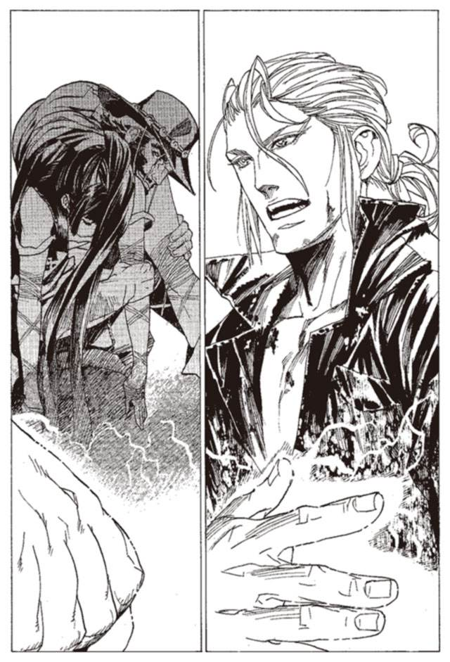
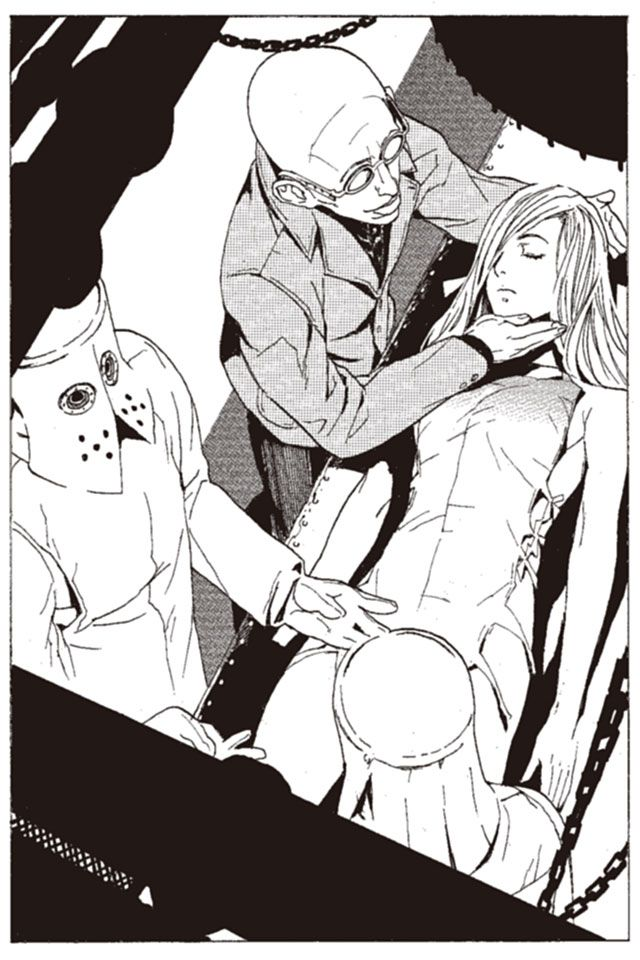

| 戦う司書と黒蟻の迷宮 BOOK3 (集英社スーパーダッシュ文庫) | |
| III of「戦う司書」シリーズ | |
| 山形 石雄 | |
| 集英社 (2006) | |
| Rating: | ***** |
| Tags: | コミック・ラノベ・BL, ライトノベル, 集英社 |
最強の司書が守る『本』に残る、無垢な愛。
パントーラ図書館内の迷宮書庫。ある日、不審な美女たちが迷宮に侵入。武装司書のモッカニアと関係があるらしく...。死者の全てが「本」となる世界の壮大なファンタジー、待望の第３弾！
**

戦う司書と黒蟻の迷宮
BOOK 3
山形石雄
この本は縦書きでレイアウトされています。
また、ご覧になる機種により、表示の差が認められることがあります。
登場人物紹介
モッカニア
武装司書。ハミュッツと並ぶ戦闘力を持つ。現在は図書館迷宮の中に閉じこもって生活している。
ウインケニー
神溺教団の戦士。モッカニアの天敵となるべく育てられた。
レナス
謎の女性。モッカニアの母親を名乗るが、その正体は不明。
ハミュッツ
バントーラ図書館館長代行。冷酷で極めて好戦的。投石器を操る。
ロコロ
神溺教団の戦士。
イレイア
最年長の武装司書。かなりの武闘派。だが、普段は優しいおばさん。
フィーキー
武装司書。真面目で融通の利かない性格。
イラスト／前嶋重機
戦う司書と黒蟻の迷宮
序 章 ストーブのない部屋
「ミンスさん、逃げて！」
突如聞こえてきた女性の声に、武装司書ミンス＝チェザインが思わず立ち止まる。腰に差した鉈のような剣に、太い指先がかかる。
壁も、床も、天井も、灰色の石でできた回廊のなかにミンスはいる。何千年もの間、人とそうでないものたちが行き来した石の床は、摩耗し、つるりと滑らかだ。床や壁のところどころに染みがある。灰色のもの、灰褐色のもの、褐色のもの、赤褐色のもの、そのどれもが武装司書や見習いたちが流した血の跡だ。
左右の壁には、十メートルほどの間隔で、人面のレリーフが彫り込まれている。材質は、周囲の熱を吸い取って発光する冷青石英。冷たく青白い、ぼんやりとした光が回廊全体を照らしている。レリーフの人面は老若男女さまざまで、その形も表情も一つとして同じものはない。一つだけ共通しているのは、それらの全てが死者の顔だということ。この世の全ての死を収める図書館を、象徴するようなレリーフだった。
ひどく寒い。冬の気温だ。指をかけた剣の柄が氷のように冷たい。冷青石英の吸熱効果のせいでもあり、この場所全体を支配する死の香りのせいでもある。
彼がいるのは、バントーラ図書館地下迷宮第五階層。過去管理者の生み出した図書館の、いわば中核というべき場所だった。
長い一本道の向こうから、一人の女性が悲鳴を上げながら走ってくる。武装司書見習いのノロティ＝マルチェだ。
「ノロティ」
駆け寄ってきた彼女の顔を、ミンスはいきなりわし掴みにする。ノロティの足が宙に浮いた。
「いた、いたたた、いきなり何ですか」
「何が逃げろじゃ、なにも追ってきとらんわ」
持ち上げたノロティを振り返らせて、床に置く。後ろを見ると、ノロティはほっと息を吐いた。
「よかった.........」
安堵の息を漏らすノロティを、ミンスは後ろから軽くはたく。
「お前の、たかが第五迷宮でそんな大声上げてどうすんじゃ。ほんとに武装司書になる気あんかお前は」
「そ、そういうことじゃないです」
ノロティが白い息を吐きながら反論する。
「衛獣に追いかけられたんじゃありません。人に追いかけられてたんです」
「誰が追いかけてきたん？」
ミンスが聞くと、ノロティは少し答えにくそうに顔をそらした。
「モッカニアさんです」
ミンスが沈黙する。苦虫を噛み潰したように、眉間にしわを寄せる。
「......なんじゃ、お前モッカニアに会ったんか」
ミンスはため息をつく。そして、ノロティの頭をもう一度軽くはたく。
「あのボケに近づくお前が悪いわ」
「理不尽だ.........」
ノロティは呟く。まったくそのとおりだとミンスは思った。
一般に、武装司書は奇人変人が多い職種と言われている。ミンスもそれを否定する気はない。彼自身、まともな社会には馴染めないことは認めるし、自分以上に馴染めそうにない奴がたくさんいることも認める。
無理のないことではある。日常的に生死の狭間を行きかう仕事が、まともな人間に務まるわけがない。若い日々を、魔法と戦闘の修練に費やした連中に、一般的な社会性を持てというのも酷な話だ。さらに言えば、魔法とは世界の公理から逸脱する技術である以上、それを体得するということは、世間一般の常識から外れていくことでもある。
奇人が多くなるのもしょうがない。だがそれでも、いい加減にしろと言いたくなることもたまにはある。
ミンスはノロティと別れ、数分歩いた。その間、階段を二つ上り、一つ降りる。角を三つ曲がり、二つの十字路を通り過ぎる。複雑な迷宮の中で、ミンスは一度も迷う様子を見せない。
図書館ができてから数千年。複雑極まりない迷宮も、ある程度は攻略の方法が確立されつつある。第五迷宮を突破する道筋は、大きく分けて五十一通りあるということがわかっている。その中の五十一番目のルートから、一つ道を外れた場所に向かう。着いた先は迷宮の隅、行き止まりになっている場所だ。
「モッカニア」
ミンスは呼びかける。返事がない。
「モッカニア、おらんのか」
もう一度ミンスは呼びかける。
迷宮の行き止まりの壁に、異様なドアがあった。石の壁の中に、突然現れた楓造りの小さなドア。扉の真ん中には、カナリヤを象った小さな呼び鈴。ロナ公国風の優雅なたたずまいが、冷たく凍りついた迷宮の中に絶望的にそぐわない。
「モッカニア！ おらんのか？」
ドアノブに手をかけたそのとき、中から大きな声がした。
「いる！」
「おったなら返事せい」
「返事は今した」
「すぐにしろ」
ミンスはそう毒づきながら、ドアノブをひねる。ドアに負けず劣らず中も異様だ。
広さはさほどではない。七メートル四方ほどで、人が一人暮らすにはやや狭い。
中に特別な物があるわけではない。質素ながら、品の良い家具類。床に散らばっているのは、子供のおもちゃ。りんご畑と水車を描いた品のいい風景画が壁にかかっている。貧しいながらも幸せに暮らす、小さな家族の部屋といったところだろう。
部屋自体はおかしくはない。だがそれらは全て、どこかの町で平和に暮らす家族のためにあるもので、バントーラ図書館封印迷宮、第五階層にあるべきものではない。
ミンスはいつもこの部屋に来ると目眩がする。日常と非日常の境が崩れていく感覚が、精神を蝕む。
「どうした、ミンス」
部屋の主は、ミンスに背を向けている。おもちゃの散らかった床の上に座り、手で何かをいじっているように見える。
「モッカニア。お前、ノロティになにしたん？」
「何の用だと聞いているんだ」
部屋の主.........モッカニアが首だけで振り向く。
青い眼の、端整な顔をした青年だ。うなじまで伸びた髪の毛の間から、白い顔がのぞいている。
服がまともならなかなかいい男だろう。だが藍色のスーツはしわだらけで、シャツは第二ボタンまで開いている。シルクの品の良いネクタイは、結びめが胸の真ん中にある上に小剣が大剣より長くなっている。まさに世捨て人そのものだ。
モッカニアは寝起きのようなぼんやりした眼を向ける。
「今、とても大切なところだ。話ならあとにしろ」
そう言って、モッカニアはそっぽを向く。そして、手に持ったりすのぬいぐるみを持って遊び始めた。
「きつねの坊やはいいました。もうすぐさむい冬がくるよ。たくさんのどんぐりと、あたたかい葉っぱをあつめないと。きつねの坊やはともだちの、りすのところに行きました」
童話らしい。聞いたことのない童話だ。モッカニアの自作かもしれない。
「りすくん。ぼくに、葉っぱをたくさんちょうだい。りすの坊やはいいました。わかったよきつねくん。すぐに集めてもっていく。
りすくんはとてもいい子だと、きつねくんは思います。きつねくんのためになら、何だってしてくれるからです。
それにひきかえくまくんは、とてもひどいと思いました」
モッカニアはぬいぐるみを動かしながら、話し続ける。まさかそのお芝居がとても大事なことではないだろうな、とミンスは思った。
彼の名は、モッカニア＝フルール。今年で二十三歳になる。
武装司書としての経歴は、すでに五年を超えている。ミンスよりも三つ若いが、武装司書としての経歴は二年も先輩だ。
彼はもともと、将来を嘱望されるエリート武装司書だったという。若くして武装司書の資格を得て、仕事には熱心。品が良く、礼儀正しく、次代の館長代行は彼をおいて他にはいないと言われたともいう。
だがある時期から、彼は突然、人前に出るのを嫌がるようになった。他人と話すのも避け、特に女性と話すのを嫌った。
さらに、日中は外出しない、島の外には出ないなどと、奇行が目立つようになり、最終的には迷宮の中に勝手に住処を作ってしまった。現在は迷宮の中に閉じこもり、外に出るのは食料と水を調達するときだけになっている。
先日のバントーラ図書館襲撃事件で、地上でミンスたちが『怪物』と戦っていたときですら、この部屋でおやつを食べていたほどだ。
モッカニアはぬいぐるみで遊び続ける。
「くまくんは、森でいっとう大きくて、とても怖いのです。やいきつね。おれのすまいにはちみつをたくさんもってこい。
冬が近い森の中に、はちみつは少ししかありません。それにはちみつはきつねくんだって大好物なのです。ですがくまくんが怒るととても怖いので、きつねくんはいつもくまくんの言うとおりにするのでした。
きつねくんがはちみつを探していると、りすくんが話しかけてきました。きつねくん、木の葉とはちみつを探してきたよ。きつねくんはこたえました。ああ、ありがとうりすくん。きつねくんはすぐにそのはちみつと葉っぱをくまくんのところに持っていきました。
ああ、おまえはいいやつだ。そういってくまくんは巣のなかにひっこんでしまいました。なんだい、おれがお前よりつよかったら、お前なんてなんでもないのに」
ミンスは懐から酒精を取り出し、一口飲んだ。そしてため息をつく。
これ、いつになったら終わるんだ？
「ですが、その日きつねくんは、森の中で話し声をききます。ありたちの話し声でした。ありたちは森のなかでいっとう弱い生き物です」
そこで、童話は急に途切れた。手にしたぬいぐるみを弄びながら、じっとモッカニアは黙り込んでいる。
「モッカニア。そのあとどうなるんじゃ」
「うるさい！」
モッカニアはきつねのぬいぐるみを床に置いた。ひどく苦しんでいるようにミンスには見える。だが何に苦しんでいるのかはさっぱりわからない。
「なんなんだ、お前は」
「うるさい」
モッカニアは立ち上がり、背中を丸めて部屋の隅に歩いていく。
「今度はなんじゃ」
「おやつの時間だ」
戸棚をあさる。中から取り出したのは、棒のついた赤いキャンディだった。モッカニアはそれをせわしなくしゃぶる。
モッカニアは、戸棚の中からもう一つキャンディを取り出し、ミンスに投げた。
「おやつの時間だから、食べるといいんだ」
放り投げられたキャンディを、ミンスはすぐに投げ返す。
「甘いものは好かん」
「妙な奴だ」
モッカニアは、怪訝な顔でミンスを眺め、二つ目のキャンディを口に入れた。
この有様の彼が、武装司書を続けていられるのは、ひとえに彼の能力の高さによる。その戦闘能力は館長代行ハミュッツに次ぐとも、あるいは超えるとも言われているのだ。
その実力を目の当たりにしたことはないが、その恐ろしさはミンスも聞き及んでいる。
キャンディを舐めながら、ふいにモッカニアが訊ねてきた。
「ところでミンス。さっきのはしたない女は誰だ？」
「.........ノロティのことか？」
「ノロティとは誰だ？」
モッカニアが、真顔で問いかける。
「見習いのノロティだ。何で知らんのじゃ」
「どんな女だ」
「南方の辺境から来た女だ。一年見習いをやっとるが、頭が悪い。この間の『怪物』事件ではそれなりに活躍しとった」
「『怪物』事件とは何だ？」
モッカニアはなおも真顔である。頭が痛い。
「バントーラが神溺教団に襲われた事件だ！ 何で知らんのじゃ」
「僕には関係のないことだから知らないんだ」
もはやかける言葉はない。ミンスは心の平衡を保つために、話題を変えることにした。
「で、お前ノロティに何したん？」
モッカニアは二つのキャンディをなめながら答える。
「あの女がストーブを持ってきたんだ。話しかけたら逃げた」
「なんて話しかけたんじゃ」
「この部屋にストーブはいらない。怒ったら逃げたんだ」
「.........」
「立ち止まれと言ったらもっと逃げた。おかしな女だ」
ふと見ると、部屋の隅に小さなストーブが置いてある。ばらばらに壊されていた。おそらくノロティが逃げた後、モッカニアが叩き壊したのだろう。
この男のことだ。意味不明の論理と、挙動不審な態度で話したのだろう。ノロティだって逃げて当然だ。
「まったく気分が悪い。もう一つキャンディを食べよう」
戸棚をあさるモッカニアを、ミンスは頭痛を抑えながら眺めていた。
「ところで何の用だ？」
モッカニアに言われて、ミンスは自分の用事を思い出す。用があって訪ねてきたのだ。すっかり忘れていた。
「借りてた羽蟻を返しに来たんじゃ」
腰の袋から、小さな瓶を取り出す。先日の『怪物』との戦いで使った、探索用の羽蟻だ。しばらく前にモッカニアに借りたのだが、返すのを忘れていたのだ。
「その辺に置いておけ」
モッカニアが、興味なさそうに言う。
「なあ、これもうしばらく使わせてもらってええか」
モッカニアは首を横に振る。
「借りたい人は他にもいるし、僕も使うんだ。お前一人に貸しておけるものじゃないんだ。言われたとおりその辺りに置いておけ」
置けと言われてもどこに置けばいいのか。部屋の中は散らかっている。床に置くのはまずかろうと、適当な場所を探す。
「あと、配架と探索の『本』が山ほどたまっとるからな。ミレポックが迷宮の出口にいるから、そこで指示を受けておけ」
「わかった。あとで行く」
なんで借りてたものを返すだけで、こんなに疲れなきゃならんのだとミンスは思う。
そのとき、ミンスはテーブルの上に、あるものを見つけた。かごの中に入った、小さな『本』の欠片だ。
「.........？」
『本』は全て、書庫に収めなければならない。たとえ欠片でもそれは例外ではないはずだ。
「これ、なんじゃ」
そう言いながらミンスは、それに手を触れようとした。だがその瞬間、歴戦の戦士だけが持つ直感が、それを押しとどめさせた。これに触れてはならない。理由はわからないが、これは触れてはいけない。
隣には、世界最強の一角であるモッカニアがいる。彼がそばにいる限り、これに触れてはならない。
「.........モッカニア」
「なんだ」
「これ、大事なものだろう。しまっておけ」
そう言って、ミンスは『本』の欠片を指差した。
「.........ああ」
モッカニアは、『本』の欠片を手にとって、胸のポケットにしまいこんだ。
「そうだ、あのノロティとかいう見習い、これに触ろうとしたんだ」
「.........」
「とんでもない女だ。これに触ろうとするなんて」
ミンスはモッカニアの魂が、戦いの色に染まるのを見る。もし、あの『本』に触っていたら、殺されていたかもしれない。ミンスも、ノロティも。モッカニアはそれができる男だ。
「大事なものなら持っておけ」
「なるべく、そうすることにする」
そう言って、モッカニアはポケットを撫でさすった。
「これは、この部屋になくちゃいけないんだ。ストーブはあってはいけない。ぬいぐるみはなくてはいけない。おやつもなくてはいけない。決まっていることなんだ」
モッカニアは一人で語り続ける。
その『本』は、誰の『本』なのか。それを聞くのをミンスはやめた。おそらくそれは、彼の触れてはならぬ何かにあたる。
ミンスは部屋を出て、迷宮の奥へと歩いていった。
第一章 赤の警灯
神立バントーラ図書館は、大きく分けて六つの書庫と、五つの迷宮で構成されている。その全ては地下にあり、地上部にある大冥門のほかには、いかなる侵入経路も存在しない。
もっとも地上に近いのは、第六書庫。封印をされておらず、戦闘能力を持たない司書も立ち入れることから、開放書庫とも呼ばれている。
『本』の五分の四はここに収められる。ごく普通の人が、ごく普通に生きて、最後に収められる場所がここだ。
第六書庫の最奥にある扉を開けると、図書館の真の姿、図書迷宮が姿を現す。
正確に測った者はいないが、地上から最深部までは約一キロ。広さは一つの町をゆうに越えるといわれている。
中は六つの階層に分かれ、無論のこと深く潜るにつれて迷宮は複雑さを増す。封印の指定を受けた『本』は、その重要度と危険性に応じて、迷宮の中に点在する書庫に収められていくのだ。
この迷宮に挑み、同時にこの迷宮を守るもの。それを武装司書という。
静まり返った第五図書迷宮。ミンスと別れた後、ノロティは一人歩いていた。慎重に、辺りの気配を探る。五十段ほどの長い階段を降りたとき、寒さともまた違う、産毛が逆立つような気配を感じた。ノロティは背中の背嚢をそっと下ろす。正面から、何かが歩いてくる。黒インクのような色をした、馬に似た四足獣。
侵入者を拒む、衛獣と呼ばれる獣たちだ。過去管理者バントーラに使役される彼らは、迷宮内の命あるものを、無差別に攻撃する。彼らを打ち倒す力のないものに、迷宮に入る資格はない。
「よし、かかってこい」
ノロティが、拳を構える。
馬の背中から、見る見るうちに人の上半身が生えてきた。黒い鎧に身を包んだ、下半身のない騎士。その右手には槍が、左手には先込め式の短銃が握られている。
「〝騎兵〟か」
ノロティが呟く。
〝騎兵〟が突進を開始する。同時に構えた短銃を、ノロティに向けて放つ。ノロティは拳に巻かれた縄で、弾を弾いて逸らす。突き出された槍を紙一重でかわしながら、馬の前足に蹴りを入れた。ノロティのわき腹にわずかに血が滲む。
バランスを崩した〝騎兵〟は横倒しになる。ノロティは短銃を踏み潰しながら、もう片方の足で〝騎兵〟の頭を蹴り上げた。
首を跳ね飛ばされた〝騎兵〟は動きを止める。黒い騎士の上半身が、馬の体内にもぐっていく。〝騎兵〟はよたよたと立ち上がり、ノロティに尻を向けて去っていった。
「ふう」
とノロティは、息を吐き、体の力を抜く。第五階層の衛獣ならば、ノロティの力でも倒すことは難しくない。
ノロティは荷物を担ぎなおして、また歩き出した。
それから、十二の階段を上り下りし、五十八の角を曲がる。その途中で数人の武装司書や見習いとすれ違った。
長い階段を登りきると、大きな壁の真ん中に、赤銅色の扉が立ちふさがっている。人の背丈の三倍はある両開きの扉に、ノロティは手をかける。
「ふっ」
と息を止めて、重い扉を押す。地の底が揺れるような大きな音を立てて、扉がゆっくりと開く。流れ込んでくる暖かい空気は、生者の住む春の空気だ。
第六書庫の最下部、巨大な螺旋階段の一番下にノロティは帰ってきた。
「ノロティ＝マルチェ、ただいま戻りました」
「お帰りなさい、ノロティ」
声がかかる。ミレポック＝ファインデルが、階段の手すりに手をかけ、ノロティに語りかけてきた。
「お疲れ様、今回は早かったわね」
そう言いながら、紅茶のカップをノロティに手渡す。甘く熱い紅茶が、冷えた体に染み渡る。
「少しは成長したのね、ノロティ」
そう言ってくるミレポックの口調は優しい。しばらく前の『怪物』事件以降、ミレポックはノロティを少しだけ見直しているようだった。
「ん、あまり実感はないです」
「そういうものよ。実感はあとからついてくるわ」
ノロティが飲み終えたカップを受け取り、ミレポックは笑う。この同い年の上官に認めてもらうことは、素直に嬉しい。
「『本』を配ったら、少し早いけど、帰ってひと眠りしてきなさい。明日も働いてもらうから、気を抜かれても困るけれど」
「ミレポックさんは？」
「わたしは明日の朝まで、管制室を任されているわ。それが終わったら仮眠をとって、少しマットアラストさんのほうを手伝ってくるわ」
「そうですか.........」
ミレポックは、管制室の中に戻っていく。ノロティも上に向かおうと、階段に足をかけたそのとき、上から一人の女性が歩いてきた。
「あら、ノロティ」
ノロティの足が止まる。体が、衛獣と戦っていたとき以上の緊張に震える。
サンダルの足音を響かせて降りてきたのは、バントーラ図書館館長代行、ハミュッツ＝メセタだった。
「戻ってきたのね、お疲れ様。頑張ってるかなあ」
小さな荷物を腰にぶら下げて、ハミュッツはゆっくりと歩み寄ってくる。
先日ブジュイで行われた『怪物』との戦い。そのときあったことは、ごく少数の武装司書たちにしか知られてはいない。
ハミュッツがノロティを操って『怪物』を復活させようとしたこと。その後、エンリケと戦おうとしたことは、誰にも話していない。ミンスは、あのときのことは忘れろと言っている。そうするべきだとノロティも思う。だが、あの日ハミュッツ＝メセタと相対した恐怖は、忘れようと思って忘れられるものではない。
「だ、代行も配架作業ですか？」
ノロティは声を上ずらせながら、なんとか普通に話しかける。普通なのは口だけで、体はおびえて縮こまっている。
「うん。人手が足りてないからねえ」
そう言ってハミュッツは、ノロティの頭を撫でる。
「ノロティもがしがし働いて、早く一人前になりなさいよう」
ノロティの髪をいじくりながら、ハミュッツは笑う。
「どうしたの、ノロティ。顔が青いわよう」
「いえ、何でもありません」
「あらそう、じゃあね」
ハミュッツはそう言いながら、迷宮の中へと去って行った。
ノロティには、ハミュッツがわからない。有能だが、極めて好戦的な人物というのが一般的な風評だ。ノロティも今まではそう思っていた。だがハミュッツの本質は、もっと破滅的な何かのような気がしてならないのだ。
「怖いけど.........どうすることもできないか」
とノロティは呟く。そしてまた螺旋階段を登り始めた。
『本』の入ったかごを抱え、一般司書たちがあわただしく上り下りする。彼らとすれ違いながら、ノロティは地上近くまで登る。
最上部近くから横道に入ると、そこは一般利用者の待合室になっている。
中は煙草の煙と、待ちくたびれた人々のため息に満たされている。『本』の閲覧のために、煩瑣な手続きと長い待ち時間に耐えている人たちだ。
「おお、ノロティさん、待っていましたよ」
「早く読ませてくれ。もう我慢の限界だ」
閲覧希望者と一般司書たちが口々にノロティに声をかける。
「ノロティさん、水をどうぞ」
一般司書の一人が、ノロティに水筒を差し出す。
「ああ、どうも。でものどは渇いてませんから。それよりも『本』を配りましょう」
ノロティは背嚢の中から、小さな木箱を取り出しながら答える。
「.........そうですか」
水筒を差し出す一般司書は小さな声で答えた。ノロティはそれにかまわず、背嚢の中から『本』を取り出す。
「ええと猟師のグール＝バロック氏の『本』を所望の方は」
「ワシだな」
手を上げたのは、腰の曲がった眼鏡の老人である。古代文明研究の大家だと聞いている。ノロティは型どおりの説明を行う。
「ご存知のことと思いますが、再度説明させていただきます。この『本』は第五封印指定を受けています。この『本』を書庫外に持ち出すこと、他人に見せることは固く禁止されています。違反の際には、虚構抹殺杯アーガックスによる記憶抹消、および図書館への立ち入りを禁止。情報漏洩、『本』の破損には、それに刑事罰が加わります。ご了承いただけましたら、こちらにサインを」
「はいはい、ようし、これで九〇〇年代の南方辺境の生活様式がわかるぞ」
ノロティは書類のサインを確認し、閲覧室へ老人を案内する。
「ええと次は、海洋冒険家のブルーネイ＝スタンプの『本』を所望の方」
「私だ」
手を上げた男に、ノロティが『本』を渡す。『本』の主と同じ冒険家だろうか。顔に大きな傷をつけた、たくましい男だ。
ノロティは、説明とサインの確認をして、男を閲覧室に案内する。
「天文学者のホニイ＝マッシェアの『本』」
「いつまで待たせるのよ！ 科学庁の天文学会は来月なのよ！」
学者らしい女性が、ノロティの説明も半ばに閲覧室に駆け込んでいく。
「石炭鉱山の持ち主、コルト＝モアリの『本』」
一人の男が、にやりと笑って立ち上がる。表向きは石炭鉱山の開拓が目的ということになっているが、本当の目的は、莫大な遺産の所在を突き止めることだろう。男は喜びを抑えきれないといった顔で、『本』を受け取る。しかし、ノロティは知っている。さっき『本』を読んだのだが、遺産など実は一トホラもないのだ。
「次は、魔術師のミル＝ムーミトンの『本』を所望の方」
このような調子で、ノロティが全ての『本』を配っていく。待合室の三分の一の人が『本』を受け取り、閲覧室へ向かっていった。
さて今日の仕事は終わり、とノロティが思った瞬間、声をかけられた。
「あの」
喪服を着た、三十歳ほどの女性だった。
「どうしました？」
「あのう、夫の、ブルーネイ＝スタンプの『本』を、持ってきていただけるはずなのですが......」
「ああ、それですか。先ほど別の方にお渡ししましたので、そちらの閲覧が終わってからになります」
「夫は海洋冒険家ではないのですが.........」
喪服の女性が、躊躇いながら言う。ノロティの後ろで『本』のリストを見ていた一般司書が、ノロティに言う。
「ノロティさん、これ同姓同名の別人ですよ」
どうやら、やってしまったらしい。ノロティはごまかすことを考える。だが後ろでは一般司書がノロティをにらみ、前では喪服の女性がハンカチを握り締めている。
「.........取りに行ってきます！」
ノロティは、待合室から逃げるように駆け出した。
「成長してないなあ、自分」
そう呟きながら、ノロティが第六書庫の螺旋階段をさらに登る。
もう一度図書迷宮に潜る前に、食事をするつもりだった。迷宮は寒いので、空腹はこたえる。
「待ってください、そこの方」
ノロティが振り向くと、さっき『本』を渡した冒険家がいた。
「どうしました？」
「相談なんですが、私に『本』を取りに行かせてはくれませんか？」
ノロティは心の中でため息をつく。たまに、こういう手合いがいるのだ。中を見てみたいという新聞記者や、腕試しをしたいという戦士など、迷宮に入りたがる人々はあとを絶たない。
「なに、腕に覚えはありますからね。心配しないでください」
冒険家は、腕をまくる。たしかによく鍛えられているようだし、物腰を見る限りなかなかに使える戦士だろう。だが、そういう問題ではない。
「申し出はありがたいのですが、だめです。武装司書か、見習い以外は、中に入れないことになっているんです」
「そうですか。申し出はありがたいと」
「はい。ですが、規則ってものがあるのです」
ノロティがそう言うと、冒険家はどういうわけか小さく笑った。そして、もと来た階段を降りていく。
「やれやれ」
『怪物』との戦いから半月が過ぎた。戦いを終えたノロティを待っていたのは、何も変わらない、今までどおりの日常だった。
『本』の入った背嚢を背負い、迷宮の中を行き来する、今までと同じ毎日。相も変わらず山積みの仕事を、こなすだけの日々が戻ってきていた。
「エンリケさん、今頃どうしてるのかな」
ノロティは、戦いの中で出会った青年の顔を思い出す。今はバントーラ図書館に滞在しているはずだ。だが、戦いが終わってから、一度も顔を合わせていなかった。
時は同じく。
バントーラ図書館の地上部分。巨大な城の一室に、二人の男の姿があった。
一人は武装司書のマットアラスト。そしてもう一人はかつての『怪物』エンリケ＝ビスハイルだった。神溺教団を離れ、武装司書の協力者となっている男だ。
エンリケは、椅子に座って目を閉じている。その横でマットアラストは静かにパイプをくゆらせて立っていた。二人は物音一つ立てない。エンリケは自らの中に精神を集中させ、マットアラストは彼を邪魔しないように息を殺していた。
「.........だめだな」
と、エンリケが目を開いた。
「無理か」
マットアラストが隣の椅子に腰を下ろす。
「仮想臓腑の中に、知識が詰まっていることはわかる。だがそれに触れて、読み取ることはできない」
「それは困ったね」
マットアラストは煙を吐く。
「魔道庁の見解どおりってことか。エンリケ君は、ザトウの体を乗っ取ることはできても、ザトウの魔法権利までは乗っ取れない」
マットアラストは魔道庁の研究者から送られてきたレポートに目を向ける。そこには『本』食いについての研究結果と、何人かの研究者の意見が書かれている。
武装司書の協力者になったエンリケは、神溺教団について知っていることを、もらさずマットアラストに伝えている。しかし利用されるだけの肉に過ぎなかったエンリケが知っていることは、ごくわずかなことだ。船の中でのこと、島でのこと、ザトウを乗っ取ってからのこと。エンリケから聞けたのはそれぐらいだ。
神溺教団のことを深く知っているはずの、『怪物』ザトウ＝ロンドホーン。エンリケは今、仮想臓腑の中から、彼の記憶を引き出そうとしていた。
「おそらく、食った『本』の能力を使うのも、食った『本』の知識を読み取るのも、ザトウの魔法権利なのだろう。事実、今の俺は『本』を食うことも、布を操ることもできない」
エンリケは指先から小さな火花を放ちながら言った。
「超回復は使えるんじゃないかな？」
「あれは例外のようだ。自動的に作用する能力だからか、あるいはカヤスが、俺のために使わせてくれているのかもしれない」
目を伏せながらエンリケが言う。もはや帰らぬ、仲間のことを思い出しているのだろう。
「それで、エンリケ君。これからどうする？」
「魔術審議を行って、新しく権利を獲得する。ザトウの記憶を読み取ることができるようになる権利だ」
難しいだろうな、とマットアラストは思う。先天的な能力である『本』食いの魔法権利を、通常の手段で獲得することは不可能に近いだろう。だが、やめておけと言うことはマットアラストにはできない。
マットアラストの期待以上に、エンリケは真摯だ。彼の行動に水を差してはいけないだろう。
「.........悪いな、マットアラスト。たいした協力もできない」
「気にするな。一度殺しあった仲じゃないか」
と、マットアラストは笑う。厳密には、あれはエンリケ君ではないのだがね、と心の中で付け加える。
「それに、今の君も十分役に立ってくれてるよ。たとえば、君がいた島からは、かなりの遺留品が見つかった。それだけでも大きな進歩だ」
そのとき、ノックの音もなく、ドアが開いた。
「マットアラスト。グインベクス政府から、答申が来た」
中に入ってきたのは、濃緑の軍服姿の男だった。中肉中背の、目立たない体格。努めて特徴を消そうとしているかのように、髪を後ろに撫でつけている。
武装司書のシンボルが、軍服の胸に勲章にしてつけられている。手に数枚の書類を持っている。
「グインベクスからか。なんだって？」
「神溺教団の島で見つかった食糧の製造元のことだ。グインベクス陸軍の、正規の軍用食糧で間違いはないそうだ」
「やっぱりね。製造元からどこまで辿れる？」
「わからん。これから行って指示を出すつもりだ」
男は、テーブルに書類を置く。そしてエンリケに目を向け、ふん、と鼻を鳴らす。
「一等武装司書のフィーキー＝クインだ」
冷徹な声で自己紹介をする。
「一度会ったから知っている。そのときに名前も聞いた」
フィーキーはエンリケから視線をはずす。
「そうか。教団の捨て犬のことなど、いちいち覚えている暇はないものでな」
「おい、フィーキー。仲良くしろよ」
パイプをふかしながら、マットアラストがたしなめる。
「マットアラスト、こいつには注意しろ」
フィーキーはそう言い捨てて立ち去った。マットアラストは、お手上げ、のポーズで肩をすくめる。エンリケは憮然とした顔でフィーキーを見送っていた。
「すまんね、エンリケ君。気を悪くしないでくれ。少し真面目すぎるだけなんだ」
「ああ。俺は気にしない」
「まったく、グインベクスの人間は真面目すぎて困るね」
マットアラストがパイプの灰を落とした。葉を詰め替え、マッチで火をつけたところで、ふと話題を変える。
「なあ、エンリケ君。どうして俺が君についているかわかるかい？」
エンリケは、首をかしげた。
「わからん」
「理由はね、俺が誰よりも不意打ちに強いからだ」
「どういうことだ？」
「もしも俺が教団の立場だったら、間違いなく、君を消す」
「.........そうか？」
「神溺教団の強みは、教団の実態が知られていないということだ。何よりも情報の漏洩を恐れるはず。違うかな？」
「そうかもしれないが......」
「実を言うと、君に期待しているのは、エサの役割だ」
マットアラストが、右手の人差し指を、エンリケの顔に近づけていく。
「不埒な奴らが君に近づいてくる.........そこを」
左手で人差し指を掴む。
「ガブリ」
マットアラストは自分の指を自分でねじ上げる。
「こういうやり方は嫌いかな」
「いや、悪くない」
エンリケの体に、小さく火花が散る。マットアラストは、頼もしいことだと笑った。
戦いが終わってから、二週間。そろそろ仕掛けてくるころだとマットアラストは思っている。さて、どこから仕掛けてくるか。
第六書庫にある武装司書の休憩室で、ノロティは食事を取っていた。サーモンの燻製と玉ねぎを挟んだライ麦のパンを、飲み物なしで腹に詰め込む。
「また迷宮に潜るのね、ノロティさん」
お盆の上にまだ湯気の立つ焼き立てのパンを載せ、イレイアが語りかける。口の中がいっぱいになっているノロティは、首だけで返事をする。
「ずいぶん熱心に働くわね。いいことよ、ノロティさん。たっぷり食べてたっぷり働きなさい」
ノロティはお盆を受け取る。四つ目のパンはデザート代わりだ。バターと蜂蜜をたっぷり染みこませてある。摘んだ指の先まで甘くなりそうな匂いだった。
第六書庫の休憩室は、別名イレイアおばさんの部屋ともいわれる。お菓子作りの名人イレイアが、働く司書たちのために、腕によりをかけてくれるのだ。
「ん」
ところで、少し水が欲しい。ノロティは蜂蜜のパンを頬張りながら、水を探す。
「.........」
瓶の水を手に取る。だが、軽い。口いっぱいに頬張っていたノロティは、飲み物を探して視線をさまよわせる。と、そのとき、ノロティの手元に水の入ったコップが置かれた。
ノロティは躊躇わずに、その水を飲み干す。
「ん、どうも」
水を差し出したのは、一般司書らしき男だった。男は、礼を言うノロティに目も向けず、休憩室を出て行く。
そのときノロティは、小さな違和感を覚えた。食べる手を止めて、考える。だがすぐにあきらめた。
ノロティは気がついていない。その男は、閲覧者の待合室で、ノロティに水を飲ませようとした男だった。それは気がつくには余りに些細なことだった。
部屋を出た男は、螺旋階段をふらふらと降りていく。その足取りは、酒に酔っているかのようにおぼつかない。男は呟く。
「ノロティ＝マルチェに水を飲ませる。ノロティ＝マルチェに水を飲ませる」
男は呟き続ける。まるで壊れた蓄音機が、同じところを再生し続けるように。
「ノロティ＝マルチェに水を飲ませる。ノロティ＝マルチェに水を飲ませる」
どうかしたのかと、声をかけてくる者もいる。男は見向きもしない。ぶつぶつと呟きながら、書庫の隅に足を運ぶ。
「ノロティ＝マルチェに水を飲ませる。ノロティ＝マルチェに水を飲ませる.........ノロティ＝マルチェに.........水を.........飲ませた」
男の呟きが終わった。しばらくの間、黙ってそこに立っていた。そして、胸のポケットから、小さなナイフを取り出した。それをゆっくりと、静かに、自分の首筋に突き立てた。
そのときミレポックは、管制室で電信機の点検を済ませたところだった。
第五迷宮入り口の横に設置された管制室。その中身は、古風なバントーラ図書館に似つかわしくない。図書迷宮内の各所と繋がった電信機、迷宮内にいる武装司書の異変を知らせる緊急報知器。五十年ほど前までは考えられなかった近代的な設備だ。近代化、機械化の波は伝統を誇るバントーラ図書館の中にも押し寄せてきているのだ。
機器に異常がないことを確認したそのとき、ブザーが鳴った。
数百個あるランプの一つが赤い光を放っている。第六書庫内で、異変が起こった報せだ。ミレポックは通信機の受話器を取り、第六書庫の保安室に繋げる。
「こちら管制室。何かあったの？」
動揺する一般司書をなだめながら、ミレポックは話を聞く。異変の内容を知ったミレポックは、思わず声を上げる。
「自殺？ 図書館の中で？」
「はい」
ミレポックは悩む。自分が行くべきかもしれないが、ここを無人にするのも問題がある。
だが、今は迷宮に潜っている武装司書も多くない。危険な場所に足を踏み入れているのは代行一人。トラブルが発生する可能性は少ない。大丈夫だろう。
「すぐ行くわ、イレイアさんを呼んでおいて。それと現場には手を触れないこと。わかったわね」
ミレポックは通信を切り、拳銃を腰に差して管制室を出た。
どうも、周囲があわただしい。何かあったのかとノロティは思う。それよりも早く『本』を取ってくるほうが大事だと考え、周囲のざわめきを無視する。
その途中、管制室を覗く。
「あれ？ ミレポックさんがいないな」
しばし辺りを見渡すが、姿は見当たらない。ノロティは管制室を出て、迷宮の入り口に向かう。
「ああ、待っていましたよ。ノロティさん」
迷宮の門の前に、二つの人影を見つける。
片方には見覚えがある。右目から唇にかけて大きな傷がある男。さっき『本』を渡した冒険家だ。麻袋の荷物を背中にくくりつけ、手には鋼鉄のピッケル。まるでこれから冒険に行くような出で立ちだった。
もう一人には見覚えがない。亜麻色の髪を長く伸ばした、二十代半ばの若い女性。目立たないながらも品の良いワンピースの上に、白鷺色のコート。美人だと、素直にノロティは思う。
眼が不自由なのだろうか。長い杖を持ち、焦点の会わない眼が、静かに床に向いている。
「さっそく行きましょう。待ちくたびれましたよ」
冒険家が、ノロティに笑いかける。なぜここにいるのか、何を待っていたのかノロティにはわからない。
「なにか、約束をしていましたか？」
「言ったでしょう。私たちを迷宮の中に入れていただけると」
「言いましたっけ？ そんなこと」
ノロティはあごに手を当てて考える。記憶にあるような、ないような。なぜか頭が、ぼんやりしている。
「言いましたよ。私が同行したいと言ったときに、ありがたいことですと言いました」
それは言ったと思う。確かに言った。だがどうして、その前後のことが思い出せないのだろう。いや、待て、それ以前に大事なことがあるはずなのに。
「時間が惜しい。早く行きましょう」
冒険家が、杖をつく女性を促しながら、迷宮の門に手をかける。
おかしい、何かがおかしい。ノロティはぼんやりする頭の中で考え続ける。何かがおかしいはずなのに、何がおかしいのかわからない。
「さあ、早く」
「わかりました。行きましょう」
そう言ってノロティは、図書迷宮に繋がる扉に手をかける。ひんやりとした扉の感触を感じる。命ある扉が、ノロティの魂の形を認識し、図書迷宮への侵入を許された者であることを確認する。扉の鍵が開く音がする。
「.........では行きましょうか」
ノロティは重い扉を引き、冷たい図書迷宮の中に足を踏み入れる。
「ノロティさん、どちらのルートから行きますか？」
「16が一番慣れていますから、そっちにします」
「そうですか。私たちは51ルートに行きます。ここでお別れですね」
冒険家が、杖をつく女性を促し、迷宮の中に消えていく。
ノロティは二人の後ろ姿を見送りながら、しばしそこにたたずんでいた。
何かが、おかしい。何か間違えている。それが何かわからないまま、ノロティはずっとそこに立ち止まっていた。
「.........追ってきていないな、ウインケニー」
と、冒険家が言った。非常に小さな声なので、隣を歩く女性にも届いていない。
「ああ、追ってきていない」
返事は、女性のものではなかった。冒険家の背中辺りで何かがうごめいた。背中にいる何かが、小さな声で問いに答えていた。
「潜入成功だな。冒険家のロコロ」
「それはもうやめろ。何が冒険家だ。馬鹿らしい」
男.........ロコロが言う。酷薄な笑みが、唇の端に浮かぶ。
「ところで、今のがガンバンゼルの『怪物』を寝取ったっていう女だろ。思ってたよりたいした女じゃなかったな」
ロコロが後ろを振り返りながら笑う。
「無駄話はやめろ。『怪物』のことは今は関係ない」
背中の声が言う。ロコロはその声に耳を貸さない。
「俺は思考共有女のほうが好みだな。硬そうなのがいけねえが」
そのとき、隣を歩いていた女性が、ロコロに声をかけた。
「何か、おっしゃいましたか、ロコロさん」
「いえ。何でもありません」
「そうですの」
女性は片手を頬に当てる。
「それにしても、ここは本当に寒いですわね」
「そうですな。まあ、じきに慣れますよ」
女性は心配そうに、呟く。
「モッカニアは、ずっとこんなところで暮らしているのね。体を悪くしていないか、心配だわ」
「そうですね、早く行きましょう。モッカニアのところへ」
「はい、急ぎましょう。会いたいです。早く会いたいですわ、私の可愛いモッカニアに」
足元を探る杖の音を響かせながら、女性はゆっくりと歩き続ける。
バントーラ図書館、地上部でマットアラストとエンリケが話し続けている。
「そう上手くいくかな」
エンリケが、武装司書の作戦に疑問を挟む。敵の攻撃を待ち、それに対応するという作戦は、味方側の戦力が圧倒的であることが前提となる。『怪物』の攻撃と撤退を許したバントーラ図書館の戦力を疑うのも当然だろう。
「なに、武装司書を見くびるな。あのときとはこっちの戦力だって違う」
「今の戦力はどれくらいだ？」
「今は、俺クラスかそれ以上の者が五人いる。代行と、俺と、イレイアさん......それにモッカニアという男がいるんだが、あいつは数に入れないほうがいいかもな」
「あと一人は？」
「君だよ」
「なるほど」
エンリケは、しばし考える。
「その全員を打倒できる戦力はこの世に存在するか？」
「それはちょっと無茶な話だよ。教団にそんな戦力があるなら、とっくの昔にバントーラは壊滅してるよ」
マットアラストが肩をすくめる。バントーラ図書館の戦力は、一国の軍事力をもはるかに上回るのだ。それをまとめて壊滅することなど、ハミュッツにもできない。
そのとき、一人の人物の存在を思い出した。ハミュッツと並ぶ、世界最強の一角である彼ならば、あるいは不可能ではないかもしれない。
「ただ.........ある限定的な状況に限っての話なら、俺たち全員に勝てるかもしれないって奴ならいる」
「誰だ？」
「心配するな。味方だよ」
「なんという男だ？」
「君はまだ会っていなかったね。さっき言ったモッカニアのことだよ」
「どういう男だ？」
エンリケが身を乗り出して聞いてくる。マットアラストは説明を始める。彼の能力、彼の人間性について。
けして、穏やかとは言えない表情で、エンリケはそれを聞いていた。
第五書庫に向かっていたノロティは、途中で足を止めて引き返していた。さっき出会った男たちのことが、どうしても気にかかる。門のところまで戻り、51ルートのほうに曲がる。
ノロティは思い出した。このルートの途中で曲がると、モッカニアの住む部屋がある。
「モッカニアさんに、何か」
ノロティは呟く。まさかあの化け物みたいな人が、殺されるとは思えないが、胸騒ぎは足を進めるたびに強くなっていく。
モッカニアの部屋の前に着く。誰もいない。さっきの二人組も、モッカニアも。ノロティは引き返して、51ルートを第五書庫に向けて進み始める。
51ルートの途中に、管制室に繋がる電信施設がある。そこでミレポックに連絡を取り、外で何か起きていないか聞いてみようと思った。
「あ、いた」
電信室に駆け込もうとしたそのとき、人の姿を見つける。探していたモッカニアが、今まさに電信室の中から出てきた。
「モッカニアさん」
話しかけたい相手ではないが、緊急事態だ。いや、もしかしたらこれから緊急事態になるかもしれない状況だ。
「.........なんだ」
「こちらに、武装司書でない二人組が来ませんでしたか？」
「.........何かあったか？」
「もしかしたら、敵かもしれません」
モッカニアが、じろりとノロティを見る。
「出て行け」
「え？」
「出て行けと言っている」
何を言っているのかわからない。どこから出て行けと言っているのか。まさか、迷宮の中から出て行けと言っているのか。
そのとき、電信室の中からもう一つ、人影が現れる。
「どなたか、いらっしゃったの？ モッカニア」
二人組の片割れ、杖をつく女性が、モッカニアに語りかける。
「モッカニアさん、その......」
その人は誰ですか。そう言おうとしたノロティの言葉が止まる。モッカニアの足元に、黒い影がわだかまる。
黒い影が、次第に濃さと広さを増す。その瞬間、理解する。モッカニアが自分を攻撃しようとしていることを。
ノロティが逃げる。戦うことなど微塵も考えない、追われるウサギのような逃走。
背後から押し寄せる、圧倒的な力。
ノロティが悲鳴を上げる。黒い影がノロティの足先に触れる。かかとに、骨が砕けるような激痛が走った。
「......と、まあそういう奴だよ」
マットアラストは説明を終えた。
「総合するに、モッカニアという男は、迷宮の中でなら間違いなく世界最強ということだな」
「そうなるね」
エンリケは、しばらく考えていた。そして突然言った。
「マットアラスト。俺は少し前から、あんたらの弱点に気がついている」
さすがのマットアラストも少し驚く。
「弱点？」
「武装司書は、ある事態に対して極めて無防備だ。俺も具体的にどこが悪いと例を挙げられるわけではないが、おそらく武装司書全員が、その事態を想定していないと思う。もし、想定していたのならば、絶対にモッカニアという男を放置しておかないはずだ」
「.........どういうことだ？」
「俺自身が、裏切り者だからそう思うのかもしれないが、神溺教団は、徹底的にその事態に備えていたと思う。その部分では完全に神溺教団のほうが勝っていた」
「その、ある事態とは？」
「味方の裏切りだ」
エンリケが宣告するように言う。まったくそれと同時に、マットアラストが立ち上がった。
そのきっかり二秒後、バントーラ図書館に警報が鳴り響く。それが最大級の危機を示す警報であることを、マットアラストは知っている。
自殺した司書の現場調査を終え、ミレポックは管制室に帰還する。少なくとも他殺でないことははっきりした。動機などの調査は、他の者に任せておけばいいだろう。
管制室に戻ったミレポックは、息を呑む。赤いランプが、また一つ点滅していた。ランプの点滅が知らせるのは、ノロティに危険が迫っているということだ。
「ノロティ？ どうして中に」
ミレポックは故障ではないかと疑う。すぐに思考共有で、ノロティに呼びかける。
（ノロティ.........ノロティ......今どこにいるの？）
返事がないのは、悪い知らせだ。ミレポックは立てかけてあった剣を掴み、迷宮に向けて走ろうとする。そのとき、もう一つ赤いランプがともった。
「.........カルネさん？」
その武装司書の名をミレポックが呟く。第五書庫に配架に行ったはずだが、第五迷宮程度の衛獣で危機に陥るなんて信じられない。
そのとき、もう一つランプがついた。今度は見習いのブロゼのランプ。その次は、同じく見習いのムムールのランプ。その次、その次。
そのとき、ミレポックは電信機の印紙に、一つの打電が打たれていることに気がついた。
文面を見たミレポックは、躊躇わずに警報を鳴らし、伝声機に絶叫する。
「反乱、反乱です！ モッカニア＝フルールが第五迷宮内で反乱です！」
文面には、こう書かれていた。
『迷宮内の全武装司書に即時の退去を命ずる。従わぬ者には攻撃の意思あり モッカニア』
第二章 黒蟻の巣
地上最悪の猛獣とは、何か。
獅子ではない。百獣の王の称号など、所詮は人が与えたものに過ぎない。
虎でもない。その力は獅子と大差はない。
象か。怒り猛る象は確かに恐ろしいが、本来は穏やかな生き物だ。
狼はどうだ。たしかに、集団の力こそが最強だ。だがそれでもまだ甘い。
人間。あるいは最も恐ろしいかもしれない。だが同時に人間は、他の何よりか弱い生き物だ。
この世には存在する。獅子も、虎も、象も狼も人間も、全てをむさぼり食い尽くす史上最悪の猛獣が。
モッカニアが、使役するその猛獣。
その名を、蟻という。
モッカニアの足元に、黒い影が生まれる。空中にインクを流したかのような黒い影。その中から蟻が這い出る。どこかにある巣の出口がモッカニアの足元に繋がったように、蟻が生まれる。
蟻が這う。モッカニアの足元を、図書迷宮の灰色の床を、黒く埋め尽くして蟻が這う。
その数は億ではきかない。白い床が黒く染まり、あふれた蟻が壁や天井にまで這い登っている。
一匹の体長は大人の中指ほど。頭部は異様に大きく、黒い牙はさらに大きい。黒い眼を光らせながら、ただひたすらに突き進む。目的はただ一つ。飢えを満たすこと。
それが、モッカニアの能力。生きるもの全てを食い尽くす肉食の蟻を、無尽蔵に生み出す能力だった。
黒い侵略者が、迷宮の中の生きるもの全てに襲いかかっていく。それに最初に立ち向かったのは衛獣たちだ。〝騎兵〟が〝絡み蛇〟が〝犀〟が〝銅吐き烏〟が、蟻たちに立ち向かう。
〝騎兵〟がひづめで蟻たちを踏み潰し、槍を振り回してなぎ払う。蟻の体が千切れて飛び散り、槍の穂先は体液にまみれる。だがそれが、どうしたというのか。億兆の蟻の、数百を潰したところで何が変わるというのか。
〝騎兵〟のひづめに、蟻が牙を突き立てる。恐るべき力を持った牙が容易にひづめを食い破る。体に這い登る蟻たちが、〝騎兵〟の体に群がる。倒れた〝騎兵〟が、洪水のように押し寄せる蟻に埋もれる。
〝騎兵〟の全身が、骨も残さず食い尽くされるまで、三十秒足らず。
食い足りない。
そう絶叫するかのように、蟻たちはさらなる行進を続ける。
エサはまだたくさんいる。他の衛獣と、武装司書たちが迷宮の中にいる。それを求めて蟻たちが、図書迷宮第五階層の中に散らばっていく。
蟻の襲撃に対して、適切な行動を取れた武装司書は少ない。
ミレポックは、管制室の中で立ちすくんでいた。目の前では、警報灯が赤く点滅を続けている。モッカニアと、ハミュッツのものを除く全てが。
（反乱？ どうして？ 何が起こっているの？）
（応答してくださいミレポックさん）
（何かの間違いでは？ こっちでは何も起きていません）
（敵の戦力は？ モッカニア一人なのか？）
（代行は、代行は何をしているんだ！）
（応答、応答してくれミレポックさん、足をやられてるんだ！）
ミレポックのもとに、思考が次々に送られてくる。今すぐ、救援に向かわなくてはいけない。指示を出さなくてはいけない。だが、何を言えばいいのか。立ち向かうのか、それとも逃げるのか。ミレポックは混乱と困惑の中に一人取り残される。
「何をしているの、ミレポックさん」
そこに、声をかけてきたのは、イレイアだった。ミレポックは、かろうじて冷静さを取り戻す。
「ど、どうすれば...」
「全員を撤退させなさい。早く！」
ミレポックが眼を閉じ、迷宮内の武装司書たちに思考を送る。
（全員撤退してください。反撃不要、全員即時撤退！）
警報を聞いたマットアラストは、バントーラ図書館を走り回っていた。第六書庫で、ロビーで、閲覧室で、逃げ惑う人々に声をかける。
パニックは死に直結する。転倒、ドミノ倒し、衝突などで、信じられないほど多くの人が命を落とすのだ。特に第六書庫の螺旋階段で転倒が起きれば、被害の量は見当もつかない。
「走るな！ ここまで攻撃は来ていない！」
マットアラストは螺旋階段の手すりの上を走る。階段は我先にと外へ走る人々。マットアラストの声を聞いている人は少ないが、それでも叫び続けるしかない。
「急がず、歩いて図書館を出るんだ！ 出たら中庭に集まって、そこから動くな！」
マットアラストが、天井に向けて銃を放つ。人々の目が一斉にマットアラストに向く。
「あせる必要はない。武装司書を信頼してくれ」
わずかに、パニックは収まったか。人々はさっきよりは静かに階段を登る。
マットアラストは逃げ遅れている人を探し、下に向けて飛び降りる。
一人の女性が、足をもつらせながら走っていた。階段を踏み外した体が後ろに倒れる。それを予知していたマットアラストが、黒帽子を飛ばしながら女性の下に滑り込む。
「あ.........」
「心配ない。落ち着くんだ」
女性の背中を抱きとめて、マットアラストがささやく。女性を助け起こして、上に向かうように促す。
しかし、本当に心配がないのかはマットアラストにもわからない。
迷宮の外には攻撃は来ていない。今のうちに、一刻も早く避難させなくては。
（フィーキーさん！ 49ルートの地上部付近にブロブがいます。救助を頼めますか？）
（承認した）
（こちら、マーリン。17ルートにはまだ蟻が来ていない）
（了解しました。16から27ルートにいる人は、17ルートから脱出してください）
管制室でミレポックが、脱出する司書たちと思考をやりとりする。
「しっかりなさい、傷は浅いわ！」
門の前ではイレイアが、脱出してきた武装司書たちを介抱していた。
第六書庫の底部には、イレイアのほかに十数人の武装司書や見習いたちがいる。無傷の者はほとんどいないが、幸い命にかかわる者はいない。
「ミレポックさん。迷宮の中に残ってるのは？」
イレイアの声。ミレポックは管制室のランプを確認して、答える。
「あとは、ミンスさんとノロティが、それに代行も」
それを聞いたイレイアが、白いエプロンを引き千切り、眼鏡を投げ捨てる。そしてスカートを翻して迷宮の中に駆けていく。
「ミレポックさん、ここは任せるわ！」
武装司書のほぼ全員が撤退する中、ミンスだけは退くことを拒んだ。
ミンスは知らせを聞くなり、まっしぐらに51ルートに向かっていた。まだこの付近には蟻は少ない。まばらに這う蟻を踏み潰しながら、走り続ける。
（ミンスさん。退いてください）
（ミレポ、モッカニアはどっちじゃ！）
（退いてくださいと言っているでしょう！）
かまわずに走り続ける。51ルートが近づいてくるにつれて、次第に蟻が増えていく。靴が食い破られ、蟻の牙が骨まで食い込む。ミンスはそれでも走り続ける。
「.........！」
だが、その足が止まった。前から響いてくる、蟻が這う音。次の角を曲がったら、もはやそこは蟻の海だろう。ミンスの足がすくむ。
「.........！ がああああ！」
痛みを絶叫で、恐怖を闘争心でねじ伏せた。勝機は常に、自らの前にしかないと自分に言い聞かせる。
ミンスは全力で斜め横に飛んだ。壁に着地し、そのまま走る。速度と靴の摩擦が重力の誘いを振り切る。
体が傾きかける。ミンスは足場にしていた壁を蹴る。巨体を猫のように回転させ、反対側の壁に足を叩きつけて着地する。
床はすでに地獄である。アリたちがその食欲をむき出しにして、宙を舞うミンスを見上げる。
「んがあああ！」
壁と壁の間を飛び回り、ミンスは走り続ける。そのとき遠目に、モッカニアの姿が見えた。
「モッカニア！」
ミンスが絶叫する。遠くの人影が振り向く。
「.........うるさい」
かすかに、そう聞こえた。次の瞬間、モッカニアの体から今までの数倍の蟻が放たれた。壁を、天井を黒色に変えて、蟻がミンスに殺到する。
ミンスの体が、地に落ちた。
体が蟻に埋め尽くされる。ミンスにできたことは、両手で眼球を守ることだけだった。
「ミンスさん！」
そのとき、間一髪でイレイアが間に合った。太った体で蟻を蹴散らしながら、猛烈な勢いでミンスに突進する。
その姿を認めると、モッカニアはきびすを返す。蟻が、波のように奥へと引いていく。全身血まみれになったミンスが残される。
「この考えなし！」
イレイアがミンスを抱えあげる。
「あの野郎.........どういうつもりだ.........」
ミンスが食い荒らされた唇で呟く。イレイアの背中に抱えられ、迷宮の外に運ばれていく。
ありったけの包帯とアルコールで応急手当をしているミレポックのところに、マットアラストが駆け寄る。
「マットアラストさん。外は？」
「避難させた。あとは、外の見習いにまかせた。それよりも、こっちは？」
「イレイアさんがミンスさんの救助を。あと残っているのは、ノロティと代行だけです」
「代行が？」
マットアラストがわずかに青ざめる。
そのとき、二人の横を弾丸のように駆けていく男がいた。透明の髪の毛をなびかせ、体から火花を散らしながら、エンリケが迷宮の中に駆け込んでいく。
「待てエンリケ！」
「待ちなさいエンリケさん！」
退くことを知らない男はもう一人いた。
二人の制止はエンリケの耳に入っていない。蟻に埋め尽くされた迷宮を、ただひたすらに走っていく。
蟻が、エンリケの体に這い登る。そのときエンリケは、無造作に雷撃を炸裂させた。青白い光がエンリケの全身を包む。蟻たちは焼け焦げて落ちる。
エンリケは、前方に巨大な雷撃を落とす。エンリケの走る道が、蟻の死骸に満たされる。
無論、雷撃を放っているエンリケ自身も無事ではない。体は水ぶくれに覆われ、透明な髪の毛が焼けて千切れる。
だが命と勝利を引き換えにする戦いを、半ば日常としてきた男である。この程度で屈するならば、今までに二十回は死んでいる。
走り続けるエンリケが、一人の男の姿を見つける。
「......」
モッカニア、という男だろうか。その男の足元には、蟻とは違う、石油のような黒い影が広がっている。どういうわけか蟻たちは、その影の中には侵入できないようだ。地獄のような迷宮の中で、男は平然と立っていた。
そしてノロティがいる。男の肩にぐったりと担がれている。両足は蟻に食われて血まみれになっていた。
「エンリケとかいう奴だな」
男が言った。
「モッカニアというのは、貴様か」
雷撃で蟻を弾きながら、エンリケが問いかける。
「違う。俺はロコロ。誇り高き神溺教団の戦士だ」
男......ロコロは問われてもいないのに名乗った。エンリケは、相手の出方を窺いながら訊ねる。
「その子を放せ。お前たちの目的は俺だろう」
「お前が目的？」
ロコロは、あざけりの笑みを見せる。
「神溺教団の秘密を守るために、俺を消しに来たのだろう？」
「何を言ってるんだお前は」
エンリケは、もう一度蟻を雷撃で弾く。この場にとどまっていることすら辛いエンリケに対して、ロコロは蟻に襲われることなく、平然と立っている。あの黒い影は、蟻を防ぐ結界のようなものなのだろうか。
「たかが肉が思い上がるな。お前など、もう消す価値もない」
ロコロがあざけりの笑みを浮かべる。
「お前にはもう、利用価値はないんだよ。教団にも、武装司書にもな」
エンリケが攻撃に転じる。ノロティに当たらないように雷撃で周囲の蟻をなぎ払い、ロコロに向かって疾駆する。そのときロコロは、ノロティの体を放り投げた。エンリケは攻撃を止める。蟻に満ちた床に落ちる直前、ノロティの体を抱きとめる。
攻撃がくるかとエンリケは身構えるが、ロコロは迷宮の奥に去っていった。
「.........うう...」
腕の中でノロティが呻いた。出血が激しい。ロコロを追いたいが、このまま連れ歩ける傷ではない。
「少し、痛むぞノロティ。こらえろ」
腕の中のノロティにささやき、エンリケは後退する。
蟻は一秒ごとに量を増していく。じきに第五迷宮全体が蟻に埋め尽くされてしまうだろう。
ノロティを抱えて、エンリケが帰還した。すぐさまミレポックはノロティを受け取り、手当てをする。傷は重い。靴ごと肉を食われ、足の骨が露出し、骸骨のようになっていた。
「.........回復はできるか？」
エンリケがミレポックに訊ねる。

「図書館の医療なら、再起不能の傷ではありません。ですが、元通りになるには時間がかかります」
エンリケはわずかに安堵の表情を見せた。ミレポックも同じ気持ちだった。
「これで、代行を除く全員ね。ミレポックさん、代行は生きているの？」
イレイアが言う。
「警灯はついていますから生きています。無事かどうかまではわかりません。これから、代行の救助に向かいますか？」
イレイアは首を横に振る。
「代行は、奥のほうまで潜っているはず。ここからでは救助は難しいわ。二重被害の可能性のほうがはるかに高い」
不安を隠しきれないミレポックに、マットアラストが言う。
「代行なら大丈夫だ。これぐらいで死ぬ人じゃない」
「.........そうですね」
イレイアが、その場にいる全員に向かって言う。
「代行のことよりも、重要なことがあるわ。なぜ、モッカニアさんは裏切ったの」
その場にいる誰からも、返事はない。
モッカニアの目的も、動機も、わかる者はこの場にいなかった。
その頃。マットアラストの言うとおり、ハミュッツは生き延びていた。第五迷宮の出口近く、蟻のまだ来ていない場所で、触覚糸を放出していた。
まず、迷宮の中を探る。ここから出られるルートの中で、蟻の布陣が手薄な場所を探す。だが、見つからない。明らかにモッカニアは、ハミュッツを標的に布陣を組んでいた。他の武装司書への攻撃は、ハミュッツを孤立させるためだけのものだろう。退却は不可能と判断する。
「ふうん.........まずいわねえ」
ハミュッツが呟く。迷宮の中では、ハミュッツの最大の武器、遠距離攻撃が使えない。この迷宮そのものが、モッカニアにとっては無敵の防壁になる。そして、迷宮はハミュッツの最大の防壁である距離を無効化する。相手の攻撃が届かない場所での戦闘が、ハミュッツの最強を支えていたのだ。
距離を奪うこと。ハミュッツを殺すための最初の難関を、モッカニアは労せずして越えたということだ。偶然か、計略かはわからないが、シガルよりよほどスマートな手段だ。
「.........ふふふ」
ハミュッツが笑う。
「いいわ、モッカニア。とてもいいわ。殺せるわ、君なら確かにわたしを殺せる」
さらに触覚糸を放出し、ハミュッツは迷宮全体を探る。
迷宮の中に居る人間を、ハミュッツ以外に三人見つける。
一人はモッカニア。そしてその横に、杖をつく一人の女性がいる。眼鏡をかけた、美人だ。
「あら、眼が悪いのね」
ハミュッツは独り言を言う。二人は51ルートをゆっくりと歩いていた。触覚糸で二人の様子をうかがう。
「足元に気をつけて」
と、モッカニアが語りかける。
「ええ。平気よ、モッカニア」
「うん。歩き疲れたらいつでも言うといいんだ」
「大丈夫。モッカニアは心配性なのね」
女性は、わずかに微笑む。
「何よ、せっかくわたしを殺そうってのに、そんな女にかまけちゃって」
触覚糸で二人の仲睦まじい会話を聞きながら、ハミュッツが呟く。
もう一人は、51ルートからかなり外れた場所を歩いている。冒険家風の格好をした男だ。先ほどロコロと名乗っていたのを触覚糸で聞いている。どういうわけかこの男だけは、蟻の攻撃を受けていない。
「.........そろそろ、聞いているころかな。ハミュッツ＝メセタ」
と、ロコロが言った。
「聞いているわよう」
ハミュッツが答える。ロコロには聞こえていないが。
「一つ、提案しよう。お前が持っている、ハイザ＝ミーケンの『本』を渡せば、命だけは助けよう」
「あら、そんなこと言われてもねえ」
独り言で答える。
「まあ、そう言われて素直に渡す女じゃないとはわかっているがな」
ロコロはそう言って笑い出した。
「わたしのことがわかってるなら、言う必要ないじゃないのねえ」
ハミュッツはそう言って、荷物の中の『本』を見る。第三迷宮に運ぶために、持っていた『本』だ。
『本』の主はハイザ＝ミーケン。昔ハミュッツと戦って敗れた武装司書の『本』だった。長く行方不明になっていた『本』だが、先日神溺教団の所有する島で発見されたものだ。エンリケが言うには、ハミュッツの戦闘能力を知るための、資料に使っていたという。
こうまで大掛かりな攻撃を仕掛けてまで、奪わなければならない『本』だったとは思わなかった。
だが、ハイザの『本』についてはあとだ。それよりも、モッカニアのことだ。
どうして彼は突然裏切ったのだろう。ハミュッツは触覚糸を伸ばし、モッカニアを探る。
「モッカニアは、ずっと前から裏切っていたのでしょうか？」
ミレポックが言う。イレイアは首を横に振る。
「それはないわ。そのためにミンスさんを引き抜いたのだもの」
すでに治療のために、地上に撤退しているミンスのことをミレポックは考える。魂の色を見る彼の能力ならば、裏切っているかどうかは一目瞭然でわかる。数時間前にミンスはモッカニアのところを訪ねている。そのときには、裏切りの傾向はなかったという。
「裏切らなければならない理由ができた、というところだろうね」
と言ったのはマットアラストだ。
「人質をとられた、ということか？」
エンリケが訊ねる。しかし、ミレポックが首を横に振った。
「エンリケさん。私たち武装司書は、人質を取られても屈しません。もしとられたら、人質ごと殺します。そういう風になっているんです」
「モッカニアという男がそうだとは限らない」
「どうしても、死なせたくない人物がいる場合は、必ず事前に申告し、手を打っておきます。申告しないというなら、それは人質に取られたら諦めるという意思表示です」
「非情だな」
「はい」
ミレポックが言い放つと、エンリケは黙った。イレイアとマットアラストは何も言わない。考えが浮かばないのだろう。
「一つ、仮説があります」
ミレポックは、少し前から考えていたことを提案してみることにした。
「モッカニアの裏切りには、母親が関係しているのではないでしょうか？」
「.........母親？」
「一度、ミンスさんに聞いたことがあります。モッカニアの魂は、子供のそれに酷似していると。特に、母親にべったりの子供の魂だと言っていたことがあります」
「それで？」
「モッカニアにとって母親がどれほどの存在かはわかりませんが、もし母親が神溺教団に属していたとしたら、そして母親から寝返るように命令されたとしたら.........」
ハミュッツはさらに多くの触覚糸をモッカニアたちに纏わせる。糸を通じて二人の会話が耳に入ってくる。
モッカニアが裏切った理由は、あの女と見て間違いはないだろう。だが、あの女は何者なのか。ハミュッツは二人の会話を聞くことに傾注する。
「敵は、もうほとんどいなくなった。あと残っているのは一人しかいない」
「.........そうなの」
モッカニアは女性の手を引いて歩き続ける。
「モッカニアは、強いのね」
「うん。たぶん、世界で一番強い」
「.........そう」
モッカニアの言葉に答える女性の声は、奇妙なほど浮かない。
「どうしたの？」
「今戦っている相手は、どんな人なの？」
「ハミュッツ＝メセタという人なんだ。とんでもない悪人だよ」
「ハミュッツ.........」
「心配しないで。必ず勝つから」
モッカニアが女性を先導しているように見えた。女性のほうがモッカニアに命令をしているわけではないようだ。
「どうしたの？ さっきから、顔色が悪い。気分が悪い？」
「いいえ」
「それとも寒い？」
女性は、モッカニアの手を強く握る。二人は立ち止まった。
「怖いわ、モッカニア。ハミュッツという人を知らないけれど......怖い人なんでしょう」
「大丈夫だ。僕は世界一強い。思い上がりなんかじゃない」
「.........違うの、そういうことではなくて」
女性は、モッカニアに寄り添う。
「モッカニア。自分の息子が、殺し合いに行くことほど、怖いものはないのよ」
二人の会話を聞いていたハミュッツは、一瞬意味を掴み損ねた。
「あなたがどんなに強くたって、殺し合いになんか行かせたくない。たった一人の息子なのよ」
息子？ この女性は何を言っているのだろう。まるでモッカニアの母親のような言い方だ。
「でも、戦わなくちゃ、殺されるんだ。母さん」
母さんと呼んだ。どう見ても、同じ年ごろにしか見えない女性を母さんと呼んだ。わけがわからない。
「わかってくれ。僕だって母さんを危ない目に遭わせるほど、怖いことはないんだよ」
「ごめんなさい、モッカニア。わかっているの。わかっているのだけれど.........」
母さん、と呼ばれた女性はそこで言葉を詰まらせる。
「行こう、母さん」
母さんと呼ばれた女性は頷く。そしてまた二人は歩き出す。
何がなにやらわからないのは、ハミュッツだった。年の頃は二十歳をいくらも過ぎていないあの女性が、どうして母さんなのか。
「.........どういうことかなあ」
ハミュッツはしばし考えた後、電信室へ向かう。
「おばちゃんたちならわかるかなあ」
「面白い推理ではある、ミレポック」
と、マットアラストが言った。
「でも、それは違うんだ」
「どうして！」
ミレポックが問い返す。
そのとき、管制室から機械音が響いてきた。電信機が連絡を受け取った音だ。マットアラストは答えを言わず、管制室へ向かう。
一枚の印紙を持って、すぐに戻ってきた。
「代行からだ」
「なんと？」
マットアラストは、ミレポックたちに印紙を見せる。
『モッカニアの横に母親と呼ばれる女性がいる 裏切った原因はたぶんこの人 ハミュッツ』
それを見て、我が意を得たりとミレポックが頷く。
「やはり、母親が裏切っていたんですね」
しかし、マットアラストは首を横に振る。
「だから、違うんだよ。ミレポック」
「どうして？」
マットアラストは印紙を丸めて、ミレポックのところに投げる。
「隣にいるのが、モッカニアの母親なら、『母親と呼ばれる女性』とは書かない」
「.........」
マットアラストは、ため息とともに言った。
「モッカニアの母親はね、死んでいるんだよ。二十年近く前に」
ミレポックは、言葉を失った。
「なら、この女性はいったい誰なんですか」
今度は、マットアラストが、言葉を失った。
「それがわかったら、苦労はないよ」
二人はため息をつく。モッカニアが裏切った理由は何か。議論は最初の地点から、一歩たりとも動いていない。
このまま手をこまねいているわけにはいかない。だが、何をすればいいのかもわからない。
そのとき、螺旋階段の上から、一般司書が降りてきた。腕にノロティを抱えている。
「.........ミレポックさん」
ノロティは苦痛に顔をしかめている。
「どうしたの？」
「さっき眼を覚ましました。話さなければならないことがあるそうです」
ノロティの代わりに一般司書が答える。
「ごめんなさい、あたしのせいです」
ノロティが顔をしかめながら言った。苦痛と悔恨が滲み出ている。
「どういうこと？」
「あたしが、あの人たちを中に入れたんです」
「どういうこと？ 中に入れたとは」
「神溺教団の敵を、モッカニアさんに引き合わせてしまったんです」
ミレポックたちの顔色が変わる。
ノロティは説明する。待合室にいた二人のこと。彼らの人相、背格好を。そして彼らを迷宮の中に案内したことを。
「.........あの二人が、敵だったんです。わかっていれば、こんなことには」
「ちょっと待ちなさいノロティさん」
イレイアが、押し留める。
「どうしてその二人を中に入れたの？」
「え？ .........それは今説明したとおり、冒険家だから、探索したいと」
「まさか、それだけの理由でルールを破ったの？」
「.........ルール？ 何のですか」
ノロティが首をかしげる。
全員が思う。話がかみ合っていないと。そこで、ずっと黙っていたエンリケが口を開いた。
「ノロティ。たしか、第五封印迷宮には、一般の人が入ってはいけないのではないか？」
「え？」
「俺でも知っていることだぞ」
「何を言ってるんですか。そんなルール、ありませんよ」
その場にいた全員が、唖然としてノロティを見つめた。
「.........アーガックス」
イレイアが呟いた。
「虚構抹殺杯アーガックスよ。ノロティさん、記憶を消されているわ」
今度こそ、ノロティの顔が青ざめた。
虚構抹殺杯アーガックス。世界に七つ残っている、追憶の戦機の一つだ。
掌にわずかに余る、銀の杯。その土台は、あるときは猿の頭の形、あるときは空豆の莢の形、またあるときは十二面の賽の形など、何十通りもの形に変形する。
その効力は、人の記憶の消去だ。水を注ぎ、消したい記憶の内容を杯に向けてささやき、水を飲み干す。
バントーラ図書館でも、誤って封印指定の『本』を読んだ者や、罪人の記憶を奪うときに、用いられる。第三封印書庫で管理され、決して持ち出すことはできないはずの戦機だ。
「しばらく前から、神溺教団も持っているのではないかと言われていたわ。エンリケさんや、爆弾たちの記憶を奪ったのは、アーガックスを使ったのではないかと。
今まで、確証がなかったけれど、やはりそうだったのね」
イレイアがじろりとノロティをにらむ。エンリケが、ノロティを慰めるように背中をさする。
「でも、これで敵のからくりは読めたわ」
とイレイアが言った。
「どういうことですか」
「敵はまず、ノロティさんを騙して、迷宮の中に潜入する。そしてどういう手段を使ったのかはわからないけれど、アーガックスの水をモッカニアさんに飲ませる。
モッカニアさんの中から消した記憶は二つ。『母親の顔』と『母親が死んだという事実』。
そして、あらかじめ用意しておいた偽者の母親を会わせれば、モッカニアさんは簡単に操れる。神溺教団もなかなか、手の込んだことをするわね」
イレイアがノロティに向けて言う。
「あなたは責任を感じなくていいわ。侵入を許したのは私たち全員の責任よ。それに追憶の戦機まで持ち出されてはどうしようもない」
イレイアは、次にミレポックを見る。
「それに、存外に拍子抜けな作戦だわ。ねえ、ミレポックさん」
「はい」
「その母親は偽者だと、伝えればそれで終わりだものね」
ミレポックが頷く。眼を閉じて、モッカニアに思考を送る。イレイアの推理を、モッカニアに伝えた。
「でも.........」
と、ノロティが呟いた。
「あの女の人、偽の母親にしては若すぎるような.........」
その頃、一人の男が迷宮の中を進んでいた。彼を排除するための衛獣たちはすでに蟻の餌と化している。
彼の名は、ロコロ＝ボバッツ。神溺教団に従う戦士だ。ノロティを騙して迷宮に侵入し、モッカニアに母親を引き渡した男である。
あらゆる生物を食い尽くすはずの蟻が、どういうわけか彼を捕食しない。ロコロの周囲三メートルに、黒い油溜まりがあった。石油である。ロコロが足を踏み出すたびに、その石油も床を滑って移動する。
第五迷宮の半ばを過ぎて、蟻の姿は少なくなってきた。それを見たロコロが、床に向かって声を出す。
「おい、ウインケニー。そろそろ離れてもいいんじゃねえか？」
「そうだな」
彼の足元を流れていた石油が、声を出した。石油は言葉のとおりに、ロコロの足元から離れていく。
そして男の隣でうずたかく盛り上がった。
「ロコロ。お前の警護もここまでだな」
うずたかく盛り上がった石油が、色と姿を変えていく。上部は肌色に、それ以外の部分は、鈍いカーキ色に変わっていった。
石油溜まりは消えうせ、代わりに一人の男が現れる。地味なカーキ色の服を着た、頭髪が一切ない男だ。男は懐から丸眼鏡を取り出してかけた。
彼の名は、ウインケニー＝ビゼという。
「あとは自分で身を守れ。衛獣は自分で倒せ。蟻に追いつかれることだけは注意しろ」
「了解したぜ、ウインケニー」
ロコロが答える。
二人は、神溺教団に心酔する戦士である。幼いころから教団の教えを受け、教団の役に立つために魔術と力を磨いてきた。シガルやガンバンゼルのような、仕える真人を彼らは持たない。教団の首脳に直属し、自らの意思と判断で教団のために戦う戦士だった。
これまでロコロが、蟻に攻撃されなかったのは、彼自身の力ではない。今まで彼を守っていた、ウインケニーの能力だった。
ウインケニーの能力は、自らの体を石油に変える魔術である。蟻は生きていないものを食うことはできない。肉体を石油に変えることで、ウインケニーは蟻の攻撃を無効化していたのだった。
「しかし、上手くいくもんだな。ウインケニーよ」
ロコロは言う。ウインケニーは当然だという顔をする。
「当然だ。計略に粗漏はない」
「最初聞いたときは、粗漏だらけに見えたがなあ」
ロコロは笑う。今回の絵を描いたのは、ウインケニーだった。モッカニアの母親も、アーガックスの水も、ノロティを騙す段取りも、全てはウインケニーが用意したものだった。
ウインケニーは不愉快そうに眼鏡を押し上げる。
「もう一度言うが、計略に粗漏はない。ロコロは俺の言う仕事をこなすことのみ考えろ」
そう断言する。はいはい、とロコロは肩をすくめた。
ウインケニーは、神溺教団の戦士の中でも、変わり種に属する。彼の能力は、モッカニアに対抗するために取得されたものだった。
攻撃能力は皆無に等しい。直接戦えば、ノロティにすら勝ち目はない。ただモッカニアに対するときのみ、切り札となる戦士だった。
「しかし、おかしな奴だぜ。あの年になって母ちゃん母ちゃんってな」
「感想は無意味だ。任務の成功にのみ価値がある」
「だが、一つ懸念があるぜ。いや、懸念だらけだが、その中でも一番でかいのだ」
「なんだ？」
「あのミレポック＝ファインデルは消しておかなければまずいんじゃないか？」
ウインケニーは眼鏡の位置を直す。
「不要だ」
「本当かよ」
「モッカニア＝フルールのことで、俺にわからないことはない。今までのことも、そしてこれから奴がどう動くかも」
「不安だぜ」
「お前の不安を取り除いてやることで、計略にもたらされる利点はない」
「はいはい」
そう言って、ロコロは歩き出す。
ロコロを見送った後、ウインケニーは逆方向に歩き出す。
「全ては計略どおりに進んでいる」
歩きながら、ウインケニーはそう呟いた。
武装司書たちはアーガックスの存在と、母親の存在に気がついたころだ。ハミュッツとノロティが生存している以上、すぐに判明することだ。
おそらく、武装司書たちはこう思っているだろう。アーガックスの水でモッカニアの記憶を奪い、母親の死と母親の顔を忘れさせる。そして偽の母親を用意して、操らせる。その程度の推理だろう。
まったく取るに足りない推理だ。危険を冒してミレポックを殺すまでもない。武装司書たちには、ウインケニーの計略の一端も想像することはできないだろう。
「.........ふふ」
かすかにのどの奥を震わせた。
ウインケニーは、胸のポケットを探り、小さなチェスの駒を取り出した。ひどく古びた、黒の女王。ウインケニーはひとしきりそれを眺め、またポケットの中に戻した。
「それにしても、たかが母親に言われただけで私たちを裏切るなんて......」
とイレイアが言った。怒りに拳がかすかに震えている。
「世の中、いろんな奴がいるってことですね、イレイアさん」
「そういう問題ではないわ」
マットアラストの軽口をイレイアがたしなめる。
「それにしてもミレポックさん」
「はい」
「思考は送ったの？」
ミレポックは頷く。確かに送り、届いた感触もあった。何度もモッカニアに、母親が偽者であることを伝えている。
最初に思考を送ってから十分以上が経過した。その間、迷宮の中に変化は見られない。モッカニアが教団の計略を知れば、すぐに蟻を撤退させるはずなのだが。
ミレポックたちの間に、焦燥の空気が漂う。推理は間違っていたのだろうか。
「確かに届いているの？」
「間違いありません。何度も何度も、その母親が偽者であると説明しています」
「モッカニアさんの返事は？」
「彼は代行と同じで、思考の返信ができないんです」
イレイアがため息をつく。そのとき、管制室の電信機が、機械音を立てた。
マットアラストが、管制室に向かう。
「.........モッカニアだ」
戻ってきたマットアラストの表情は厳しい。それは戦いの終結が、いまだ遠いことを意味していた。
「認めなかったの？ 母親は偽者だと」
「.........それなら話は早いのだけど」
マットアラストはそう言って、印紙をイレイアに見せる。そこにはこう書いてあった。
『母さんは本物じゃない。そんなことは知っている。うるさいからもうやめろ』
イレイアたちは言葉を詰まらせる。状況は、イレイアの推理よりもはるかに理解しがたいものだった。
「やれやれ、何がなんだかさっぱりだ」
マットアラストがお手上げのポーズをとる。
「モッカニアは、母親が偽者だと知っていて、教団に従っているということでしょうか？」
ミレポックが呟く。
「たとえ偽者でも、母親の言うことには逆らえないと？」
「たぶん、そういうことなんだろうね」
と、マットアラストが言い、咥えていたパイプの火を消した。
「説得は、諦めたほうがいいかもしれないね、イレイアさん」
「当然よ」
イレイアが宣告するように言った。モッカニアは敵であると、断定する言葉だった。
ウインケニーは石油に姿を変え、迷宮の中を滑っていた。
そろそろ、戦いが始まるだろう。ここからが計略の正念場だ。ウインケニーはもう一度頭の中で状況を整理する。計略の不安要素を、完全に取り除いたかを一つ一つ確認していく。
モッカニアのこと。ハミュッツのこと。そのほかの武装司書たちのこと。モッカニアに寄り添う母親のこと。ロコロのこと。計略に漏れはないことを確信していく。
そのとき、とある小さな事実を思い返した。
「.........」
モッカニアの部屋に『本』の欠片があったはずだ。見てはいないが調べはついている。
『本』の欠片は部屋に置いてあるはずだ。だが、もし持ち歩いていたとしたら。
ウインケニーが石油に姿を変えていなければ、顔の血の気が引いていただろう。小さな穴だが、計略の全てを瓦解させかねない穴だ。
あの『本』があってはならない。もし母親があの『本』を見たとしたら、計略の全ては瓦解する。
床の上を滑り、ウインケニーはモッカニアのもとに急行する。
モッカニアは母親とともに、迷宮の中を歩いていた。手を引きながら慎重に階段を降りる。
「きゃ！」
母親が躓いた。杖が手から離れ、階段の下に転がり落ちていく。モッカニアはとっさに両手で母親の体を抱きとめた。
「ごめんなさい、モッカニア」
「母さん、平気？」
「.........大丈夫よ」
母親はモッカニアに捕まりながら、足元を探る。しかし杖は階段の下だ。モッカニアは決心した。このまま母さんを歩かせるのはよくない。今以上に足場の悪いところもある。
「母さん、やっぱり僕が背負うよ」
そう言ってモッカニアは、母親の体を持ち上げる。母親は戸惑いながらも、モッカニアの首に腕を回す。
「母さん、歩くよ。平気？」
「ええ」
母親の重さと体温を感じながら、モッカニアは歩き出す。人を背負うなんてはじめてのことで、上手く歩けない。でも、それがひどく楽しかった。
「.........モッカニア、信じられないわ」
「え？」
「モッカニアに背負われるなんて。あんなに小さかったのに」
母親は背中でくす、と笑う。モッカニアは答える。
「.........僕も信じられない」
「え？」
「母さんを背負うことができるなんて」
モッカニアと母親は声をそろえて、小さな、幸せな笑い声を上げた。
階段の下に降りると、モッカニアは杖を拾うために、腰をかがめる。
そのとき、小さな『本』の欠片が、胸のポケットから滑り落ちて床に落ちた。
「.........何か落ちたのかしら」
母親が言った。
「気のせいだよ」
モッカニアが青ざめながら答える。この『本』の欠片を、持っていたことを忘れていた。
危なかった。もし母さんがこの『本』の欠片に触れていたら、何もかもが終わっていたところだった。すんでのところで気がついてよかった、とモッカニアは思った。
「.........どうしたの、モッカニア」
「うん、なんでもない」
そう言って、モッカニアが杖を拾い上げ、母親の手に持たせる。
「.........行こう、母さん」
そう言って、モッカニアは歩き出した。
＊＊＊
モッカニアは思う。あれは、大切な『本』の欠片だ。
あの『本』を、床の上に置いていくことはできない。モッカニアは魔術権利を行使し、蟻を生み出す。迷宮に満たした、肉食の蟻ではない。もっと小柄な、働き蟻だった。
モッカニアは蟻たちに命令を送る。あの『本』を、どこか遠くに運んでほしいと。できるなら、迷宮の外。なるべくなら暖かい場所がいい。
数百匹の蟻たちが命令を受け、『本』の欠片に群がって運び始めた。モッカニアの行くほうとは反対側に。モッカニアはそれを見送ると、また歩き出した。
「これで、ひと安心か」
それを見ていたウインケニーがそう呟いた。
第三章 潜行する戦士の逡巡
背中には、母さんがいる。細い指、小さな手。凍えてしまわないように、モッカニアはその手を握り締める。
ふと、昔のことを思い出した。なぜ今思い出すのだろうか。モッカニアは蟻を生み出しながら、迷宮の中を歩き続ける。
「.........」
そうだ。あの日以来だからだ。自らの能力を、最大限に発動させるのは。
あれは、四年前だった。ロナ公国の国境で、グインベクス帝国軍と戦ったときのこと。六千五百の兵士を血の海に沈めた日のことを、モッカニアは思い返す。
最初の命令は、停戦の監視だった。現代管理代行官の依頼を受け、主力の武装司書を総動員して、グインベクスの侵略者たちと対峙した。両国の首脳と現代管理代行官の間で、終戦の協定が結ばれるまでの間。
当初は一月で終わると思われた任務は、二月に延び、三月に延び、やがて無期限に延びた。両国の主張は平行線をたどり、調停に赴いた現代管理代行官は権威の失墜を露呈する。世論は現代管理代行官と武装司書の無力をなじり、時間だけが無為に過ぎていく。
グインベクス帝国軍の命令無視が、十回を超えたとき、モッカニアのもとに新たな命令が届いた。
作戦は、停戦の監視から、皆殺しに変更された。
空中からの爆撃を避け、戦車隊の進撃から逃げながら、モッカニアは蟻を放出する。生まれて初めて開放する蟻の力は、モッカニア自身の予想すら上回った。
生きたまま食われる兵士たち。故郷に帰る日を、家族に再会する日を待ち続けていた兵士たち。モッカニアは彼らを殺し続けた。
「.........」
怖ろしいほどに静かになった基地。服を着た骸骨が、基地のいたるところに散らばっていた。肉の一ミリグラムも残さず食い尽くされた骸骨たち。
「.........」
部屋を密閉して、蟻の侵入を防ごうとした痕跡がある。車に乗れるだけの人を乗せて逃げようとした痕跡がある。
基地の中にある、骸骨の群れ。他の骸骨よりも一回り小さい骨の群れ。周囲には、バイオリン、トランペット、小太鼓に小さな指揮棒。地に落ちた楽譜には、こう書かれていた。
『少年少女慰問音楽隊』
モッカニアは嘔吐した。胃の中身はあっという間になくなった。自らの吐瀉物に顔を埋めて、胃液と空気を吐き続けた。
バントーラ図書館に帰還したモッカニアを、ハミュッツ＝メセタが出迎えた。モッカニアは、処罰されるものと信じていた。どんな処罰を受けるのか、想像をめぐらせた。
だが、ハミュッツ＝メセタはただ一言。
「お疲れさま」
満面の笑顔を浮かべてそう言ったのだ。
世論の中に武装司書の行動を非難する声は皆無だった。グインベクス帝国の横暴を断固として許さなかったハミュッツ＝メセタの英断は、高く評価された。
モッカニアの虐殺は、その陰に隠れる形になった。
イレイアがモッカニアに言う。
「モッカニアさん。あなたが責任を負うことではないわ。彼らを倒さなければ、彼らはもっとたくさんの人を傷つけていた」
違う。そういうことではない。
「モッカニアさん。たしかに制御が利かなかったことについては、責任を感じるべきだわ。最大限に開放したら、自分でも制御ができないことは確かにあなたの欠点よ。
でも、あなたは神ではない。もし責任を感じるのなら、もっと強くなり、もっと精密な力を持ちなさい。そして今度は、無用に人を傷つけずに勝つことを目指しなさい」
違う。そういうことではないんだ。
「モッカニア？」
モッカニアは、その声で我に返った。自分が立ち止まっていたことに気がついた。どれだけの間、物思いにふけっていたのか。背中で母さんが心配そうな表情で、冷たい手をモッカニアの頬に当てていた。
「どうしたの、モッカニア。急に立ち止まって」
モッカニアは、頬に添えられた手を握り返す。
「ごめん、母さん。少し、考え事をしてたんだ。心配いらない。大丈夫だ」
少し落ちかけた母の体を背負いなおし、モッカニアはまた歩き始める。
「モッカニア。怖いの？ ハミュッツ＝メセタと戦うのは」
「え？」
「無理をしろなんて母さんは言わない。怖いなら、勝てないかもしれないなら、やめましょう。他の仲間たちと一緒に戦いましょう。一人で戦うことなんてないわ」
「何を言うんだ母さん。本当に、考え事をしてただけなんだから」
「.........モッカニア」
母さんが、モッカニアの首に手を回す。
「本当に、怖くはないの？」
「.........母さん」
「母さんは怖いわ。震えるほど怖い。モッカニアにもしものことがあるなんて、考えたくもない」
モッカニアは、ハミュッツ＝メセタの顔を思い出しながら、母の言葉を聞く。怖くないといえば嘘になる。だが湧き上がってくるのは、恐怖だけではない。
「戦うのは怖いよ。ずっと怖かった。今までは」
「.........」
「でも、今は怖くない。今は母さんのために戦える。だから怖くない」
母さんが、モッカニアの首を撫でる。
「どうして、武装司書になったの？ あなたはあんなに怖がりだったのに」
「僕は、怖がりだった？」
「ええ。母さんがお話を聞かせると、悪い人が出てくるたびに泣き出したわ」
「そうだったんだ」
モッカニアは苦笑する。ずいぶんと、母さんを困らせただろうと思う。
「どうして、武装司書になったの？」
「深い理由なんてないさ。母さんが望むなら、いつだってやめてやる。武装司書なんてくそったれだ」
「めっ」
母さんがモッカニアの背中を軽く叩く。
「くそったれなんて、そんな言葉はいけないわ」
「.........そうだね、母さん。ごめんなさい」
でも本当に、武装司書はくそったれなんだ。特にあのハミュッツ＝メセタは、本当にくそったれなんだよ。
そう思いながら、モッカニアは歩き続ける。
迷宮の入り口にいるのは、ミレポックとマットアラスト、それにエンリケの三人。
マットアラストは、地上部に戻り、トロンボーンのケースを持ってきていた。ケースを開けると、中には大口径のライフルが入っていた。
「それは？」
エンリケが聞く。
「予備の武器だ。いつもの拳銃じゃ火力が足りない」
ミレポックはその銃を知っている。かつてルイモンが使っていたのと同じ銃だ。戦車砲に匹敵する威力と、独特の発射音からテノールと呼ばれている。マットアラストがこの銃を使っていれば、『怪物』に遅れを取ることもなかっただろう。
「やめておけ。今回はお前は役に立たない」
エンリケが、あっさりと言う。
「お前の能力とモッカニアの蟻では相性が悪すぎる」
「後方支援ぐらいはするさ」
とマットアラストは銃を組み立て始める。
「エンリケさんの言うとおりよ、マットアラストさんは後方で待機してなさい」
そのとき、イレイアが螺旋階段の上から降りてきた。その後ろについているのはフィーキーだ。彼を呼びに行っていたらしい。
「そうだ。たまには大人しくしていろマットアラスト」
フィーキーも言う。マットアラストは苦笑する。
次にイレイアは、エンリケに向かって言った。
「それと、エンリケさん。あなたも下がっていて」
「俺とモッカニアの相性が悪いとは思わないが」
イレイアは首を横に振る。
「ごめんなさい。そういう意味ではないの」
エンリケがちらりと、隣にいるフィーキーを見る。そしてじっとイレイアをにらむ。
「わかった」
しばらくたつと、エンリケはきびすを返し、螺旋階段を登っていった。イレイアは沈んだ表情でエンリケを見送る。
「ということは、戦うのはイレイアさんとフィーキーさんだけですか」
イレイアが頷く。
「モッカニアさんに多勢で挑んでも、被害が増えるだけ。少数精鋭が当然の選択よ」
そう言いながら、イレイアは迷宮の入り口に歩いていく。迷宮の門の前で腕をまくる。そしてごきり、と拳を鳴らした。
「行ってくるわ。フィーキーさん、よろしくね」
フィーキーが頷く。イレイアが扉を開け、中に足を踏み入れた。
イレイアが太った体を揺らしながら、のしのしと迷宮の中を歩く。迷宮に入ってすぐに、敵が立ちふさがった。
〝犀〟だった。ほとんどが蟻に食い殺された衛獣の、数少ない生き残りだ。蟻に体をむしばまれながらも、過去神に与えられた任務をけなげに遂行する。
イレイアは、立ち止まる時間も惜しいとばかりに歩き続ける。〝犀〟が角を掲げて突進してくる。
〝犀〟の突進を、イレイアは片手で受け止めた。摩擦熱で靴のかかとから煙が上がる。だがイレイアは立ち止まることすらしなかった。
角を握り締めるイレイアの右手。頑丈な〝犀〟の角に、亀裂が走った。
「っふ」
鼻息とともに、左手を振り上げる。拳ではない。ただの平手打ちだ。〝犀〟の首の付け根の辺りを打ち据える。
〝犀〟の巨体が、床と平行に飛んだ。冷青石英のレリーフを壊して、〝犀〟の巨体が壁の中に叩きつけられる。首が百八十度ねじれて、壁にめり込んでいた。
時間にして、一秒足らず。イレイアにとっては障害にすらなっていない。
何事もなかったかのように体を揺らし、のしのしと歩いていく。
奥に行くにつれて、蟻の姿が眼に入るようになる。最初は一匹か二匹。そして十匹、二十匹。イレイアに向かってくるそれを、踏み潰しながら歩きつづける。一匹二匹、噛みつくものもいる。意にも介さず、まっすぐに歩き続ける。
モッカニアは蟻が踏み潰されていることを感知する。衛獣ではない。誰だ。マットアラストか、イレイアか。モッカニアは後ろを振り向く。
「どうかしたの？」
母親が問いかける。
「なんでもないんだ。行こう」
後ろにも大量の蟻を配備している。誰だかはわからないが、放っておけばいい。無駄なあがきだとわかれば撤退するだろう。
狙いは、ハミュッツ＝メセタだけだ。後ろを見ている暇はない。
そのとき、前に一人の男の姿を認めた。モッカニアは自分の前を歩く蟻に、攻撃の中止を命じる。
「モッカニア、イレイア＝キティが来るぞ」
神溺教団の、ウインケニーだった。唯一自分の攻撃が通じない、忌々しい男。モッカニアの表情が曇る。
「その声は、ウインケニーさんですか？」
背中の母親が問いかける。
「モッカニア、挟み撃ちにされるのはまずい。先に、イレイアを仕留めるんだ」
ウインケニーが中指で眼鏡を上げながら言う。モッカニアはそれを無視する。
「問題ない。ハミュッツ＝メセタ以外は敵じゃない」
「油断するな。能力の相性で言えば、イレイアのほうが手ごわいぞ」
「うるさいな、どけばいいんだ」
「何を言うのモッカニア！」
母さんが怒りの声を上げる。
「母さん.........」
「ウインケニーさんは、私たちの大切な人よ。わざわざ来てくれたのに、なんてことを言うの？」
「ごめん、母さん」
「謝るのはウインケニーさんによ。ごめんなさい、ウインケニーさん」
ウインケニーは唇の端を吊り上げて笑う。モッカニアは小さく頭を下げた。
「だが、やはりイレイアは放っておくことに変わりはない」
そう言いながらモッカニアは通り過ぎる。
「ハミュッツがあれを手にする前に、決着をつけなくてはいけないんだ」
「.........そうか」
ウインケニーの体が、溶けて石油の油溜まりに変化する。そして滑るように消えていった。
神溺教団の連中は、やはり当てにならないと、モッカニアは思った。
そのころハミュッツは、第五封印迷宮の奥にある、電信室にいた。ベッドに腰を下ろし、黙って座っていた。
管制室に繋がる電信機と、仮眠用のベッド、水と食料、ストーブなどが設置されている。緊急避難と休憩のために、迷宮内に作られた部屋である。
衛獣の侵入を防ぐために、ドアは分厚く頑丈だ。だが蟻たちは隙間から続々と侵入してくる。
ハミュッツは、手に持った蟻の屍骸を指で弾き、侵入してきた蟻を殺していく。ここにいることは、まだモッカニアにはバレていないだろう。ハミュッツはもっと先に進んでいると思っているはずだ。
触覚糸で迷宮の中を探り続ける。モッカニアの様子、イレイアの様子、そして迷宮の外で待つフィーキーたちの様子。
イレイアたちの作戦は、すでにミレポックから聞いている。ハミュッツはその時をじっと待っていた。
「七分三分ってところね」
ハミュッツはこの作戦をそう分析している。成功は七分、失敗は三分だ。ウインケニーという男の言うとおり、早めにイレイアに対応していれば、五分五分になっていたはずなのだが。
「さて、どうなることかな」
ハミュッツは蟻を弾いて仕留める。
これは戦いだ。勝利のために最善をつくすのは当然のこと。だからハミュッツもイレイアたちの作戦に協力している。
だが、惜しくもある。こんなあっさりと終わらせるのはもったいない。せっかくの機会だというのに。自分を殺しうる戦士が、自分一人を目標として迫っているというのに。
「わたしは、成功を望んでるのかな、失敗を望んでいるのかな」
ハミュッツは思う。勝利の誘惑と、敗北の誘惑の間でハミュッツの心は揺れている。
だが、その矛盾もまた甘美だ。
迷宮の入り口。フィーキーとミレポック、マットアラストはじっと待ち続けている。時折イレイアから中の様子が伝えられる。今のところ、順調と言っていい。
「そういえば、エンリケは？」
扉にもたれかかるフィーキーが訊ねた。
「今はノロティと一緒にいるそうです」
ミレポックが答える。
「そうか」
フィーキーが興味なさそうに返事をする。
「手を借りたいなら呼んでくるよ。この状況なら俺よりずっと役に立つ」
手持ち無沙汰なマットアラストが軽口を叩く。
「抜かすな。あいつの手など頼まれても借りん」
「本当に彼が嫌いなんだね」
マットアラストがため息をつくと、ミレポックが会話に加わってきた。
「マットアラストさん。実を言うと、私も彼のことはあまり.........」
正面から嫌悪を露にするフィーキーとは違い、少し言いにくそうな様子を見せる。
「君もか。いい人なんだがな」
「いえ、そういうことではなく.........」
ミレポックは言いよどむ。
「人間的に嫌っているわけではないのです。
ただ、正直に言うと、期待はずれだった部分があります。情報提供の部分でも、囮としても機能していない。もう少し、役に立つかと思ったのですが」
「そういう意味では、たしかにね」
教団を誘うエサにもならないとすると、エンリケの駒としての利用価値はほとんど何もなくなる。強く、信頼できる男なのだが、その部分だけは残念だ。
「エンリケのことは、もういい」
フィーキーが言った。
「もう、どうでもいいだろ」
そのとき、フィーキーがほんの少し笑った。
次第に、蟻の数が増えていく。イレイアの歩みが止まる。イレイアの腕力も、巨体も、蟻たちにとっては何の意味もない。ただエサが大きいというだけのこと。
蟻の数が急激に増した。まるで飢えた獰猛な黒い波。迫り来る波の一端が、イレイアの足に触れる。
そのときイレイアが、自らの魔法権利を発動させた。
黒い波の動きが、重りでもつけられたかのように鈍った。六本の脚の動きが、せわしなく動かす牙の動きが、床を探る触角の動きが、等しく遅くなる。
パントマイマーが時折こういった動きを見せる。通常の動作を、わざとゆっくりと行ったり、あるいは止めたりする芸がある。床を埋め尽くす蟻たちが一匹残らずパントマイマーになったような奇妙な現象。
イレイアの足が、蟻の海を踏みつける。イレイアの体に、靴に這い登ろうとする動作ものろい。
これがイレイアの能力、時の操作である。視界にあるものの時の流れを、自由に操作する能力だ。目の前にいる蟻の時を、五分の一にしたのだ。
蟻の一匹が、時の流れが遅くなりながらもイレイアの足に噛みつく。
「ち」
若いころのようにはいかないものだ。昔なら十分の一でも余裕があったのに。イレイアはそう思いながら噛みついた蟻を踏み潰す。
立ち止まっている暇はない。歩き続けなくては、すぐに食い殺される。
「.........」
モッカニアが、再度後ろを振り向く。イレイアが止まらない。踏み殺される蟻の位置から考えると、あと十五分ほどで追いつかれるところまで来ている。
「後ろから来ているのね」
「.........」
モッカニアは、躊躇いながらも頷く。侮っていたことを認めるしかない。引退間際のイレイアといえど、一級武装司書なのだ。もう少し早く手を打っておかなければならなかった。
そのとき、背中の母親が悲しそうに言った。
「ごめんなさい、モッカニア。母さん、足手まといになっているわ」
モッカニアは驚く。
「何を言うの、母さん」
「私がいなければ、もっと速く走れるでしょう」
「そんなこと、言わないで母さん」
母親の答えはない。
「モッカニア、行って。母さんのことなら心配ない。私のせいであなたが死ぬなんて、考えたくもないの」
「でも母さん！」
反論を封じるように、母親がこつんとモッカニアの頭を叩いた。
「.........少し卑怯な言い方だけれど、母さんの言うことは、ちゃんとききなさい」
モッカニアは悩む。母さんは無力だ。自分が守らなければいけない。でも、守りきれなくなることだってあると認めなければいけない。
「お願い、モッカニア」
母親の悲痛な声。モッカニアは決断する。母親を守る、自らの蟻たちを信頼することを。
モッカニアは母を背中からそっと下ろした。
「母さん、ここにいて。絶対に、動かないで。どこにも行かないで」
母親は頷く。
「ええ。安心して、モッカニア。もうどこにも行かないわ」
モッカニアと母親は、一度抱き合い、離れた。
ハミュッツは触覚糸でそれを認識している。モッカニアと母親が離れた瞬間、作戦の成功率が、八割を超えたことを確信する。
ハミュッツの指が、電信機にかかった。
「あとは、おばちゃんの根性しだいね」
モッカニアが羽蟻を飛ばす。イレイアの視界に侵入するわけにはいかない。視界に入れば時の進行を遅くされる。視界の中はイレイアの独壇場だ。
モッカニアは、新たに蟻を生み出した。大雑把な命令しか下せない雑兵の蟻ではない。人にたとえれば、直属の特殊部隊ともいうべき蟻たちだ。
イレイアも楽ではない。時とは創造神の定めたもっとも根源的な理の一つ。それに触れることは、並みの消耗ではない。持久力の低さはイレイアの最大の弱点。年齢を重ねるにつれて、その弱点は大きさを増していた。
蟻が飛んでくる。
羽蟻が、戦闘用の蟻を抱えて飛んでくる。その数は数百匹。イレイアの頭上から、雨のように降り注ぐ。
時を遅くしても無駄だ。イレイアは懐から、絹糸の網を取り出した。中空にそれを広げ、時を止める。引っ張れば裂ける、か弱い絹糸だが、その瞬間無敵の防壁となる。時の止まったものにどんな力を加えようと、壊せるはずがない。
その下を潜り抜けて、イレイアは走る。蟻の雨を潜り抜けても、この先には床に一面の蟻たち。床を覆いつくすどころではない。蟻の上に蟻が積み重なり、その上をさらに蟻が通る。
一部のものの時を止めても、その上を乗り越えて押し寄せてくる。何重にも積み重なった蟻の大群。すでにイレイアの膝の高さに達している。下にいる蟻は圧死しているだろう。
イレイアは思わず高く飛んだ。時の止まった絹糸を蹴り、天井に指を突き立ててぶら下がる。そこに襲いかかるのは、羽蟻に抱えられた空中部隊。イレイアの体に、蟻が取り付いて、肉と服を食い破る。
「この！」
イレイアが絶叫し、魔法権利を全力で行使する。パキ、と頭の中で何かが割れる音がした。イレイアの体に取り付いていた蟻が、急に力を失って落ちた。
彼らの死因は餓死である。蟻の動きはそのままに、新陳代謝の時を早めたのだ。
「.........こ、の」
イレイアの消耗も激しい。あと三度は間違いなくできない。イレイアは、最後の力を振り絞って、天井を蹴った。
隠れてイレイアの動向をうかがっていたモッカニアが身を翻す。イレイアの視界に入ることだけは絶対に避けなくてはならない。
勝負を焦りすぎたことを後悔する。だが、そのときにはもう遅かった。モッカニアは、感じる。自らの時が止まっていく形容できない感覚。
最後の意識を振り絞り、蟻たちに命令する。母親を除く全ての者を食い尽くせと。
時は止まっても、命令は続行されるはずだ。イレイアはこれで倒せる。
だが、母さんは。
その続きを考えることはできない。モッカニアの時は停止した。
モッカニアの時を止めることには、成功した。だが止めていられるのはせいぜい一分に満たないだろう。
それで十分。作戦は完全に成功している。ハミュッツはこの戦いを見ているはずだ。そして適切な行動をとってくれるだろう。
イレイアの体が、蟻の海に落ちる。
その瞬間、イレイアは自らの時を止めた。
再び時が動き出したとき、戦いが勝利に終わっていることを願い、イレイアの思考は止まった。
モッカニアとイレイアの戦いの終わりを、ハミュッツは見ている。結果は痛み分けに終わったが、イレイアの大健闘をたたえるべきだろう。
「おばちゃん、完璧すぎよう」
ハミュッツが呟く。すでに、その手は電信機にかかっている。作戦の終局を告げる電信は、一分ほど前に、ミレポックのもとに送られていた。
イレイアが時を止める一分前。管制室からミレポックが叫んだ。
「代行から電信！ 標的は51ルート251地点！ 猶予は四分強！」
「さすがは代行！」
フィーキーが、上着を脱ぎ捨てる。すでに靴もズボンも、シャツも脱ぎ捨てている。装備は下着一枚と、口に咥えたナイフのみ。彼は宙に飛び、くるりと宙返りをする。頭から床に落ちると思われたそのとき、床が液体のようにフィーキーの体を受け入れた。
これが彼の能力だった。さまざまな能力を持つ武装司書の中でも、最も変わり種といわれる能力の持ち主。
その能力は、鋼海潜行と名づけられている。文字通り鋼の中でも、地面の中でも、海中のように潜行する能力だった。
潜入工作のエキスパートであり、同時に迷宮探索のエキスパートでもあった。戦闘力は武装司書の中でも最低に近いにもかかわらず、単独での迷宮制覇に成功している。そのフィーキーが今、迷宮の中に佇む母親に向かって、一直線に進撃を始めた。
一分の沈黙の後、モッカニアの時が動き出す。
「畜生！ 母さん！」
イレイアは囮だったのだ。モッカニアは自分を恥じる。他にも戦力はいるのに、イレイア一人で来た時点で、気がつくべきだったのだ。
「母さん！」
モッカニアが走る。狙いは、母さんだ。誰が来る？ ハミュッツか、いや、フィーキーだ。
「卑怯だぞハミュッツ！ やるなら僕を狙え！」
モッカニアが絶叫する。ハミュッツは触覚糸でこの声を聞いているだろう。そしてほくそ笑んでいるのだ。モッカニアは頭が破裂しそうな怒りを覚えながら走り続ける。
複雑に入り組んだ迷宮の中。フィーキーはショートカットしながら泳ぎ続ける。速さを求めるために、装備はナイフ一本のみに絞っている。普通に歩けば踏破に半日はかかる迷宮だが、この速さなら、ハミュッツの連絡した標的の場所まで五分もかからない。
息継ぎのために、一度顔を出す。息を吐く一瞬の間に、蟻たちが凄まじい勢いでフィーキーの顔に群がる。
蟻が唇を食い千切る。フィーキーはすぐに、石の中に顔を引っ込める。
（ミレポック！ 標的の状況は！）
思考を繋いでいるミレポックに、フィーキーが問う。管制室のミレポックが状況を伝えてくる。
（.........代行からの連絡.........来ました！ 標的の移動はなし！）
（時間は）
（猶予の時間は延びています！ あと三分です！）
（楽勝だぜ、ミレポック）
フィーキーは土の海の中から思考を送る。
泳ぎながらフィーキーは、エンリケ＝ビスハイルのことをふと考える。
戦力にはなるだろうが、情報提供者としては役に立たない男。武装司書たちが求めているものとは違う。司書側に必要なのは、教団の真実を知る者だ。
次いでモッカニアを操る偽者の母親のことを、フィーキーは考える。彼女ならば教団の真実を知っているはずだ。エンリケのような下っ端ではない。モッカニアを欺き、操って戦わせる、今回の戦いの中心人物だ。
殺しては意味がない。
捕らえれば利用できる。モッカニアとの戦いでは、人質として。戦いのあとは情報提供者として。捕らえることができれば、教団との戦いは一気に収束へ向かう。
この考えを、ミレポックやマットアラストには話していない。慎重一筋の彼らでは、反対するに決まっている。
目標まではあとわずか。天井からフィーキーは顔を出す。蟻に周囲を守られながら佇む女を見つける。偽者の母親と見て、間違いない。
「動くな」
フィーキーは偽者の母親に話しかける。まずは彼女に戦闘力がないことを確認する。
母親が突然かけられた声に驚く。眼が不自由な彼女は、どこから話しかけられているのかわからない。
「どなた、ですの？ どこから話しかけていますのかしら」
偽の母親は、戸惑いの声を上げる。フィーキーは確信する。この獲物は弱い。捕らえられる。
隙を見つけて気絶させ、ともに地中に潜行する。一人抱えて泳ぐのは少し重いが、迷宮の入り口まで帰り着くぐらいわけはない。
フィーキーは様子をうかがいながらさらに言葉をかける。
「俺は武装司書フィーキー＝クイン。抵抗するな。これからお前を補足する」
偽の母親が、フィーキーの言葉に答える。
それは思いもかけない返事だった。
（.........え？）
フィーキーの思考が、ミレポックに伝わってくる。すでに標的のところに到着したはずだ。
（フィーキーさん！ 何をしてるんですか！）
作戦では、殺した後すぐに帰還する手はずになっている。だが、到着した後もフィーキーは行動を起こさない。何か話しているようだ。いったい何のつもりなのか。
（おかしいぞ、ミレポック。この人は）
フィーキーから思考が送られてくる。何がと問い返そうとしたとき、苦痛の思考がミレポックの頭にズキリと響く。
「フィーキーさん！」
フィーキーが攻撃された。ミレポックが絶叫する。
触覚糸でフィーキーの様子を見ていたハミュッツが呟く。
「フィーキーのお馬鹿」
その声がフィーキーに届くはずもない。触覚糸を通じて、フィーキーの断末魔の声が聞こえてきた。
荒い息を吐きながら、モッカニアがフィーキーの屍骸を見下ろす。蟻を首筋に叩きつけ、一噛みで頸動脈を狙わせた。何かにフィーキーは気を取られていたのだろう。一撃で致命傷を与えることができた。
「母さん！」
モッカニアが母にすがりつく。
「無事でいたんだね」
モッカニアは母の体を抱きしめる。細い体がつぶれそうなほど強く。
「.........モッカニア、苦しいわ」
腕の中で母がうめく。でも、離すことなどできはしなかった。モッカニアの涙が、母の耳を濡らした。
「僕が間違っていた。母さんを離してはいけなかったんだ。ごめん、母さん。もうこんなことは絶対にしない」
「.........」
「戻ってきたら、終わってると思った。母さんが消えてしまうと思った。戻ってきたら、何もかも夢になって消えてしまうと思った。
もう、絶対離さない」
「モッカニア......」
モッカニアは母の体を解き、もう一度背中に背負う。
「行こう。もう少しだから、辛抱していて母さん」
「少し待って、モッカニア。いまの人は.........」
「あいつのことは、忘れてくれ、母さん」
そう言ってモッカニアは歩き出す。
作戦の失敗を認識したハミュッツはすぐさま電信室から外に出る。壁と天井を足場にしながら、蟻の充満した迷宮の中を突破する。作戦が失敗した以上、電信室にとどまっていたら手詰まりになる。
そして思い返す。フィーキーとモッカニアの母親の会話を。
離れて聞いていたハミュッツにとっても、信じがたい、そして理解しがたい内容だった。
「いったいどういうことなの.........」
走りながらハミュッツは考える。しかし、わからない。あの母親はいったい何者なのか。そして、モッカニアはなぜ反乱を起こしたのか。
神溺教団が企てた、策略の底が見えない。
＊＊＊
このとき、迷宮の片隅で小さな事件が起きていた。
ウインケニーも、ハミュッツも、モッカニアすらそのことは知らない。知るにはあまりに些細な事件だった。
51ルートの中ほどで、蟻たちは小さな『本』の欠片を運んでいた。主の命に忠実に、彼らはけなげに運び続けていた。『本』の欠片を迷宮の外に運ぶために。
迷宮の中に、彼らのことを気にするものはいない。他の蟻たちも衛獣も、イレイアもハミュッツも、彼らのことなど知りはしない。彼らは誰にも気づかれないまま、進撃するイレイアの横を通り過ぎていた。イレイアの時の操作は、彼らにも影響を及ぼした。
イレイアの力で、彼らの時は、進みを遅くされた。欠片を運ぶ彼らの足が止まったように遅くなった。
第四章 暴虐の蜘蛛
モッカニアは思い返す。また、昔の話だ。
昔、一人の女性とつきあっていた。武装司書になってから、身の回りの世話をしてくれた女性だ。今はもう、名前すら思い出せない。
ある日、彼女と食事をともにした。誘ったのは彼女のほうだ。グインベクスとの戦いが終わり、バントーラ図書館に平和が戻ってきた頃のことだった。
「最近、様子がおかしかったから、気になっていたの」
食前酒を飲み終えるころに彼女は言った。そうだ、そのころからモッカニアは無断で仕事を休むことが、頻繁になっていたのだ。
「いいお店ね。この島はあまり広くないけど、いいお店がそろってるわね」
仕事に行こうとすると吐き気がした。ハミュッツの、マットアラストの、イレイアの顔を見ると吐き気がした。連絡を取ることすら嫌だった。
「そうだ、ハミュッツ館長代行が、休暇をくれるそうよ。しばらく島を離れて、旅行にでも行きましょう」
仕事に行かなければ、平気だったはずだ。だが今も吐き気がする。食前酒が、痛んでいたのか。そんなわけがない。吐き気が、ひどくなる。
「フルベックの観劇通りなんてどうかしら。知ってる？ イスモのフルベックよ。劇場やシネマ館が通りいっぱいに並んでいてね、撮影所も近くにあるから、有名な俳優や歌手が集まる場所なの」
モッカニアはあることに気がつく。余りにも当たり前の、この場にいる誰もが知っている事実。誰もが当然のこととして受け流せる事実が、モッカニアの精神を蝕む。
「演劇は嫌い？ ではロナ国の避暑地でのんびりしましょうか。あなたの故郷を訪ねてみたいと思っていたの。
それともいっそ南方辺境辺りで冒険でもしてみる？」
自分は殺せるのだ。目の前の女性も、店のウエイターも、コックも、誰も彼も。簡単に、苦もなく、赤子の手をひねるように。
モッカニアは、その女性の目の前で嘔吐した。
床にはいつくばりながら、モッカニアは思った。なぜ今まで、耐えられてきたのだろう。目の前に歩くたくさんの人々。その誰でも、自分は殺せるということに。
それからしばらくして、ついに外に出ることもできなくなった。
蟻たちが壁を削る。土を掘り、形を整えていく。第五迷宮のはずれの行き止まり。モッカニアはそこに自らの拠点を作っていた。壁に開いた洞穴に、モッカニアは扉を取り付ける。自ら蝶番のねじを回していると、後ろから声がかかる。
「.........モッカニアさん」
イレイアだった。
「本当にここに住む気なの？ どうしてなの？」
「帰ってくれ。僕にかまわないでくれ」
「そんなわけにはいかないわ。館長代行はどう言っているの？」
その後ろからハミュッツが現れる。
「放っておきましょう、おばちゃん」
「代行、バントーラ館長はなんと言ってるんですか？」
「いつもどおりだんまりよ。文句があるなら何か言ってくるでしょう」
ハミュッツがイレイアを手招きする。イレイアは後ろ髪を引かれるそぶりで、モッカニアのもとから離れていく。
「じゃあね、モッカニア。風邪ひかないようにねえ」
閲覧希望の『本』を書庫から運び出し、鉱山から来た『本』と、閲覧を終えた『本』を書庫へと運び入れる。毎日は冷たい迷宮のなかで、同じように過ぎていく。
だが、ここにいる限り吐き気は治まった。寒さも、冷たさもあの吐き気と恐怖に比べれば、何ほどのこともない。
図書館の入り口で待っていた一般司書に、『本』を渡して部屋に戻る。
「ただいま」
自らの部屋に戻り、モッカニアが、呟く。
「ただいま」
モッカニアはもう一度呟いた。答える声があるわけもない。
冷たい部屋で、独りモッカニアは暮らし続ける。
人に頼んで、物を取り寄せてもらうことにした。四流の風景画家が書いた、二束三文の絵。小さなおもちゃ。さまざまな物を集めていく。
この部屋は、昔モッカニアが住んだ部屋のコピーだった。昔暮らした部屋にあったのと、全く同じ物を集めていく。昔なかった物は置かない。必需品のストーブすら、昔なかったのだからいらない。
モッカニアは部屋に物を集めていく。
だが、足りないものが一つある。どうしても手に入らない、大切なものが一つある。
「ただいま」
今日も、モッカニアは部屋に戻ってくる。たくさんの大切な品々。それらはモッカニアに心の安定をもたらさない。覚えるのは、不在。もっとも大切な人の、圧倒的な不在。
「ただいま」
モッカニアは言う。返ってくる答えはない。
「ただいま」
モッカニアはもう一度言った。返ってくる答えはない。
小さな『本』の欠片だけが、テーブルの上で冷たくモッカニアを出迎えていた。
ミレポックとマットアラストが、迷宮の前に残されている。ミレポックは頭を抱えていた。
「フィーキーさん......なぜ......」
ミレポックが首を振る。
ただ一度の、決定的な勝機をふいにした。ミレポックたちにはもう打つ手がない。残存兵力を掻き集めて、モッカニアに攻撃を仕掛けたところでどれだけの効果があるものか。いたずらに損害を増やすだけだろう。
もはやハミュッツに全てを託すほかなかった。
「なあ、ミレポック」
そのとき、唐突にマットアラストが口を開いた。
「ここはもういいから、現代管理代行官に連絡を取ってくれないかな」
「え？」
場違いな命令に、ミレポックが戸惑う。今、この状況下で現代管理代行官が何の役に立つというのだろう。
「なぜ？」
「一応、許可が要るんだ。過去管理者と、現代管理者の許可がね」
「マットアラストさん.........」
何のですか、とミレポックが言いかける。
「図書迷宮を封鎖するんだ」
「.........そんなことが、できるんですか？」
「できるんだよ。見てな」
そう言って、マットアラストは迷宮の扉に手を触れた。そして扉を通じて、迷宮の底の底に封印された、過去神バントーラへと呼びかける。
「過去神バントーラへ。マットアラスト＝バロリー、一級武装司書権限を持って、大冥門の扉と第五階層にある八十九個の隔壁の封鎖を求めます。許可と、即時の執行を願います」
扉が一瞬輝く。過去神の許可が下った。それとともに、扉が形を変える。蝶番とドアノブが消え、迷宮の扉は一枚の壁へと変化した。
「こんなことができたんですか.........」
「本来、越権行為なんだが、このさい事後承諾で済ませてもらおう」
「でも、どうしてですか？ まだ戦いは終わっていないのに」
「.........それはね」
マットアラストの声に、普段の飄々とした響きはない。
「.........中にいる全員に、餓死してもらうためさ」
「そんな！」
「もし、代行が負けたらそれ以外に打つ手がない」
「ですが、代行なら勝てます！」
ミレポックが言うが、マットアラストは首を横に振る。
「今度ばかりは、そうとは限らない」
「あら、迷宮閉じちゃったのね」
第四迷宮の中を全力で走りながら、ハミュッツが呟く。
「まあそれでいいわ。マットらしい判断よね」
すでに第四階層に足を踏み入れているハミュッツは、生き残っている衛獣を蹴散らしながら、奥へと進んでいく。ここまでは、蟻の攻撃も届いていない。
確かに、戦況は悪い。現在のハミュッツでは、モッカニアに対して勝ち目はない。もし、あの武器を手に入れられなければ、そのときにハミュッツの敗北は決定する。
ゆっくりと、モッカニアが進んでいく。ハミュッツに比べて、彼らの歩みは遅い。ハミュッツはすでに、第四迷宮の奥深くまで進んでいるようだが、モッカニアは今ようやく第五階層を抜けたところだ。
ハミュッツは成す術なく逃げている。だがそれはモッカニアの優勢を示してはいない。
敵から逃げ、身を潜め、勝機が訪れるのを待ち続けるのがハミュッツの必勝の戦法なのだ。ハミュッツの逃走を許している時点で、あるいはモッカニアは劣勢といえるかもしれない。
モッカニアは思う。ハミュッツの最強を支えるのは、投石器の威力でも、触覚糸の情報収集能力でもなく、この恥知らずな戦法なのだと。事実、かつてハミュッツを倒した神溺教団のシガル＝クルケッサは、ハミュッツを逃がさないことに成功した唯一の人間だ。
モッカニアは背中で揺れる母を気遣いながら、第四迷宮を歩き続ける。
逃がさない。あの武器を手にする前に、必ず倒す。
ウインケニーは石油となってたゆたいながら、心の中でほくそ笑む。
敵の失策に助けられた瑕疵はあるが、計略は完全に思うとおりに進んでいる。
武装司書たちは排除し、最大の不安要素だったあの『本』の欠片も、すでに遠くへ運ばれているだろう。全ては予想どおり。モッカニアも、ハミュッツも、他の武装司書たちも、衛獣たちすら、ウインケニーの考えるままに動いていた。
母親を除けば、間違いなくウインケニーは迷宮の中で最弱の存在だ。モッカニアの攻撃は通じないが、モッカニアを倒せるわけではない。ハミュッツはおろかノロティすら、いや、第五迷宮の衛獣の一匹すら倒せない。
だが迷宮の全ては、彼の意思のままに動いている。これほど痛快なことがこの世にあるだろうか。
戦いをチェスにたとえよう。ハミュッツは白の女王。モッカニアは黒の女王。武装司書は白の僧兵や騎兵や歩兵にあたる。ロコロは黒の歩兵だろう。そしてウインケニーは駒ではない。戦いの外側から支配する差し手にあたるのだ。
しかしそれでも、盤面の全てを支配できるわけではない。フィーキーがそうであったように、このゲームでは駒が命令を聞くとは限らない。
ウインケニーはロコロのことを考える。はたしてこっちの歩兵は、差し手の命令に従ってくれるだろうか。
「頼むぞ、ロコロ。ハミュッツの最期まで、あとわずかだ」
ロコロは、がっくりと膝をついた。体はあちこち傷つき、銃の残弾は少ない。目の前には、衛獣たちの死体が転がっている。
「くそったれ。ウインケニーもしんどい仕事を任せるな」
ここで第四階層だ。この下にはさらに強力な衛獣の待つ迷宮が、三階層も待ち構えている。いや、第一階層は人間は立ち入れないらしいので、事実上は二つか。それでも辛いことに変わりはない。本当に、武装司書は化け物ぞろいだ。
「.........あと少しか」
計略は予定通り実行されているのだろうか。ハミュッツを足止めすることに成功していなければ、間違いなく追いつかれてしまう。
ロコロは気持ちを奮い立たせる。もうすぐだ。あの武器を手に入れれば、もう衛獣など恐れることはないし、ハミュッツ＝メセタにも勝てるはずだ。
ハミュッツ＝メセタを倒すことができれば、行ける。間違いなく行ける。天国へと。
『本』となり、偉大なる真人たちと、至高の神が生み出した、天国へと行けるのだ。
神溺教団の戦士、ロコロ＝ボバッツ。彼にとってこの作戦は、降って湧いたようなチャンスだった。
神溺教団の中でも、戦闘力は高いほうではない。武装司書と正面から戦っては勝ち目がない。戦士としては三流以下の男だった。
ある日突然、ウインケニーが接触してきた。作戦に協力してくれる戦士が一人、どうしても必要だという。
ロコロはずっと、ウインケニーを見下していた。能力は体を石油に変えるだけ。攻撃手段は何一つ持たない男。マッチ一本投げれば、燃え尽きてしまう男。神溺教団最弱の能力者。
しかし彼には勝算があるという。モッカニアを操ることができるとウインケニーは言った。
「どうやって操るんだ？」
ウインケニーは答える。
「計略の全てを話すことはできない。概要を言えば、モッカニアの偽の母親をつくり、モッカニアを操るということだ」
「そんなことで操れんのかよ」
「お前が計略どおりに動けば、可能だ」
ロコロは躊躇った。だが、このまま上の指示に従っているだけでは、天国へ行くことは難しい。一発逆転にかけてみるのも悪くはないと思ったのだ。
ウインケニーはロコロに計略を明かさなかった。ただ指示だけを送った。冒険家に扮してバントーラ図書館に忍び込み、言われるままにノロティに接触する。
そして言われるままに一人の女性に引き合わされ、モッカニアのところへ連れて行くことを命じられる。
「あれが、モッカニアの母親、レナス＝フルールだ。モッカニアのところにたどり着くまで、衛獣から守りきれ」
「.........あれが偽の母親か？ 若すぎないか？」
「あれでいいんだ。本当の母親は、若くして死んでいる。モッカニアの心の中の母親は、あの年齢のままで止まっているはずだ」
大の男が、母親の言うがままに武装司書を裏切るなんてことがあるのだろうか。しかし、もはやあとに引くことはできない。ロコロは不安を抱えながら、迷宮の中に忍び込んだ。
「護衛はここまででいい。お前はここで待っていろ」
そう言って、ウインケニーがレナスを連れて行く。彼らとモッカニアの間で、どんな会話が交わされたのかは知らない。レナスと話すこともなかったから、彼女が何を考えているのかも知らない。
程なくして、モッカニアの反乱が始まった。
「信じられねえ。本当に反乱しやがった」
「当然のことだ」
ウインケニーは平然と言う。ロコロは爆笑する。
「信じらんねえや。二十歳過ぎた男が、ママの言いなりかよ。しかも本物じゃあねえってのに。教えてくれよ、いったいどんな魔法を使ったんだ？」
「奥へ向かうぞ。お前の仕事はここからだ」
ウインケニーは質問には答えず、ロコロを奥へと促した。
ロコロは考える。結局のところは色仕掛けだろう。モッカニアという男が、どんな奴かは知らないが、あの美人ならなびかないわけがない。母親を名乗らせているのは、母さんっ子の男にはそれが一番効果的だからだろう。
なびいたところをレナスとウインケニーが言いくるめて、神溺教団に寝返らせたのだ。レナスとかいう女と、ウインケニー。よくぞまあやったものだ。
ロコロは立ち上がる。俺も仕事をしなくてはいけない。ハミュッツ＝メセタを倒して、天国へ行くために。
後ろから追ってくる衛獣の群れから、ロコロが逃げ惑う。第四迷宮の出口を越えると、そこは第四書庫。国家機密レベルの『本』を収める書庫だ。
追いつかれる直前で、ロコロが門を越える。衛獣たちは書庫の中では戦うことはできない。逃げ切ったロコロを見て、残念そうに衛獣たちが吼える。
「ざまみろ.........」
ロコロは、肩で息をしながら、書庫の扉を閉めた。
収められている『本』は、一冊で一攫千金を狙えるもの、魔術の秘奥儀を収めた者のものなど、貴重な『本』ばかりだ。だがそれらにはロコロは眼もくれず、目的のものを探し続ける。
この書庫に収められているはずだ。神溺教団から奪われた、世界の秘宝の一つ。
どこかに隠されているものと思っていたが、意外にも『本』棚の中に、無造作に置かれていた。ロコロは、それに手を触れる。
石でできた写実的な蜘蛛の彫刻。それを掌にのせると、八本の足が開いてロコロの手に噛みついた。蜘蛛の尻から、糸のように細い刀身が伸びる。
常笑いの魔刀シュラムッフェンが、ロコロの手の中で笑い出した。
ウインケニーがロコロに命じた最大の仕事。
それは、常笑いの魔刀を、ハミュッツの手に渡さないことだった。ハミュッツがモッカニアに対抗するために、絶対に必要な武器。それを押さえれば、ウインケニーたちの勝利は確定する。
ロコロが笑いだす。シュラムッフェンとロコロの、笑い声が重なる。自らの勝利を確信していた。
「待っていたぞ、ハミュッツ＝メセタ」
第四迷宮の中で、ハミュッツが足を止める。周囲には衛獣の死体が粉々になって散らばっている。恐ろしい威力だと、ロコロが震える。斬るという行為を経ずに、斬ったという結果をもたらす、因果抹消攻撃。文字どおりの意味で斬れないものはない。
ハミュッツは、石をセットした投石器を軽く回しながら、ロコロを見つめる。その表情は戦いを始める顔ではない。呆れたような、驚いたような、なくしていた指輪を、突拍子もない場所で見つけたような顔だった。
かつて自らを破った魔刀を前に、血相を変えて逃げると思っていたロコロは、少しひるむ。
「ねえ一つ聞いていいかなあ？」
「なんだ」
優位に立っているのは自分と言い聞かせながら、ロコロは答える。
「今回の計略立てた人、わたしと戦えって言ってた？」
「.........」
「言ってなかったでしょう？」
ロコロは驚愕する。図星を突かれた。
ハミュッツは、モッカニアに仕留めさせる。ウインケニーはそう言っていた。シュラムッフェンを持って逃げ回れと、ウインケニーは何度も念を押していた。
逃げる必要などないとロコロは言った。
「ならば計略は中止だ」
ウインケニーはそう答えたのだ。
「やっぱり、逃げろって言ってたでしょう。あの、ウインケニーっていうハゲの石油。あんたが、それ持って逃げ回ってたら、あんたらの勝ちだったのに」
「.........」
気圧されるな。状況に何も変わりはない。ここでハミュッツを殺し、天国へ行く。
「穢れよ、シュラムッフェン」
周囲の石に、引っかいたような亀裂が無数に入る。
「まあいいわ。わたし、自慢じゃないけど節操ないからねえ」
ハミュッツが笑う。
「たいしたことない男でも、迫られると、ぐらっと来ちゃうの」
シュラムッフェンの不可視の刃が、ハミュッツを襲う。ハミュッツは大きく跳んで避けた。
ハミュッツを追う。だが、向こうのほうが足が速い。立ち止まってはロコロを見て、また逃げる。シュラムッフェンの刃が、迷宮を切り裂く。しかし射程内にハミュッツはいない。そのとき、投石器から礫弾が放たれる。ロコロを襲う礫弾は、すぐさま粉々になって消える。
またハミュッツが角を曲がって消える。礫弾はビリヤードのバウンドショットのように壁に弾かれ、ロコロを襲う。
だが、それもまたシュラムッフェンに斬られる。ハミュッツの態度に動揺していたロコロだが、次第に落ち着きを取り戻していく。
「なんだ」
大きな口を叩いていたが、逃げ回ることしかできないじゃないか。バウンドショットは雨あられのように降り注ぐが、どれもシュラムッフェンの無敵の防壁に弾かれていく。
シガル＝クルケッサが戦ったときと同じだ。ハミュッツの攻撃は通用しない。逃げ回るハミュッツを追うのは手間がかかりそうだが、たいしたことではない。
せいぜいあがけ、ハミュッツ＝メセタ。そう思いながらロコロは走る。
迷宮の向こうにハミュッツの姿を見つける。見つけた瞬間、顔面に貫くような衝撃が走った。
因果抹消攻撃。行為と結果の関係を抹消するこの力は、まさしくこの世に存在する究極の攻撃である。創造神の力そのものであり、人間はおろか世界管理者たちですら行使することはできない。
だがロコロは知らない。シュラムッフェンは創造神が生み出したものの中で、最下層の武器であること。楽園時代、司書天使の中でも下級の兵士が使っていたものであることを。
シュラムッフェンには二つの欠点があること。
まず、「ハミュッツのいる空間を斬る」ことはできても、「ハミュッツを斬る」ことはできないのだ。これは因果抹消攻撃の不完全なものである。完全な因果抹消攻撃ならば、どんな回避行動を行おうとも無関係に、ハミュッツの体は両断される。
そして、もう一つの弱点。
シュラムッフェンは斬ることしかできないのだ。
何に、攻撃された？ ロコロは顔を押さえる。眼をやられた。
もう一撃来る。今度は腹を撃たれた。出血はしていない。だが撃たれた場所がぶよぶよに腫れあがっている。手で押さえると皮膚が弾け、皮膚の下に溜まった血が噴水のように飛び出る。
「......！」
シュラムッフェンの防御が働いていないのか。いや、違う。手の中で魔刀は笑い続けている。だがその笑いは、今は無能な持ち主をあざ笑うかのように聞こえる。
痛むまぶたの下から、ロコロは見る。ハミュッツが持つ投石器の形が変わっている。石を収める袋が、網状のものから革の袋に変わっている。取り替えたのか、それとも任意に形を変えるようにできていたのか。
袋に何かを仕込む。何を仕込んだ？ 何を投げている？ ロコロはシュラムッフェンを振るうことも忘れて凝視する。
ハミュッツの投擲動作。三発目がもう一度顔面を打った。顔を押さえた瞬間、ロコロは理解した。
斬れない攻撃。
水だ。
ロコロはシュラムッフェンをがむしゃらに振るう。だが、シュラムッフェンの射程距離は五十メートル足らず。ハミュッツを射程内に、捕らえることすらできなかった。
また見失った。ロコロは顔を押さえながら走り出す。彼は気がついていない。ロコロは今、逃げながら戦うハミュッツの、必勝パターンにはまっていることを。
信じられない。水鉄砲だと。子供のおもちゃじゃないか。そんなものでも、ハミュッツが使えば最強の攻撃になるというのか。
武装司書も馬鹿じゃないんだ。対策ぐらい立てておく。シュラムッフェンが手の中で、そう言っているような気がした。
遠くから響く物音に、ウインケニーは計略の頓挫を即座に理解する。黒の歩兵は、差し手の意に反した。
だが、まだ間に合う。モッカニアがたどり着くまでに、シュラムッフェンを奪われなければ、挟み撃ちの形になるのだ。
ウインケニーはモッカニアのもとに移動する。
「.........どうした、ウインケニー。もう用はないはずだ」
「計略は、失敗した。ロコロがハミュッツと戦っている」
モッカニアの顔に、侮蔑の表情が浮かぶ。ウインケニーは甘んじて受け入れる。こちらのミスなのだから。
「.........もともと、当てにしていない」
「モッカニア、ウインケニーさん、何か、起こったの？」
レナスが動揺する。
「モッカニア、レナスさんをここに置いて走れ。お前の足なら、かろうじて間に合う」
「.........そうよ、モッカニア。これ以上、足手まといになりたくない」
レナスとウインケニーが言う。
しかし、モッカニアは黙って首を横に振った。
「モッカニア！」
レナスが悲痛な声を上げる。
ウインケニーも言っても無駄なことぐらいは、わかっていた。モッカニアがどう答えるかなど、全てわかっている。モッカニアの心を、モッカニア以上にわかっているのがウインケニーなのだから。
「母さんを、離さない」
モッカニアの言葉は、予想したそれと、一字一句違わなかった。ウインケニーは嘆息する。自陣の駒たちは、差し手の意思を離れて戦い始めた。
馬鹿な話だ。敵の駒は予想どおりに動くのに、味方の駒が意思のとおりに動かないとは。
能なしね、とハミュッツは思う。第四書庫までたどり着いた実力なら、よけることも不可能ではないだろうに。
だが、ロコロはシュラムッフェンの守りを突破された時点で、完全に心が萎えていた。避けられるタイミングの水弾も、面白いように食らっている。
ハミュッツは、空になった水筒を投げ捨てる。もう一つの水筒を取り出そうとしたところで、やめる。
このまま嬲り殺すことは簡単だ。
「.........でも、モッカニアがいるのよねえ」
早めに終わらせたほうが得策だろう。
ハミュッツは攻撃をやめて、走り出す。触覚糸の先端をロコロに結び、迷宮を走る。
ハミュッツの攻撃が途切れた。逃げ切ることに成功したのかとロコロは思う。
ロコロは自らの失敗をとっくの昔に認めている。逃げることしか今は考えていない。
ロコロが立ち止まる。ハミュッツが向こうの曲がり角に立っている。回り込まれていたのだ。
走り続けるロコロは、十字路に差しかかる。ハミュッツの水弾が右腕を打ち据える。ロコロは思わず左に曲がる。
あからさまな誘導作戦だが、ロコロにはもう斟酌している余裕はない。
「さて。ここでいいかな」
そう言ってハミュッツは立ち止まる。前後二百メートルほど続く、大回廊の途中だった。少し時間はかかったが、誘導には成功している。ロコロはハミュッツから、十メートルほどの場所にいる。
ハミュッツとロコロを、一枚の壁が隔てている。ハミュッツが大回廊の壁をぶち抜くと、ロコロのいる道があるのだ。
ロコロが壁に手をつくその刹那、投石器を放つ。壁に穴が開く。突然の攻撃をシュラムッフェンが防御する。
「うわあ！」
ロコロが悲鳴を上げる。
ほんの一瞬の出来事だった。
シュラムッフェンの防御が、ちょうどハミュッツ一人が通るのに、おあつらえ向きな穴を開けていた。その刹那にハミュッツがロコロの右手を掴んでいる。
敗北を認めたのか、シュラムッフェンの足が開き、ロコロの手から離れて地面に落ちる。
「さて、やっと見つけた」
ハミュッツはシュラムッフェンを拾い上げる。もはやロコロのことを見てもいない。
シュラムッフェンを左手にのせると、蜘蛛は新しい主に満足するように手に食らいついた。
もっとも残虐な追憶の戦機といわれるシュラムッフェンは、自らに最もふさわしい主の装着に喜ぶ。
ふとハミュッツが、ロコロを見る。
「あ、もう帰っていいよ」
あっさりとハミュッツが言った。ロコロは傷ついた体を起こし、力なく逃げていった。
「じゃあね」
ハミュッツは小さく手を振った。神溺教団の人材難は深刻ね、と心の中で呟いた。
ロコロが走る。傷つき、シュラムッフェンも失った体では、第四階層の衛獣に立ち向かうことすらできない。
ひたすら衛獣を避けながら、第四迷宮の入り口に向けて走り続ける。
平謝りだ。ウインケニーと、あのレナスに平謝りしよう。モッカニアは怒るかもしれないが、ウインケニーとレナスが許せば、レナスに言いなりのモッカニアも何も言えまい。
ロコロは蟻が支配する領域に足を踏み入れる。周囲にはすでに、衛獣の屍骸が転がっている。蟻たちは、衛獣だけではなくロコロにも襲いかかってきた。
「くそ」
レナスの馬鹿が。ロコロには攻撃してはいけないと、モッカニアに伝えていないのか。
「ロコロだ！ 攻撃をやめろ！」
声を張り上げて叫ぶ。幸いモッカニアたちは近くにいたのだろう。蟻の攻撃が止まる。
「あぶねえ.........」
そう言いながら、モッカニアのいる場所に向かっていく。モッカニアは敵意に満ちた視線を、レナスは心配そうな表情を、それぞれロコロに向けている。
「.........ロコロさん。怪我をなさっているの？」
「ああ。ハミュッツ＝メセタにやられちまった」
「まあ......」
レナスは自分を許してくれるようだ。少なくともモッカニアに殺される心配はない。そう安心した瞬間、レナスを背負うモッカニアが、信じられないことを言った。
「母さん、気をつけて。この男、敵だ」
ロコロとレナスが同時に驚愕の声を上げる。
「なぜ！」
「何を言っているの、モッカニア」
モッカニアが、蟻を放出する。
「だって、モッカニア。この人は私を送り届けてくれたのよ」
「味方のふりをして、母さんを騙していたんだ」
モッカニアは、そう言って蟻をロコロに向ける。ロコロは叫んだ。
「違う、レナス！ 俺は神溺教団なんだ！ 武装司書じゃない！」
レナスから、返答は帰ってこない。その代わりに、モッカニアが言った。
「ほらね、聞いただろう、母さん。こいつは神溺教団なんだ」
何を、言っている？ ロコロが言葉を失う。
「そんな.........では、ロコロさんは本当に」
「そう。敵だったんだ」
モッカニアが頷く。
「まったく、油断も隙もない」
何を言っているのか。お前たちはいったい何を言っているのか。
「レナス...お前は！」
教団の味方だろうと、言おうとする。その唇と舌に、黙れと言わんばかりに蟻が噛みつく。蟻に食われながら、ロコロはなぜと問い続ける。
地獄の苦痛の中で、ロコロは一つの結論に達する。
もしかして、レナスは何も知らないのか。神溺教団のことも、ウインケニーやロコロの正体も、戦っている理由すら。
だとしたら、なぜモッカニアは裏切っているのだ。
その結論を待たず、口の穴から侵入した蟻が、ロコロの脳漿に噛みついた。
モッカニアは、白骨と化していくロコロを見下ろしながら思う。
なんだこの男、計略を知らなかったのか。
モッカニアは思い返す。戦いの初めに、ミレポックがモッカニアに思考を送った。何度も何度も送ってきた。
（その母親は偽者です。神溺教団は偽者の母親を生み出してあなたを操ろうとしているのです）
それに対してモッカニアは、知っていると答えた。
ミレポックは勘違いをしていた。モッカニアが偽者の母親に操られていると。
そうではない。戦っているのはモッカニアの意志だ。
その次に、フィーキーが母さんを襲った。
「武装司書のフィーキーだ」
その言葉に母さんは、安堵の声を上げて、こう答えた。
「武装司書ですのね、ではモッカニアの味方なの？」
フィーキーは勘違いをしていた。母さんが、神溺教団に与していると。
誰が、想像できるだろう。戦いのまさに原因というべき彼女が、戦いの原因を知らないということを。
母さんは、何も知らない。自分が偽者だということも、神溺教団に生み出されたということも、モッカニアが今、武装司書たちと戦っていることすら知らない。ただ心底から、自分がレナス＝フルールだと信じ、ただ心底からモッカニアを思っているのだ。
だからこそ、戦わなくてはならない。そこには誰に話しても、到底理解されないであろう理由がある。
「ねえ、モッカニア」
母さんが言った。
「私は神溺教団に連れ去られて、アーガックスという道具で記憶を奪われていた......そうよね」
「うん」
「そして、武装司書のウインケニーさんが、私を助け出してあなたに会わせてくれた.........そうよね」
「うん」
「そして今、神溺教団の戦士で、大切な『本』を奪った、ハミュッツ＝メセタを追っている。神溺教団の敵が、私とモッカニアを襲ってきている。そうなのよね」
「.........そうだよ」
そう、そういうことになっている。ウインケニーが、そう教えたのだ。
「うん、本当にそうなら、いいのよ」
首に回された、母親の腕に力がこもる。そのか細い力が、彼女の不安をモッカニアに伝える。
「モッカニア。本当に戦わなくてはいけないの？」
「......母さん？」
「私は、あなたが人を殺すのをもう見たくない」
「でも......」
「どんな悪い人でも、話し合えばわかってくれるかもしれないわ。本当に、戦わなくてはいけないの？」
懐かしさに、目が潤みそうになる。そうだ、母さんはこんな人だった。優しく、穏やかで戦いを嫌う。
「.........でも、母さん。こうするほかにないときがあるんだ。わかってくれ、それが今なんだ」
「モッカニア.........」
辛い。今、母さんを傷つけている。自分の胸を切り裂いて死んでしまいたい。でも、今は戦うしかない。母さんのためにも、自分自身のためにも。
モッカニアは母親の手を強く握る。冷たく凍えた手を温める。
母さんに、話すわけにはいかない。武装司書と戦っていることを。そして、武装司書を裏切った理由を。
ウインケニー＝ビゼという男。とんでもない人物だ。いったいどうすれば、こんな計略を思いつくのか。
いずれ彼を殺し、『本』を読んで頭の中を覗いてみたいとすら思う。
モッカニアは歩きだす。ハミュッツとの決戦が、迫っている。
＊＊＊
その頃、第五迷宮の中ほどに、『本』の欠片を運ぶ蟻たちがいた。モッカニアの予想では、とっくの昔に迷宮を出て、どこかに去っているころだったが、彼らはまだ迷宮の中にいた。
イレイアのかけた、時の呪いは解けていない。ゆっくりと、ゆっくりと、彼らは迷宮の外に歩いていた。
彼らのことを気に留める者は誰もいない。
第五章 女王の指し手
レナスを背負い、戦いに向かうモッカニア。それをウインケニーは見送っていた。もはやウインケニーにできることはない。残る駒は、白の女王と黒の女王のみ。自らが操るモッカニアの、勝利を信じることしかできない。
勝ち目は薄いだろう。ハミュッツ＝メセタはシュラムッフェンを得て、蟻に対抗する手段を得た。モッカニアの優位は、ハミュッツが蟻を防げないことにあったのだ。奇跡でも起きない限り、モッカニアの勝ちはあるまい。
だがそれでも、あきらめることはできない。この計略に、ウインケニーは命をかけていた。いや、命だけではない。ウインケニーの人生の全ては、この計略のためにあった。モッカニアを操るためだけに、ウインケニーの人生はあった。
ウインケニーは思う。頼む、モッカニア。勝ってくれ。俺の人生が、無駄ではなかったと証明してくれ。
ウインケニー＝ビゼ。イスモ共和国の、ごく平凡な家庭に生まれた。父は鉄道の機関士で、母は駅の靴磨き。三人兄弟の末っ子で、年の離れた兄と姉がいた。
何が起こったのか、幼いウインケニーは知らない。ある日家に帰ると、母が言った。もはや父と兄と姉は帰らないことを。
神溺教団という言葉を母は口にした。父たちは、教団に入ることに反対したのだと言った。
一緒に来るかと、母は訊ねた。ウインケニーは頷いた。
神溺教団という組織のことは知らない。ただ、一人では母が寂しいだろうと思ったのだ。母とともにウインケニーは、自らの命と人生の全てを、教団にささげることを誓った。
「神溺教団へようこそ。ウインケニー＝ビゼ。教団は君を心より歓迎する」
眼前には、教団の指導者がいた。その肩書きを、楽園管理者という。
真人にふさわしい者を見つけ出し、擬人を束ね、肉たちを使役する、本当の意味での教団の指導者だという。彼は、イスモ共和国にある、小さなホテルの一室で、平然とチェスの駒を弄んでいた。その顔を知ることは許されていない。その名を知ることも許されていない。
「君のような若い力を教団に迎えられることは、幸運だと感じている。教団にとってよき人物に成長して欲しい」
顔は見えているのだ。確かに目の前にいる。だが、どういう魔術の作用なのか、一度目をそらすとその顔の記憶が頭の中にない。何度見ても、その姿を記憶することができない。
声から、男性であることはわかる。ただその声も、果たして本当のものなのかどうか。
「君は残念ながら『全なるもの』をその胸に持たないようだ。『全なるもの』を持たない者は、真人になる資格を有さない。君はこれから真なる人を支え、真なる人がその人生を完全に送るための駒となる」
楽園管理者の声は、優しく穏やかだ。包まれるような温かさをウインケニーは感じる。
「駒として、功績があったとき、ラスコール＝オセロは君の『本』を天国へと運ぶだろう。その日まで、誠心を持って教団に尽くしなさい」
ラスコール＝オセロ。その名の意味するところがウインケニーにはわからない。だが、聞き返すことはしなかった。聞いてはいけないことが教団にはある。
「死を恐れてはいけない。苦難を忌避してはいけない。この命はかりそめのもの。真人の幸福だけが、君の幸福なのだから」
ウインケニーは頷く。その態度を楽園管理者は、好しと見たようだ。
楽園管理者は、一枚の写真をウインケニーに渡した。
「彼の名は、モッカニア＝フルール。現在は武装司書の学校に通っている。まだ、見習いでもない」
ウインケニーはその写真を手に取った。その顔をじっと見つめる。伝わってくるものはない。
「彼が、何か」
「予知魔道委員会に潜り込ませた魔法使いが彼のことを予知した。これから十年以内に、彼は世界最強の一角に食い込むと」
「.........」
「武装司書との戦いは、避けられない。武装司書は十年のうちに、必ず我々を探り出し、殲滅を企てる。先んじて我々は、対策を講じなければならない」
「はい」
「戦力では、武装司書を上回ることはできまい。我々は劣勢に立たされるだろう。だが簡単に殲滅することもできないはずだ」
そう言いながら、楽園管理者はチェスの駒を手早く動かし始める。一見すると黒が優勢に見えた。
「膠着状態の戦いの中で、司書側は最強の駒としてモッカニア＝フルールを動かす」
楽園管理者は、黒の女王を動かした。チェスに造詣が深いわけではないが、その女王が勝敗を決定することはわかった。
「そのとき勝敗を決するのは、これの天敵となる駒。歩兵にも騎士にも目をくれず、女王だけを殺す駒」
「.........」
「君はそれになれ」
ウインケニーは頷く。
楽園管理者は黒の女王を親指で倒して転がした。黒の女王は盤から、ウインケニーの手の中へと落ちた。
入信してすぐに、母とは別れた。秘密主義の教団では、信者同士の横のつながりはほとんどない。会うことは禁止され、手紙や伝言の類の許可も下りなかった。
ウインケニーを待っていたのは、厳しい修行の日々だった。朝から晩まで魔術審議に明け暮れた。その上に変装の技術や、潜入の技術、嘘のつき方など、諜報員としての訓練もこなした。
教えられたモッカニアの能力をもとに、対抗する手段を探る。蟻の攻撃を食らわない能力をイメージし、魔術審議を繰り返す。戦闘訓練などは行わない。戦士としての必須魔術である、肉体強化にすら見向きもしなかった。ただひたすら、モッカニアに対抗する能力だけを習得し続ける。
魔法権利を取得できるのは精神が未成熟である時期だけだという。一般には十代の初めから、遅くても二十代の前半。それを過ぎると、精神の中に凝り固まった常識と、大人特有の諦観が魔術の成長を阻む。
ウインケニーの成長は遅かった。才能と呼ばれるものが、彼にはなかった。
二十歳に近づくころ、手に入ったのは体を石油に変える能力だけだった。
「.........たしかに、モッカニアの攻撃は食らわないだろうな」
と魔術の師は言った。
「だがそれで、どうやって攻撃するつもりなのだ？」
返す言葉がなかった。ウインケニーは結局人を殺せる能力を得ることができなかった。モッカニアの攻撃を食らわないというだけの能力。モッカニアの天敵にはなれない能力だった。
「失望する必要はない」
二度目に会ったとき、楽園管理者は言った。
「誰にでも、天分というものがある。身の丈にあった仕事をすればいい」
それは慰めの言葉ではない。ウインケニーにはもう何も、期待しないという宣告。
楽園管理者から渡された黒の女王を、ウインケニーは肌身離さず持ち続けていた。彼の半生を象徴する、古びた小さな駒。
それを彼はぐっと握り締めた。
その日から、ウインケニーは教団の命令とは無関係に、とある調査を始めた。
今までは、その能力についてしか知らなかったモッカニア。彼に関する資料を集めるようになったのだ。性格や経歴、家族構成や対人関係などは言うに及ばず、好きな色や食べ物に至るまで、ときに危険すら冒しながら、モッカニアのことを探り始めた。
教団の仲間たちは、彼の行動を理解せず、やがて嘲笑するようになった。それらを無視し、ウインケニーはモッカニアの全てを調べていった。
戦士の職務をはずされてから数年後。
ウインケニーは、モッカニアの故郷を訪ねていた。
ロナ公国北部に位置する小さな町だ。町はりんご畑とブナの林に囲まれ、ウインケニーの行く道には、ポプラの並木が立ち並んでいた。冬の短い、暖かな町。緩やかに時の流れる、過ごしやすい町だった。
生まれてから十三歳まで、モッカニアはここで育った。ウインケニーにとっては、是が非でも訪れねばならない場所だった。
ポプラ並木の通りで、ウインケニーは立ち止まる。辺りを見渡しながら、呟いた。
「.........僕は、モッカニア＝フルール。僕はこの町で生まれ育った」
目に映るのは、静かな町の風景。モッカニアはここで何を思ったのか、何を見て、何を感じたのか。ウインケニーは想像力を働かせる。
「ここは過ごしやすい町だ。バントーラに負けないぐらいきれいな町。こんな町で暮らし続けられればいいと思う。
でも、僕は十年以上、この町には帰っていない」
そこで言葉が途切れる。
「なぜ......？」
ウインケニーはまた歩き出す。
最初に、モッカニアの育った家へと向かう。町の中央に位置する領主の家。民主主義とも資本主義とも無縁なこの国では、領主の権限は絶対のものだ。
「ようこそおいでくださった。イスモ共和国の新聞社のお方と聞いておりますが」
ウインケニーは、幾つかある偽の身分の中から、ある新聞社の身分証明証を見せた。
「本日は取材に応じていただき有り難うございます」
領主は、多少尋常ではないウインケニーの風貌に戸惑いながらも、応接室に案内する。
ウインケニーは応接室で取材を行う。ロナ公国と現代管理代行官の外交関係について、識者の意見を聞くという名目だ。偽の取材ではない。実際にこのあと記事は書かれ、掲載される。教団の息がかかった新聞社なのだ。
領主から外交に関する意見を聞く。なんら目新しいところのない意見だったが、辛抱して聞き続ける。
程よいところで話を切り上げ、ウインケニーは雑談を装って本題に入る。当然モッカニアの話だ。
「ところで、武装司書のモッカニア＝フルール氏はこちらの出身と聞きましたが」
モッカニアの名を聞くと、今まで上機嫌で話していた領主の顔つきが、急に変わった。
「あれは、確かに私の子ですが」
不快さを隠そうともせずに、領主は言った。実の子をあれと呼ぶ父。狭量な人格がうかがい知れる言葉だった。
「完全に縁は切れたものと思っています。
いえ、武装司書になったからということではありません。あれは初めから当家にふさわしい子供ではなかったということです。
もし戻ってきても、領地を継がせるつもりもありません。武装司書になるなど、平民の子は平民ということでしょう」
平民、という言葉を領主は連呼する。高貴な子が武装司書などになるものではないという、古い観念を引きずり続けている。ウインケニーは怒らせることを覚悟でさらに聞く。
「モッカニア氏の行った、グインベクスの大虐殺についてはどう思われますか？」
「それが私に何の関係がある？ 不愉快だ。出て行きたまえ」
予想どおりの答えだった。ウインケニーは礼を言って席を立つ。
「僕は、モッカニア。この家には帰りたくはない。この家は僕の家ではない」
門を出て、ウインケニーは呟く。
「五歳から十三歳まで、僕はこの家で育つ。住み心地の悪いこの家は、僕にとって心の傷になっただろう。この町を出たのは、この家を忌避したからに違いない.........僕は......」
そこで、ウインケニーは言葉を止めた。こんな表面的な感情の動きを探ったところで意味はない。モッカニアの心の奥底まで、踏み込んでいかねばならないのだ。
この町でモッカニアは、どういう子供だったのだろうか。ウインケニーは他の人々の話を聞こうと考えた。
ウインケニーは人づてに、町を歩く。モッカニアが暮らしたという、もう一つの家を探す。
外から見るときれいだった町は、中に入ってみるとそうでもないことに気がつく。
十歳程度の子供が、当たり前のように農業を手伝っている。身分の差は当然のものとして残り、学校などは限られた子供のためのものなのだろう。
確かにこの町では、平民が地位を得る方法は、武装司書になることだけだ。武装司書は出自を一切問わない。能力さえあれば、経歴不明の者すら受け入れる。
モッカニアはなぜ武装司書になったのだろうか。地位が欲しかったのだろうか。それとも他に何か理由があったのか。
「僕はモッカニア。僕は武装司書になる......権力が欲しかった？ 地位を得たかった？ 戦いが好きだった？ ......わからない」
「モッカニアですか、覚えていますよ」
と、粉ひきの老婆は答えた。町の一角にある、パン屋の裏手でウインケニーはメモを取っている。
「どんな子供でしたか？」
「とても大人しくて.........女の子みたいに優しい子でしたねえ」
そうだろう。モッカニアが基本的にはきわめて優しい人物であることはすでに調べがついている。モッカニアを知る者のほとんどが、口をそろえてそう言っている。
ウインケニーが知りたいのは、その優しさの中身だ。弱さと隣り合わせの優しさなのか、それとも強さと同質の優しさなのか。その優しさはどうやって形成されたものなのか。
ウインケニーはさらに話を聞く。
「友人関係はどうでしたか？」
「あまり目立つ子供ではなかったですねえ。何しろうちの孫がたいそう苛めていましたから」
「苛められていた？」
意外な言葉だった。世界最強の一角まで上りつめる彼が、苛められていたとは。
「ええ、そうですよ、酷いものでした。用水路に落としたり、お菓子を分捕ったり、日常茶飯事でしたねえ。そうだろ、バカ孫」
パン屋の表から青年の声がする。
「婆ちゃん、それはもう勘弁してくれよ。悪いことしたと思ってるんだから」
「何を言うんだい。この悪ガキが」
ウインケニーは興味を覚える。その苛めが、モッカニアの人格に影響しているかもしれない。
「モッカニアが泣いて帰ると、あたしのところにお母さんが怒鳴り込んできましたよ。ご存知ですか？ レナスさん」
「母親ですか？」
モッカニアは五歳まで母子家庭だった。その後、あの父親に引き取られていったのだ。
「レナス＝フルールさんはどういった方でした？」
「お母さんはおっとりしていたけれども、芯の強い人でね。いい人を亡くしたものですわ」
老婆は嘆息する。
「それにしても、信じられない話ですよ。モッカニアが喧嘩なんてしてるところを見たことがありません。あの子が本当に武装司書になったのかねえ」
粉をひきながら、老婆は言葉を紡ぐ。
「あの子が、あたしらを守ってくれるなんて、昔は想像もできなかったよ」
老婆が言っているのは、グインベクスとの戦いのことだ。この一年前、武装司書たちはグインベクスの侵略軍と戦い、撃ち滅ぼしている。ロナ公国の人々の多くは武装司書に感謝している。
老婆は表にいた青年を呼んだ。ウインケニーは、彼から話を聞く。
「モッカニアですか。覚えてますよ」
パン屋の青年は言った。
「あいつがね、特別みんなに苛められてたわけじゃあないんですよ。その、俺いじめっ子でしてね、俺がみんなを苛めてたんです。その、昔のことですけど」
そう言って恥ずかしそうに青年は頭を掻いた。悪い人間には見えない。典型的な、ガキ大将だったのだろう。
「俺が苛めているとね、レナス姉さんが怒るんですよ。知ってますか？ モッカニアの母親なんですが」
当然知っている。
「優しい人だったな。綺麗だったし。今にして思うと、レナスさんの思い出のほうが印象にありますね」
「どんな人でしたか？」
「いい人でした。子供たちを集めて遊んでくれたり、童話を聞かせてくれたり。
でも怒らせると怖いんですよ。頭ごなしに叱るんじゃなくて、どうして悪いことをするのって、悲しそうな目で見てくるんです。あれは堪えましたね」
そう言って、青年は笑った。
「暴力とかは、本当に嫌いな人でした。もし生きてたら、すごく怒ったんじゃないかな、モッカニアのこと。そもそも武装司書にさせなかったと思うし」
青年は遠い目で空を見上げる。
「モッカニアはロナ公国を守ってくれましたが、それでもレナス姉さんは悲しんだと思います」
ウインケニーは立ち去った。
さまざまな人に、モッカニアの話を聞く。いつもモッカニアのことより、母親のレナスの話をたくさん聞かされた。
レナス＝フルールはこの町で育ったごく平凡な少女だった。領主の子供を産むことになったのは、ある日の領主の気まぐれに過ぎなかった。
女手一つで子供を育てるために、苦労を重ねたのだろう。
ウインケニーは想像する。領主のわがままに振り回された彼女の人生。
弱い者いじめをひどく憎んだという彼女の性格は、きっと彼女自身が弱い者だったからだろう。その性格は、モッカニアにも影響を与えたはずだ。弱者を虐げることを嫌う、モッカニアの優しさはここから来たのだろう。
「ならば、なぜモッカニアは武装司書になった？」
モッカニアにとって、母親は何だったのだろう。そして、母親の死はモッカニアにとって何だったのか。
ウインケニーは考える。しかし、わからない。
モッカニアの生まれた家を訪ねる。そこはもはや廃墟でしかない。母子の生活の息吹をそこに感じることはできなかった。
「僕はモッカニア。ある日、家に帰ると、もうそこは僕の家ではなかった」
廃屋の中を歩きながら、ウインケニーはモッカニアの心情を思う。床を撫でてウインケニーは呟く。
「家に帰り、ただいま、と僕は言う。しかし、そのときには母さんはここに倒れて死んでいた」
床に手を触れ、そこにいた母の姿を思う。
「答える声は、ない。ただいま。もう一度僕は言う。答える声はない」
ウインケニーは呟き続ける。
「ただいま.........ただいま.........ただいま」
そのとき、思考共有がウインケニーの頭に届いた。
（何をしているウインケニー、すぐに帰還しろ）
いま、大切なところなのに、とウインケニーは歯噛みする。だが上官の命令には逆らえない。
ウインケニーはモッカニアの故郷を離れ、教団の拠点へ帰還した。
帰りの船の中で、ウインケニーはポケットの中から黒の女王を取り出した。あの日、楽園管理者から手渡された、黒の女王だった。ウインケニーは黒の女王を握り締める。
ウインケニーはこの駒を殺すために育てられ、失敗した駒だ。だが、指し手から捨てられた駒は、いま指し手の意思を離れて動く駒になろうとしていた。
いや、それはもう駒ではない。黒の女王を自在に操る、新たな指し手になろうとしていた。
黒の女王を操るために、ウインケニーはモッカニアの心を探っている。
ある言葉を投げかけたとき、モッカニアはどう思うか。ある状況に陥ったとき、モッカニアは何を感じるか。ある目的を得たとき、モッカニアはどんな行動を起こすか。四十年も寄り添った妻が、夫のことを知り尽くすように、モッカニアの全てを理解する。
そうすればモッカニアは、ウインケニーの操る人形となるはずだ。自らの意思で動きながら、その意思すらウインケニーの支配下に置けるのだ。
チェスの達人は一手指すたびに、百手先を完全に予想するという。優れた戦士は戦いが始まる前に、戦いの結末を予測するという。
ウインケニーが目指すのはその高み。モッカニアという一人の男における達人となるのだ。
「.........遅い。何をしていた？」
ロナ公国から帰還したウインケニーを、直属の上官が出迎えた。いつものように、彼の職務怠慢を叱責する。
ウインケニーは、上層部の命令を下部に伝える連絡員だった。暗号化された情報や命令の内容などわからない。上の指示のとおりに、世界を飛び回って伝えるだけの仕事をこなしていた。モッカニアに対する切り札としての役目など、誰も覚えてはいない。モッカニアが迷宮の中に引きこもり、戦士としては使い物にならなくなったことはすでに神溺教団の中でも知れ渡っていた。使われない駒に対する切り札など、何の役にも立たない。
「.........モッカニアの故郷を訪ねていました」
「何のために？」
と上官は聞く。ウインケニーが説明しようとすると、上官は聞くのもわずらわしいというように手を振る。
「もう下がれ」
上官が言った。
ウインケニーのすることを、理解してくれる者はいない。誰もが無理だと口をそろえ、多くの者はあざ笑った。屈辱には慣れている。もう、何も感じることはない。
ポケットの中で、黒の女王を握り締めた。
ウインケニーは、隠れ家に戻る。
机に、床に、山積しているのは全てモッカニアの資料だ。モッカニアの経歴。見習い時代の査定評価、学生時代の成績表。新聞の取材に答えるモッカニア。モッカニアを知る者が語るモッカニアの人柄についてのメモ。
モッカニアと会っている人物の『本』が、棚の中に大量に保管されている。
壁に貼られているのは、大量のモッカニアの写真。少年期の貴重な一枚。見習い時代、司書時代、戦時中の写真、能力を発動させているときの写真。
さらには、ウインケニーが書いた考察メモが、壁に貼り付けられている。
『ハミュッツとの不和』『孤独』『根底にある優しさ→武装司書を辞めるつもりか？』『罪悪感→その行く道は？』『自殺を考えているかもしれない』『恋人との別れ。本当に女性との付き合いは上手かったのか？』『ミンス＝チェザインの意見が絶対に必要→会いに行くか？ 無理か？』
モッカニアについて知り得ることは全て集めた。科学庁から精神医学や心理学の資料までも盗み出し、綴じ目が壊れて補修するまで読み込んだ。
だがそれだけ行っても、なおモッカニアの心がわからない。
表面的な心の動きはわかる。しかしそれでは到底足りない。モッカニアと真に心を通じ合わせ、モッカニアそのものとなる。その領域まで高めなければ、モッカニアを操ることなどできるわけがない。
「くそ！」
ウインケニーが机を拳で打つ。
そんなことは無理だと認めたくない。もし認めれば、自分の全てが無意味と認めることになる。そんなことには耐えられない。死ぬことよりも、天国へ行けなくなるよりも、全てが無意味になることが怖かった。
頭を抱え、ウインケニーは悩み続ける。
ある日、楽園管理者が、彼を呼んだ。会うのは何年ぶりになるだろうか。長い間、雑役をこなしていた彼にとっては、雲の上の存在だった。
彼はかつてのまま、同じホテルに泊まっていた。そのホテルは教団の支配下にあるわけではない。どういうわけで、どういう手段でここに滞在しているのか。ウインケニーには想像すらつかない。
窓辺にテーブルを置き、彼は新聞を読んでいた。一部一トホラの、ごく普通に売られている新聞だった。
「ウインケニー。先日、アロウ沖で肉の船が強襲されたことは知っているな」
新聞を畳みながら彼は言った。ウインケニーは頷く。
「機密は、内部から漏れたようだ。情報管理には最大の警戒を払っていたつもりだが、残念なことだ。だが人が増えれば、当然ながら管理しきれない部分が多くなる」
ウインケニーが漏らしたのかと疑っているわけではないようだ。楽園管理者は話し続ける。
「ウインケニー。我々は、少し人を増やしすぎたと思わないか？」
「よくわかりません」
「これから少し、人を選んでいこうと思っている。能力の意味でも、忠誠心の意味でも」
そう言って、楽園管理者は、畳んだ新聞をラックに放り込んだ。その新聞が、ウインケニーが表の顔として勤めている新聞であることに気がついた。
「どういうことでしょうか」
楽園管理者は、テーブルの上に置かれている一つのコップを手に取った。それをウインケニーのほうへ滑らせる。
「ウインケニー。その水を飲めば、君はこれからただの新聞記者として生きることができる」
何も言われなくても、すぐにわかる。コップの中身は、アーガックスの水だ。
「.........楽園管理者。私は」
「この間、君が書いた記事......ロナ公国の外交と政治思想の矛盾点に関する論説文だが、なかなか興味深かった。あれの続き、じっくり腰を据えて書く気はないか？」
震える手で、ウインケニーはコップを取った。
今までのことを思い返す。役立たずと呼ばれ続けた日々のこと。どれほど考えてもたどり着けないモッカニアの真の心。
諦めに、心が傾く。コップのふちが、震えながら口に近づく。
だがコップは、水をこぼしながらテーブルの上に戻された。
「新聞記者に、なるつもりはありません」
「そうか」
楽園管理者は、その水を躊躇なく窓から撒き捨てた。
今の水を飲むか飲まないかが、テストの一つだったのだろう。今の水を飲んだらどうなっていたか、ウインケニーにはわからない。肉の船に送られていたのか。あるいは案外本当に、ただの新聞記者になっていたのかもしれない。
楽園管理者は立ち上がり、窓の縁に背中を預けた。さっきまでの緊張感はない。
「一つ聞いておくが」
「はい」
「なぜ飲まなかった？ .........間違いなく飲むと予想していたが」
ウインケニーは、しばし考えた。諦めようと思ったとき、ウインケニーの脳裏に、懐かしい顔が浮かんだのだ。
「一緒に教団に入った、母のことを思い出しました」
楽園管理者は微笑んだ。
「そうか、なるほど。家族の絆は大切なものだ」
新聞の端を千切り、そこに地図を描いた。楽園管理者はそれをウインケニーに見せる。
「君の忠誠心に報い、会うことを許可しよう。君の母親は、いまシガルに従っているはずだ。」
地図を受け取ったウインケニーは、イスモ共和国のトアット鉱山に向かっていた。母はそこにいるという。
今になって、母のことを思い出すとは。ウインケニーは自らの心の変化に驚いていた。モッカニアの心を知ろうと努力していたのに、自分の心のことすらわかっていなかったとは。
あれから十数年、母には会っていない。忘れたものと思っていたが、いざ会うことを許可されると、自分でも信じられないほど、懐かしく思われるのだ。
「モッカニアは、この気持ちをもう味わえないのか」
ウインケニーは呟く。モッカニアはどれほど願おうと、もう母に会うことはできない。少しだけモッカニアのことを哀れに思った。
母がいたのは、トアット鉱山の宿。しばらく前からそこに潜伏しているという。
灰燼に曇った空の下を歩き、汚い宿に足を踏み入れるとき、ウインケニーは小さな声で呟いた。
「ただいま」
奇妙なことだ。家とは遠く離れた場所で、ただいま、などと。しかし、場所がどこであろうと、家族がいればそこが家だ。
「.........あら、お客さんかしら」
「ウインケニーです」
「そうなの、お泊まりかしら。お一人？」
と、母親は宿屋の女将としての顔で言う。ウインケニーが神溺教団の合い言葉を言うと、母親は自室に案内した。母親はひどく老けていた。二十歳も年を取ったようだった。
自室の、テーブルの上に、何枚かの写真が広がっている。ウインケニーはそれを手に取った。肉らしき人間の顔が写っている。
「これは？」
「もうすぐここに来ることになっている爆弾の写真よ。早く顔と名前を覚えなくてはいけないのだけれど.........もう年ね」
写真の裏には名前が書かれている。母は、写真を見ながら顔と名前を覚えていたらしい。
「ええと、これが、ミリイ。使えないから廃屋に配備。これはレーリア。これはヒョウエ.........あらやだ、コリオのほうだったわ」
そう言いながら、母親は写真をめくっていく。まるでウインケニーのことなど気にしていない様子だった。
ウインケニーは悩む。教団の一員としてではなく、母と子として会話をしたい。なんと話しかけようか。元気だったかと。それとも、懐かしいねと。最初の一言を考える。
だが、ウインケニーが言う前に、母のほうから話しかけてきた。
「ところで何の用ですの？ 神溺教団の指令でしょう」
母親は言った。少し、ウインケニーは驚いた。ウインケニーが息子だと、わかっていないのか。
「.........あの、俺、ウインケニーだけれど」
「その、ウインケニーさんが何の用？」
「あの、ウインケニーです！」
母親は、何かを思い出そうとするように、頬に手を当てた。ウインケニーは笑い出しそうになった。
アーガックスの水で記憶を消されているのなら、まだしも救いがある。
思い出せそうで、思い出せないといった顔。本当に、忘れているのだ。ウインケニーのことを、いまやたった一人の血を分けた息子のことを。顔どころか、名前すら。いや、存在すら忘れているのかもしれない。
ウインケニーは母に背を向けた。
「.........あの、どこへ？ 何の用ですの？」
黙って、ウインケニーは宿を出た。
一人で、鉱山町を歩く。笑いがこみ上げ、漏れ出した。そして止まらなくなった。笑いすぎて涙が出た。涙が止まらなくなった。笑いが止まった後も、どういうわけか涙だけは止まらなかった。
ああ、そうか。わかったような気がする。
これが、母を失うということか。
トアット鉱山を離れ、あちこちを無為にうろつき、飲めない酒まで体に叩き込んで、やがて隠れ家に戻った。モッカニアの資料が待つ、隠れ家へと。
ウインケニーは壁一面に張られたモッカニアの写真を見る。
「モッカニア、俺も同じだよ」
写真の一枚を手にとって、呼びかける。
「俺も、母を失った。お前と同じだ」
そのとき、ふいに、頭が冴えた。電撃に打たれたように理解した。
この気持ちは、モッカニアと同じものなのだ。幼い日に、レナスを失ったとき、彼も同じ気持ちを味わっていたのだ。
ウインケニーの口から、言葉があふれ出した。口と心が、自然にモッカニアを演じだした。
「僕はモッカニア。幼いときは誰もが思う。今、この時が、同じ日々がずっと続いていくと。大人になる日なんて、永遠より遠い先のこと。あの町で、母さんと一緒に、果てしなく続くはずだった同じ日々。
この世の何が変わっても、僕と母さんの関係だけは、同じだと信じていた」
モッカニアを演じながら、瞼の裏に故郷の情景が浮かんだ。初めてのことだった。
「この世で一番強くて、一番優しかった母さん。いつまでも僕を守り続けてくれると思っていた母さん。ある日、その母さんが実は、とてもか弱くて、とても悲しい人だと知ったとき、僕の時が動き始める。
母さんを、楽にさせてあげたい。そうだ、武装司書。それになれば今よりもずっとお金持ちになれて、母さんも楽になるだろう。それは夢のような夢。現実から遠くはなれた小さな思いが生まれた」
そう、ウインケニーは母のために、神溺教団に入信した。モッカニアは母のために、武装司書になろうとした。二人は同じ気持ちだったのだ。
どういうわけだろう。遠くにあったモッカニアの心を、今は近くに感じる。まるで親友のように、いや、まるで同じ一人の人物のようにモッカニアを感じる。
「でも、動き出した未来は止まる。ある日、まるで糸が切れるように、この世を去った母さん。僕の夢はそこで止まり、僕の時間もそこで止まる」
ウインケニーは、壁から一枚の写真をはがす。少年時代のモッカニアの写真。
「父さんの家に引き取られた僕は、今までとは違う生活を始める。高度な教育。貴人としての育成。だが、僕の夢はずっと止まったまま僕の中にあった。かなうことも、諦められることもなく、夢は夢のまま止まり続けていた」
少年時代のモッカニアの写真を見る。貴人らしい優雅さとあどけないたたずまいの中に、寂しさが覗く。この頃の気持ちも、手に取るようにわかる。母と離れ離れになっても、想う相手は母以外にありえなかった。それもまた、ウインケニーと同じだ。
「僕は武装司書になる。必然の行動だった。一つは夢のため。そしてもう一つは、母さんと出会うため。バントーラ図書館で、母さんの『本』に出会うため。
僕は、思いのほか優秀だった。嬉しくはない。天分は、望む者には与えられない」
モッカニアは、望まなかったが与えられた。ウインケニーは望んだが与えられなかった。同じことの、裏と表の関係だ。
「最初の頃は、なんでもなかった。仕事は迷宮の探索と、鉱山の管理だけ。バントーラ図書館がまだ平和な時代だった。
しかし平和は長く続かない。戦いの日は訪れる。グインベクス帝国軍への虐殺。
僕は、命じられるままにたくさんの人を殺す。そうするほかなかった。逃げることは、世界の誰もが許さなかった」
ウインケニーはレナスの写真を手に取って見る。伝え聞いたレナスの人柄と、モッカニアの気持ちを夢想する。
「しかし、殺すことは心の中の母さんが許さなかった。誰よりも暴力を嫌い、弱い者を虐げることを嫌った母さんが、僕を許さなかった。たとえ、正当な理由があってすら、絶対に暴力を振るってはいけなかった。
僕は初めて感じる。武装司書という仕事の恐ろしさを。
そして後悔する。武装司書になったことを。
僕は裁かれることを望む！ だが！ 誰も僕を責めなかった。それどころか、感謝すらされた。悪い奴らを殺してくれてありがとう、と人々は言った。
僕には、償うことすら許されなかった.........」
ウインケニーは迷宮に閉じこもった頃の、モッカニアの写真を手に取る。
「その頃から、僕は僕自身を制御できなくなった。僕は外に出られなくなった。人と会うのが怖くなった。能力のない、ごく普通の人が怖かった。だから僕は、地下に潜った。
お笑い種だ。武装司書の力を忌み嫌う僕にできることは、武装司書の仕事だけだった。八方塞がりだ」
ウインケニーは考える。あの部屋で、モッカニアは何を思うのか。
「.........僕は、逃げる。現在を捨てて、過去に逃げる。母さんがいた、あの日に帰りたいと望む。
そう、ただいまと言えばおかえりと、答える声の消えたあの日から、僕の時は止まっていた。
僕は帰りたい。あの日へと。
母さんのいたあの日へと.........」
ウインケニーの一人芝居は閉幕する。胸に手を当てて、高鳴る心臓を宥める。モッカニアの心を知りえた興奮に、全身が震えていた。
そのとき、突然拍手の音が響いてきた。ウインケニーは驚いて後ろを振り返る。いつの間にそこにいたのか、一人の男が部屋の中に立っていた。忍び込んだのではない。ドアを開けて入ってきただけだ。ウインケニーがそれに気がつかなかっただけだ。
「素晴らしい。聞き惚れたよ、ウインケニー」
男が言った。ウインケニーは拍手をする男の名を呼ぶ。
「.........楽園管理者」
楽園管理者はそのまま拍手をしばし続ける。ウインケニーは戸惑う。やがて拍手をやめた楽園管理者は、笑いながら言った。
「君、役者にもなれるよ」
何のためにここに来たのかウインケニーは考える。その腰に拳銃が下がっているのを見つける。楽園管理者の目的は明らかだった。
「もうしばらく、役に立ってもらえるようだ」
しかし、楽園管理者は腰の銃に手をかけない。代わりにテーブルの上のペンを取り、メモ用紙に走り書きをした。
「そこに行ってみなさい。役に立つものがあるはずだ」
走り書きは、住所と簡略な地図。これまで内部でも秘密とされていた、神溺教団の研究所の場所だった。
それだけを残し、楽園管理者は、笑顔のままで出て行った。
その後まもなく行われた、神溺教団と武装司書の戦い。そこにモッカニアの出番はなく、無論ウインケニーの出番もない。
その間にウインケニーは研究所を訪ねていた。日夜積み上げられる肉たちの屍骸。正気が疑われるような研究内容。見るだけで吐き気を催しそうな、研究者たちの目。
そこで研究されていた一つの技術を、ウインケニーは借り受けた。協力の要請に快く応じてくれた研究者が、技術の説明をする。
「この技術は、もともと『本』食いの怪物の存在をヒントに始まりました。人が死に、『本』になっても『本』食いがその『本』を食えば、『本』食いの肉体を通じて、擬似的に蘇生することがあります。それを人工的に行うことはできないかという研究です。あはははは」
詳しい研究の内容は省かせ、やり方だけを聞く。
「まず、一人の肉を用意します。肉でなくてもかまいませんが。次にアーガックスの水を飲ませて、全ての記憶を奪います。記憶のひとっかけらも残しません。飯の食い方から呼吸の仕方までまっさらです。だから肉はすぐ死にます。生命維持措置が不可欠です。ははははっはは。えはっはははは」
「それで」
「次に生き返らせたい人の『本』を読ませます。何度も読ませます。薬物と暗示と催眠をかけて、『本』の記憶が自分の記憶だと刷り込みます。人間の心には、矛盾を勝手に自己解釈してなかったことにする機能がありまして、意外と楽な作業です」
「そのあとは」
「もう一度アーガックスの水を飲ませて、都合の悪い記憶を被験者から消します。それで完成ですうははははは」
ウインケニーは、説明を聞き終わると、懐の中から『本』の欠片を取り出した。
モッカニアの資料を集めている途中、四方八方に手を尽くして見つけた、レナス＝フルールの『本』だった。
「欠片しかないが、大丈夫か」
「ぜんぜん大丈夫です。お任せくださいませ」
研究者は爆笑しながら、『本』の欠片を受け取った。
計略は単純だった。偽のレナスを用意して、モッカニアを寝返るように説得させる。説得の成功率は、偽のレナスの出来栄え次第だろう。ウインケニーも説得が成功するように手を尽くさなければならないかもしれない。
ウインケニーはあれこれと、策を練りながら完成を待つ。一月ほどで、偽のレナスは完成した。
「教団の擬人の方ですのね」
偽のレナスは、モッカニアの年齢を考えて、四十代半ばの女性を選んだ。彼女はウインケニーを見て、にっこりと笑った。
「教育は万全に施しております。はははは、何があっても教団を裏切ることはありません」
研究者は笑う。
「当然ですわ」
レナスも笑った。
「自分が何をするべきか、ご説明いただかなくても理解しています。モッカニアは必ず私が説得いたします」
自信を満面に浮かべ、レナスが言った。
「それで、かまわないのか？ モッカニアは、根本的には真面目な男だ。裏切らせれば、苦しめることになるが」
偽のレナスは何を言っているのかと、怪訝そうにウインケニーを見る。
「教団の教えは全てに優先します。そんな些細なことは知りません」
本当に、万全の教育を施したのだろう。たいしたものだ。あの優しかったレナスの面影は、どこを探してもない。
「この辺りに銃はあるか？」
ウインケニーが研究者に訊ねた。
「はい、こちらに」
レナスが、使わなくなった肉を処理する銃をウインケニーに手渡した。ウインケニーは銃を受け取り、偽のレナスを射殺した。
「作り直せ」
研究者にそう言って、ウインケニーは部屋をあとにした。
「.........若すぎではありませんか？」
二人目の偽のレナスが横たわっている。研究者が問う。今度はウインケニー自らが肉を選んだ。
「これでいい」
ウインケニーは断じる。
「教団の教育を施さなくてもよろしいのですか？」
「全く何一つ必要ない」
ウインケニーは再度断言する。
「しかし、これでは本当にただのコピーです。いったいこれで何をするつもりなのですか？」
「.........たいしたことはしない。ただ、モッカニアにプレゼントしてやるだけだ」
「.........」
研究者は信じられないという眼でウインケニーを見る。到底理解はできないだろう。ウインケニーの考えていることなど。

やがて、戦いのときが来る。ウインケニーはレナスを伴い、船でバントーラ図書館に向かった。自分のことは、モッカニアの友人で、武装司書の協力者だと名乗っていた。
ロコロは先に上陸しているはずだ。合流するのは、作戦開始以降になるだろう。
「ウインケニーさん。モッカニアは、どうして迷宮の中にいるのですか？」
旅の途中で、レナスが問いかけてきた。ウインケニーは彼女の唇に人差し指を当て、耳元でささやく。
「油断しないでください。危機が迫っています。図書館にも、モッカニアにも、私たちにも。自分がモッカニアの母親であることは、モッカニアの前以外では話さないように」
計略をレナスに語れば、全ては水の泡になる。そして他の仲間にも、計略の内容は語らなかった。言ったところで理解はできないだろう。理解できるのは、モッカニアを追い続けた自分だけだ。
図書迷宮への侵入は、苦戦した。ノロティ＝マルチェがアーガックスの水を飲まなければ、あるいは侵入を他の誰かに見られていたら、終わっていた。ほとんど運任せの作戦は、成功した。
運は自分に味方しているのを、ウインケニーは確信する。
ウインケニーはレナスを連れて、モッカニアの部屋の戸を叩く。
初めて会うのに、懐かしいとすら感じるモッカニアの顔。彼は語りかける。
「俺は神溺教団の戦士ウインケニー。君に、母親を差し上げるため、ここに来た」
モッカニアの顔が驚愕の色に染まる。その表情は、神溺教団の名前ではなく、母親という言葉と、後ろに立つレナスを見ての驚愕だった。
モッカニアの気持ちは手に取るようにわかった。彼は戸惑いながらも惹かれている。忘れもしない母の面影と、再会の喜びを顔一面に表すレナスの表情。それが重なるという、ありえない現実に。
ウインケニーはモッカニアの言葉を待つ。信じられないほど予想どおりだった。
「母さんは.........死んだはずだ」
すかさずウインケニーは言う。
「死んでいなかったんだよ。今までずっと、神溺教団に捕らわれていたんだ」
「違う、それは」
モッカニアが何かを言いかけた瞬間、レナスが杖を取り落とし、モッカニアに歩み寄った。
腹の辺りに手を当てる。そして、その手を胸へ、さらに顔へ。
「うそ、こんなに大きくなったの」
「.........母さん？」
「信じられない。本当にモッカニアなのね.........信じられない。あんなに小っちゃかったモッカニアが.........」
「.........母さん......僕は」
モッカニアが、レナスを母さんと呼んだ。おそらくは口をついて思わず出た言葉だろう。ウインケニーはすかさず言う。
「レナスさんは、アーガックスの水で記憶を失っている。覚えているのは、君が子供の頃のことだけだ」
「.........モッカニア。信じられない。ねえ、モッカニア。今でも、私を母さんだと思ってくれている？」
モッカニアは、戸惑いながらも、頷いた。
「わからないの、モッカニア。言葉で言って」
「.........うん、母さん」
ウインケニーは、笑い出しそうになるのを堪える。はしゃぎ、踊りだしそうになるのを耐える。
「俺はしばらくここで待つ。レナスさん。モッカニア、さあ、中へ」
「......ウインケニーさん？」
「母子の再会に水を差すようなまねはできません」
モッカニアに向けて言う。
「そう、ゆっくり話すといい。ずっと、レナスさんに会うのを、待ち望んでいたのだろう？」
モッカニアはレナスの手を引き、部屋の中へと招き入れた。
レナスとモッカニアはしばし話しこんでいた。
外に出てきたモッカニアの顔には涙が浮かんでいた。
「要求は、なんだ？ 神溺教団」
「その前に、一つ聞きたいことがある」
「なんだ？」
ウインケニーは訊ねる。常識で考えれば、あまりにも突拍子もない質問だった。
「あの童話、そう、森のりすたちの話があったろう。あれの結末はどうなるんだ？」
この男、いったいどこからどこまで知っているのかとモッカニアは驚いている。レナス＝フルールの作った童話の存在と、その童話の結末がレナスの死によってわからなくなったこと。そして、この母親が本物かどうかを知るために、モッカニアは童話の結末を訊ねるであろうこと。
全て、ウインケニーは予想していた。その予想が真実かどうかを訊ねたのだ。
「きつねがりすに謝ると、くまもきつねに謝るんだ。くまのねどこにみんなが集まって、一緒に冬を越えるんだ」
「いい童話だな」
そう言ってウインケニーは笑う。
「要求を聞いているんだ、神溺教団」
「要求はしない。ただ、礼を返して欲しいと思っている」
「なんだと？」
「ハミュッツ＝メセタの命と、ハイザの『本』などがいい」
その瞬間、モッカニアの表情が、母と再会した少年のものから、戦士の顔に変わった。
「.........他のものではだめか？」
足元から蟻が生み出される。蟻がウインケニーに達しようとしたとき、ウインケニーは自らの体を石油に変える。
攻撃が通じないことにモッカニアは驚く。
「他のものでは、意味がない。神溺教団をなめるな、モッカニア」
モッカニアは、一瞬で自分の攻撃が通じないことを悟っただろう。そして、レナスを連れてこの場から撤退し、仲間とともにウインケニーを倒すことを考えているだろう。根は真面目な男なのだ。
「断ると言ったら、どうする？」
「どうもしない。ただ、秘密をバラすだけだ。レナスに、自分が偽者だということを」
蟻に囲まれながらウインケニーが言う。
「ここで俺を倒しても、無駄だぞモッカニア。誰もが知っている。お前の母親は死んでいて、あの母親は偽者だと」
「.........だからなんだ？」
「忘れるなモッカニア。彼女はレナスであってレナスではない。本当は、お前と何の関係もない誰かなのだ」
「.........だからなんだ。あの人は母さんだ」
「真実を知ったら彼女は何を思う？ まずは憎む。自分の記憶を奪い、見知らぬレナスなる女に変えた者を。無論、俺と神溺教団を憎むだろう」
ウインケニーは床を滑る。
「そして次に誰を憎む？」
ウインケニーはモッカニアの後ろに回り、ささやくように言う。
「お前だよ、モッカニア」
「なぜ!?」
「わからないのか、モッカニア。誰のためにしたことか。全ては、お前のためにしたことだ」
「.........しかし」
「信じられなければ、それでいい。仲間を呼んで俺を殺せ。どうなるかはそのあとわかることだ」
モッカニアが躊躇う。ウインケニーはさらに追い討ちをかける。
「母親とともにいたいなら、俺に従え。母親に、母親のままでいてほしいなら」
それがウインケニーの策だった。ハミュッツの命と引き換えに、母と過ごす時間をくれてやるというもの。
ありえない計略だ。要求に比べてあまりに小さな見返り。だが、ウインケニーはその策を信じた。モッカニアを調べつくした彼だけがわかる。他の誰も信じないが、彼にだけはわかる。その計略は、成功する。
モッカニアは、望むはずだ。何を捨ててでも、望むはずだ。
失いし過去を今一度。
ただいまと言えばおかえりと、答える声を今一度。
「もう一度、母親を失いたいか？」
長い沈黙が、二人の間を過ぎていく。
やがてモッカニアは、苦悶に呻くような声で、言った。
「ハミュッツ＝メセタはいまどこにいる」
ウインケニーの人生は、そのとき実った。黒の女王を、ウインケニーは手中に収めた。
＊＊＊
その頃、蟻たちはまだ『本』の欠片を運び続けていた。イレイアの時の呪いに足止めを食いながら、止まったような速度で進んでいた。
そのとき、先頭を歩いていた蟻が、歩みを止めた。彼の眼前に、巨大な鋼の壁が立ちふさがっている。彼らは主から、そんな壁の存在を知らされてはいない。彼らは小さな体で壁をまさぐる。通り道はないかと、無駄な努力を重ねる。
それは、マットアラストが動かした、迷宮を隔てる隔壁だった。蟻たちに、壁を越える術はない。
誰も知らない迷宮の隅で、彼らの足が止まった。
第六章 善良なる彼の行く果て
戦いは、どうなっているのだろうか。続いているのか、終わったのか。終わったとしたら、いかにして。
ミレポックたちにそれを知る術はない。二人は閉ざされた門を背に立っている。マットアラストのパイプの葉も尽きてしまったようだ。
「.........代行は、勝つでしょうか？」
ミレポックが、呟く。何度目になるかわからない問いだった。マットアラストは何も答えず、最後の煙を吐いた。
しばしの沈黙が過ぎた後、ふいにマットアラストが言った。
「思うにモッカニアは、あまりにも善良すぎたんだ」
「え？」
ミレポックが聞き返す。
マットアラストは、火の消えたパイプをケースにしまう。その顔には、なにか諦めのような表情が浮かんでいる。
「彼はもっと、邪悪であるべきだった。代行や、イレイアさんや、俺のように」
ミレポックには意味がわからない。
「どういうことですか」
「いずれ、わかる。俺たちは邪悪でなくてはならないんだ」
思えば、多くの人が議論したものだ。モッカニアとハミュッツはどちらが強いのか。平地ではハミュッツ、迷宮ではモッカニアと。魔術ではモッカニア、体術ではハミュッツと。総合力ではモッカニア、戦術面ではハミュッツと。
話題としては申し分ない。世界最強の戦士はどちらなのか。
だがその全てにもはや意味はない。強さなど無意味。意味があるのは、勝ち、生き残ることだけ。あらゆる手段を使い、あらゆるものを利用して、ただ殺し、ただ勝つ。それだけだ。
モッカニアは思う。
自分は、全てを捨てた。武装司書の立場も、命も、未来も何もかも。後悔はしていない。自分はとうに終わった人間だから。グインベクスの兵士たちを皆殺しにした日に、あるいは武装司書になった日に、あるいは母さんが死んだあの日に。自分は止まっていたのだから。
捨てることに後悔はない。
捨てた引き換えに得たものは、偽者の母親と過ごすわずかな時間。人に言えば笑われるだろう。笑いたければ笑えばいい。
自分にとっては大事なのだ。他の全てを合わせたよりも、母さんと過ごす時間のたった一秒が。
「.........」
ふと、フィーキーのことを思い出す。あの男だけには悪いことをした。本当は誰も殺さずにいたかったのだが。しかし考えても無意味なことだ。今はただ、戦うのみ。
「.........」
戦いが終わったら、あの部屋へ帰ろう。そして母さんとともに時を過ごそう。
どれだけの時間を過ごせるだろうか。数日？ 一日？ いや、一時間だってかまわない。母さんと過ごせる時間なら、どれだけ短くてもいい。
そして、それが終わったら死のう。母さんとともに。
「さあ来い、ハミュッツ＝メセタ」
おそらくは触覚糸で聞いているだろう、ハミュッツに呼びかける。
「いい眼になったわね、モッカニア」
ハミュッツが呟く。誰よりも強いのに、弱い者を虐げることを嫌い続けた男。それが今、全力でハミュッツに向かってくる。
左手にシュラムッフェン。そして右手に投石器。逃げ続けていたハミュッツが、初めて蟻の海に足を踏み入れた。
ハミュッツは左手にぶらりと、シュラムッフェンをぶら下げていた。主の命令を待つまでもなく、シュラムッフェンが防御行動を始める。周囲に群がる蟻を、一匹残らず切り裂く。
ハミュッツの周囲十メートルに、魔刀の高笑いが響いた。斬れるのならば、例外なく殺す。群がる蟻の、一匹たりとも残さない。
残虐な魔刀は最良の主を得て、かつてない精度でその能力を発揮していた。善良なシロンや、未熟なシガルたちとは殺傷力が全く違う。迷宮を支配していた蟻たちが、いま、主の座を蜘蛛の魔刀に明け渡す。
モッカニアが、足を止める。蟻たちが一斉に殺されたのを感知して、迎え撃つ準備を始める。ハミュッツがいるのは第四迷宮の中ほど。モッカニアとはまだ距離がある。
ぎり、と歯を食いしばる。母の手を握る。
モッカニアが今までで最大の力を振り絞り、蟻の放出を始める。
迷宮の中に散らばっていた蟻たちが、モッカニアの命令に従い、大移動を始める。標的はハミュッツ＝メセタただ一人。気ままに衛獣の肉を貪っていた蟻たちが、第五書庫を踏み越えて、第四迷宮に集結する。
魔刀が、無尽蔵に迫る蟻たちを切り裂く。
積み重なる蟻の屍骸で、床は黒いプールと化す。一分かそこらで、積もった屍骸はハミュッツの膝まで届こうとしていた。
壁を這い、空中を飛び、天井から落ちてハミュッツを襲う蟻。シュラムッフェンの斬撃を、単純な物量をもって打倒せんと突撃をかける。
一匹の蟻が、胴体を切り裂かれながらもハミュッツの足に食いついた。それを右手で弾いた小石が打ち落とす。
「.........防ぎきれないかしらねえ」
ハミュッツが呟く。当然のことだ。シュラムッフェン一本に負けるようなモッカニアではない。
蟻の甲殻と体液が雨のように降り注ぐ中で、ハミュッツが、投石器を回し始める。
ハミュッツまでは、まだ遠いはずだ。礫弾が届かないうちに押し切る。
そう思って蟻を放出し続けるモッカニア。進撃する蟻たちの足音が、壊れたラジオのノイズのように響き渡る。その中に、石を打ち合わせるような乾いた音が聞こえた。
モッカニアは反射的に、体をよじった。モッカニアの顔を球体の礫弾が掠めた。背中で母さんが小さく悲鳴を上げ、モッカニアにしがみつく。
二発目が飛んできた。壁を、床をバウンドしながら、礫弾が飛んでくる。かわしきれない攻撃を、モッカニアは両腕で防ぐ。礫弾は骨まで食い込み、苦痛の声が喉元までこみ上げる。
「モッカニア！」
「喋らないで、舌を噛む！」
そう言いながらモッカニアが退く。そこに、さらにもう一発礫弾が襲う。
背中を向けるわけにはいかないことに、モッカニアは気がつく。振り向けば、母さんの体を盾にしてしまう。逆だ。盾になるのは自分のほうだ。
そこに四発目。バウンドする音は十回以上聞こえた。
おそらく、ハミュッツは角を五つ曲がった場所にいる。距離にして五百メートル近く離れているはず。それでもなお、近づけすぎたというのか。
五発目の跳弾狙撃。モッカニアは、音を頼りにそれを避ける。避けきったと思った瞬間、背中で小さな悲鳴が上がった。
「母さん！」
モッカニアは後ろを振り返る。
「肩、に」
背中に背負っていた母を、腕の中に移す。右の肩を押さえて、母が苦痛に顔をしかめていた。
かわした礫弾が、後ろでバウンドして当たったのだろう。偶然か、そこまで狙ったのかはわからない。
血は出ていない。骨も砕けてはいないだろう。バウンドしたことで威力が落ち、一撃で殺傷するにはいたらなかった。だが当たった場所が肩じゃなく、後頭部や背骨ならば危険な威力だった。多少の怪我では死なないモッカニアとは違う。肉体強化の魔法など、母さんは使えない。
「.........くそ！」
体で母をかばいながら、六つ目の跳弾狙撃をやり過ごす。失態だ。母をハミュッツの射程内に入れてしまうとは。
退くか。いや、足はハミュッツのほうが速い。母をかばいながらでは逃げ切れない。
「待て！ ハミュッツ！」
モッカニアは、ハミュッツに呼びかけた。間違いなく聞いているだろう。同時にハミュッツに襲いかかっている蟻たちに、一時停止を命令する。
答える声はない。だがハミュッツの攻撃は止まった。
「全力で相手をしたい。母さんを逃がす時間をくれ」
跳弾狙撃は来ない。
無言の返答は承諾だった。
モッカニアは、イレイアとの戦いを思い返す。母を置き去りにして、危険にさらした。もう一度あれを繰り返したくはない。だが、このままでは。
「.........母さん、蟻に案内させる。第五迷宮の、僕の部屋まで戻ってくれ」
母は見えない目をモッカニアに向ける。
「モッカニア.........」
身を引き裂かれるような苦痛を感じながら、モッカニアは母を下ろす。いや、文字通り身を引き裂かれている。母はもはや、モッカニアの心臓より大事なものだ。
「母さん、無事で」
「.........モッカニア。勝てないのなら、降伏してもいいのよ。母さんのことは忘れて。生き延びて。お願い。母さんより先に死なないで」
「.........」
そっと、母の体を離す。母は痛む肩を押さえ、杖を突きながら歩いていく。
モッカニアは、血が出るほど拳を握り締める。自分がもっと強ければ、母さんを危険にさらさなかったのに。
自分の力を忌み嫌い続けた男が、今初めて、自らの無力を嘆いていた。
ハミュッツもまた、それを触覚糸で見ている。レナスが向かっている場所へは、回り道ができることに気がついていた。モッカニアは足が遅い。全力で走れば、先にレナスのところにたどり着くことは難しくない。
さて、どうするか。このまま倒すか、それともレナスを先に殺したほうがいいだろうか。
「どっちかなあ......」
そのとき足元に、石油溜まりが近づいていることに気がついた。ウインケニーなる男であることを、ハミュッツは知っている。
「何か用？」
ハミュッツが問いかける。
「ハミュッツ。戦いを望むなら、レナスを殺さないほうがいい。戦う理由がなくなったら、モッカニアとの戦いは終わりだ」
ハミュッツが笑う。
「アドバイスありがと。あなた好きよ」
ウインケニーは、何も答えずハミュッツから離れていく。
母さんはもう、十分離れたのだろう。離れていてもなお伝わってくるハミュッツの殺気に、空気が変わった。
思えば、今の状況を誰よりも望んでいたのは、ハミュッツなのかもしれない。強い者と、自分を殺せる可能性のある者と戦うことを望む女。
ハミュッツはずっと、モッカニアと戦う日を待っていたのかもしれない。
「結局は、望みどおりかハミュッツ」
そうよ、と答えるような気がした。
「何もかも、お前の望みどおりにはならない」
モッカニアが、魔法権利を行使する。それと同時に、七発目の礫弾が壁を跳ね回る音が響く。
「ぐう！」
モッカニアが自らの腕で礫弾を弾く。数えて十四発目。それだけの数を防いでなおモッカニアには余裕がある。
何度も壁に当たった礫弾は、さすがに殺傷力が落ちていた。
防ぎ得る。少なくとも一撃で致命傷は食らわない。
十五発目が迫る。モッカニアは空中に大量の蟻を生み出し、それを迎え撃つ。礫弾は空中の蟻を蹴散らすが、わずかに軌道がそれる。モッカニアは回避のタイミングを掴んだことを知る。
十六発目は、モッカニアの足元の床に当たった。空しく後方に飛んでいく。回避行動は何も取っていない。
「外したかハミュッツ！」
モッカニアが叫んだ。
「外した！」
弾道を触覚糸で追っていたハミュッツが、驚愕の声を上げる。狙いを外すなど、何時以来だったか。
壁に、天井に、空中に充満する蟻の体が、微妙に弾道の軌跡をゆがめる。狙いを重視すれば、威力は落ち、連射もきかなくなる。
近づくべきか、とハミュッツは思う。だが蟻の肉片がプールのように充ちた迷宮を歩くことは難しい。
蟻は前後左右から、ハミュッツを襲う。そのとき、ハミュッツはモッカニアの狙いに気がついた。
モッカニアの狙いは、食い殺すことではない。蟻の屍骸でハミュッツを生き埋めにすること。
この迷宮に満ちる蟻の質量は、すでに城一つ分に近いのではないか。それだけの質量を身に受ければどうなるか、ハミュッツ自身わからない。
モッカニアが、魔法権利を全開に発動する。生み出された蟻が、自らの質量で圧死するほどの量。もはやそれは攻撃ではない。迷宮ごと滅ぼす巨大な災害だった。
「溺れ死ね！ ハミュッツ！」
それと全く同時に、ハミュッツが投石器に弾を装填し、回転させる。モッカニアに向けてではない。床に、天井に、それを打ちつける。
同時にシュラムッフェンに、攻撃を命じる。蟻から狙いを周囲の壁に変える。
モッカニアとハミュッツが、同時に迷宮を破壊する。
蟻の質量、投石による破壊、シュラムッフェンの斬撃が同時に暴れ狂い、迷宮の壁が崩壊する。
レナスは、迷宮の中を歩いていた。左手で壁をなぞり、杖の先端を、地を這う蟻にあてて、歩き続ける。
さっき通り過ぎたのは迷宮の中ではない場所だった。周囲を確認してはいないが、おそらくあれが書庫だ。モッカニアの話から察するに、ここは第五迷宮というところだろう。
杖が、段差に触れる。床に手をつき、這うようにレナスは階段を登る。場所から考えて、さっき通った階段だと思う。
なぜ、自分はここにいるのだろう。どうして立ち入りの許されない禁断の迷宮に入らなければならなかったのだろうか。
ウインケニーさんは、レナスさんの身を守るためだ、と言っていた。だが、本当にそうなのだろうか。弾の当たった肩が痛む。ここが一番安全な場所とは思えない。
後ろから響いてくる振動や音は、モッカニアとハミュッツ＝メセタなる人物の、戦いの音だろう。モッカニアは、無事だろうか。心配で戻りたくなる。もし目が見えていれば、戻っているかもしれない。
「.........モッカニア」
レナスは呟く。あの子は、何を隠しているのだろう。いや、ウインケニーさんや、本当は敵だったというロコロさん。武装司書だと名乗った、フィーキーという人。いったいみんなは、私に何を隠しているのだろう。
それを訊ねることを、レナスはしなかった。モッカニアが隠すのならば、それは隠さなくてはいけないことだと信じている。時が来れば、必ず話してくれるだろう。モッカニアが隠すのなら、レナスも探りはしない。
でも、もしも、モッカニアが悪いことをしているならば。そう思うとレナスの心は痛み、震える。決して悪いことをするような子じゃないと信じていても。
モッカニアを信じたいとレナスは思う。いや、信じなくてはならない。レナスの記憶にあるものは、レナスをレナスでいさせるものは、モッカニアしかいないのだから。
そのとき、地面が揺れた。
床が、壁が落ちていた。第四迷宮の中央部、半径二百メートルが崩壊していた。複雑に入り組んだ迷宮の中に、巨大な空洞が生まれる。下はさながら蟻の屍骸でできた沼だ。沼のところどころに、瓦礫が顔を覗かせている。モッカニアの生み出した蟻は、シュラムッフェンの攻撃と迷宮の崩壊で、ほぼ全滅していた。
だが、それでも人類最強の二人の激突は終わっていなかった。
空洞の中央、瓦礫の山の上に立つハミュッツ。
空洞の端、崩れた回廊の端に立つモッカニア。
戦いが始まって初めて、二人は互いの姿を目視していた。
「.........う、ふふふ」
ハミュッツが笑う。二人がにらみ合う。
どちらの怪我も、常人ならば死んでいる領域にある。礫弾を受けたモッカニアの全身は血に染まっている。崩落に巻き込まれたハミュッツは、左手が押し潰されて原型を留めていない。左手に装着していたシュラムッフェンは、崩落の中でどこかに飛ばされていた。
モッカニアが蟻を放出する。ハミュッツは右手の投石器を回す。
次が最後だ。モッカニアはそう感じている。どちらの勝ちになろうと、次の攻撃で決着はつく。
モッカニアは、迷宮という最大の防壁を失っていた。ハミュッツは、バウンドショットではなく、直接に攻撃を打ち込むことができる。全力の一撃を、モッカニアは防げまい。
対してハミュッツの手には、シュラムッフェンがない。モッカニアの攻撃を防ぐ手段はもうない。
「.........っ」
モッカニアが息を呑む。ハミュッツは、次にモッカニアが攻撃をする隙を狙っている。蟻を生み出す瞬間は、ハミュッツの攻撃を避けられない。
同時に攻撃しては、負ける。一瞬、一手、モッカニアは遅れをとる。
何かが要る。ほんのわずか、ハミュッツの注意を逸らす何かが。
都合よくそんなものが、現れてくれるだろうか。現れるとしたら、それこそ奇跡だ。
モッカニアは願う。
ハミュッツの攻撃を防がせてくれ。母さんが待っている。ただいまと言えばおかえりと、答えてくれる母さんが待っている。
母さんと出会えた奇跡の次に、もう一つ、重ねて奇跡を。
もう一度、奇跡を。
揺れが収まった。だが微細な振動は足に伝わってくる。モッカニアのもとに戻りたいという欲求を、レナスは堪える。自分に何ができるだろう。戦うこともできない自分に。モッカニアの言うとおり、戻るほかない。
レナスは思う。あの子は、変わってしまった。記憶の中のモッカニアとは、二十年近く離れているのだから、変わるのは当然のことだとはいえ。
そのとき、ふと思う。
あの子は、本当にモッカニアなのだろうか。
「.........！」
レナスは頭を振る。そんなことを考えた自分を、深く恥じる。確かにモッカニアは変わった。強くなり、恐ろしい人になった。でも、寂しがりなところも、甘えん坊なところも、何も変わってないじゃないか。それに、言葉で、行動で、肌で伝わる、モッカニアの自分への思い。あれがモッカニアのものではなくて何だと言うのか。
「.........」
ならば、何だろう、この違和感は。心の中にあるうつろ。モッカニアとの間に感じる、埋められない溝。
それは、もしかしたら。レナスの頭に生まれる、一つのひらめき。
そのとき、こつんと杖の先が何かに当たった。
「.........なに？」
階段かと杖を動かす。杖の先が腰の辺りまで上がっても、その障害物はなくならない。手で恐る恐る触れると、冷たい金属の質感。
「.........壁？」
こんなものがあっただろうか。いや、それよりも、これでは前に進めない。
「.........モッカニア。どうすればいいの？」
二人のにらみ合いは、十秒にも満たなかっただろう。投石器の軌道が変化する。攻撃が来ないと確信したハミュッツが、カウンターを待つまでもなくモッカニアを仕留めにかかる。
そのとき、二人の沈黙が、一匹の乱入者に阻まれる。二人の視線がそちらへ向く。
「しまった！」
ハミュッツの叫び声がモッカニアに聞こえる。
瓦礫と蟻の屍骸を踏み散らして、突進してくる何か。ハミュッツとモッカニアの目が、同時にそこに向けられる。
モッカニアは奇跡の再来を感じる。現れたのは、一匹の衛獣だった。モッカニアの蟻が、殺しきっていなかったのだ。現れたのは、その巨体と風貌から、〝象兵〟と呼ばれる衛獣だった。激しい足音とともに迷宮を揺らしながら、〝象兵〟がハミュッツに突進する。
ハミュッツの投石器が、〝象兵〟の頭部を砕く。当然の行動だ。たとえハミュッツでも、あの巨体に直撃されれば命はない。
だが、それで一手。モッカニアに魔法権利を行使する時間が与えられる。
空洞の中空に生み出される大量の蟻。それがハミュッツに降り注ぐ。それと同時にモッカニアは身を翻して投石器の攻撃を避ける。
来ると思われた、相打ち狙いの攻撃が来ない。ハミュッツの体が蟻の海の底へと沈む。
「.........勝った、か」
どっと冷や汗が噴き出る。足に力が入らない。床に座り、モッカニアは息を吐く。勝利の雄たけびを、上げる力すら残っていない。
「.........勝った」
力なくモッカニアは呟く。心臓が止まったかのような緊張が解け、その顔に笑顔が浮かぶまで、モッカニアはそこにへたり込んでいた。
レナスが杖を足元に置く。そして、両手で壁を探る。金属の壁に隙間はない。壁の端に蝶番もない。叩いてみると鈍い音。かなり分厚い壁だ。
「.........塞がれているのね、どうして......」
レナスが壁を探りながら呟く。
「こんなこと聞いていないわ。どうすればいいの？」
膝を突き、床を手で探る。何かがあるかもしれない。手の先に蟻の感触を覚える。
「どうすればいいの.........」
さらに探る。その手が、何かに触れた。
その瞬間、見えないはずの視界が開けた。頭に、怒濤のように記憶が押し寄せてくる。レナスは思う。触れたのは『本』だ。
でも、どうしてこんなところに『本』が。
そして、これはいったい誰の『本』？
冷静に考えれば、ハミュッツの死を確認するべきだろう。だが、もはやその気力もモッカニには残っていなかった。ハミュッツの生死も、ハイザの『本』も、ウインケニーがどうにかすればいい。モッカニアには関係ない。
立ち上がり、母のところへ歩き出す。
奇妙な気分だった。全てを捨てて欲したものが、手に入る喜びと、手に入ってしまう一抹の寂しさ。
母さんは、モッカニアの部屋に戻っているはずだ。あの部屋に帰れば、母さんが待っている。
あの部屋はもう、幸せだった時間のレプリカではない。幸せな時間そのものなのだ。
ただいま、と言えばおかえりと、返事が返ってくる部屋なのだ。痛む体をモッカニアは引きずる。もうすぐだ、もうすぐだと呟きながら。
第五封印書庫を通り過ぎ、51ルートを歩く。その途中、見慣れないものを見つけた。迷宮の一部が、赤銅色の隔壁で塞がれている。
「なんだ、これは」
聞いたことがある。この迷宮は館長代行かそれに準ずる権限があれば塞ぐことができると。噂に過ぎないと思っていたが。
「母さんは、どうしているんだ？」
幸せな心地から、急に不安の中に叩き落される。痛む体に鞭を打ち、塞がれていない51ルートを急ぐ。
モッカニアは、また隔壁を見つける。51ルートも塞がれていた。そして、壁の前に母さんがいる。杖を取り落とし、床の上にへたり込んでいる。
「どうしたの、母さん！」
モッカニアが駆け寄り、母親の体を抱き起こす。
「.........モッカニア？」
母親の様子がおかしい。呆然としていた。そして、抱き起こしたモッカニアの手から、恐れるように逃げる。
「母さん、どうしたの、僕だよ」
「モッカニア、なのね」
母親が青ざめた顔をモッカニアに向ける。何が起こったのか。モッカニアは母親の体を眺め、次に周囲を見渡す。
そのとき、それを見つけた。
肉食蟻とは違う、小さな蟻たちの群れ。『本』を運んでいるはずだった働き蟻たちが、壁の前にいた。
「どうして、まだこんなところに」
そして床に座る母親の、膝の上に乗っているもの。
母親に見せてはいけないと、運び出したはずだった『本』の欠片。
「.........どう...して」
モッカニアが呟く。どうして、これがまだあるのか。武装司書たちも、ロコロも、ハミュッツも、母に秘密を明かすかもしれない者を、すべて排除してきたのに。
どうして一番肝心なこれが、まだここにあるのか。
「私を母さんと呼ぶの？」
母親が青ざめた顔で、モッカニアに聞く。
「あなたの母さんは、これではないの？」
母親が、膝の上の『本』を示す。
「これ、あなたのお母さんの『本』じゃない。これ、私の『本』じゃない」
ここまで来て、こんなことが。
「ねえ、私は、誰なの？」
モッカニアの体から、力が抜ける。膝と腰が、力なく床に落ちる。母の手がモッカニアにすがりつき、激しく揺さぶる。
「誰なの、モッカニア。ここはどこなの、あなたは誰なの、私は誰なのモッカニア！」
過ぎ去りし日を、取り戻すために、モッカニアは戦った。
敵に与し、仲間を殺し、何もかもを捨てて戦い続けた。
そして、得ようとしたものが、今、腕の中からすり抜けていく。モッカニアが築き上げた虚構の関係。帰るはずだった遠かりし日。全てがあっという間に消えていった。
「.........うそ、だ」
モッカニアは天を仰ぐ。
だがこれは、過ぎ去りし日は『本』となり、図書館に収められる世界の話。
どれほど強く願おうと、何を犠牲にしようとも、たとえ奇跡が起きてさえ。
過ぎ去りし日は帰らない。何があろうとも、決して帰らない。
「なんで、なんでこんなことが.........」
問えど、答える声はない。モッカニアは呆然と虚空を見上げ、レナスは涙を流しながらうつむいていた。
その少し前。
モッカニアが立ち去った後の、蟻の屍骸の海。ハミュッツ＝メセタの屍骸が埋まっているはずのそこに、突然、シュラムッフェンの高笑いが響いた。周囲を這い回っていた蟻たちが、一斉に命を失い、瓦礫が砕けて弾け飛ぶ。
そして屍骸の海の中から、ハミュッツがその姿を現した。
血と屍骸にまみれた顔で、ハミュッツが笑う。決着は、未だついてはいなかった。
さらにその一分前。ハミュッツはモッカニアと対峙していた。カウンター攻撃を狙うのをやめ、一気に仕留めようと、礫弾を発射するその瞬間。
ハミュッツの注意は、突然の乱入者に阻まれた。
目がモッカニアから離れ、〝象兵〟に向けられる。その瞬間ハミュッツは、自らの致命的なミスを悟る。モッカニアを攻撃するための、最大のチャンスをみすみす逃した。
「しまった！」
目で確認するまでもない。同時に頭上を覆う蟻の群れ。
今、モッカニアを攻撃すれば相打ちになる。だがハミュッツはそれを選択しなかった。
投石器の中では二発の礫弾が回っていた。その片方を、〝象兵〟に叩き込む。
降り注いでくる蟻の雨。その中でハミュッツは、もう一撃を放つ。回転をかけ、象兵を横から上に持ち上げるように。
〝象兵〟の体が浮きあがり、そして落ちる。
ハミュッツが走る。〝象兵〟が落ちる間際に、その巨体の下にハミュッツは滑り込む。
体の骨がきしむ音を聞く。〝象兵〟の下敷きになったハミュッツは、自らの体を蟻の海へと沈めていた。
逃げることが、ハミュッツの必勝戦術。今度も彼女はその戦術を踏襲した。
それはモッカニアの失策でもある。彼は自ら用意していた。蟻の屍骸の海という、ハミュッツにとっての最後の逃げ場を。
ハミュッツの一撃目は、〝象兵〟の巨体を利用して、そこに逃げ込むための準備だった。
「.........っ」
息が詰まる。
蟻が〝象兵〟の体を食い尽くし、ハミュッツの体に至ろうとする。このままではハミュッツの命は、残り一分もあるまい。
ハミュッツは、蟻の海の中で、無事な右手を伸ばす。すでにその手に投石器はない。滑り込む直前に、口に咥えてはずし、捨てていた。ハミュッツが戦闘のさなかに自らの武器を捨てるなど、後にも先にも一度もないだろう。
周りには蟻の屍骸。そして上からのしかかる〝象兵〟の巨体。指一本動かすのも容易ではない。ハミュッツは必死に右手を伸ばす。息が苦しい。全身がきしむ。
三十秒が経過する。頭上では〝象兵〟の体が食い荒らされていく。
そのとき、指先が、瓦礫の下に埋もれていたものに触れた。
〝象兵〟を叩き飛ばした二撃目は、反撃のための布石でもあった。ハミュッツが〝象兵〟を吹き飛ばした場所。その真下には、常笑いの魔刀シュラムッフェンが埋もれていた。
シュラムフェンがハミュッツの指にかぶりつく。高笑いとともに、蟻の海が弾けた。
ハミュッツが、蟻の海から這い出る。
「.........が、あ、は」
海から突き出た瓦礫の上によじ登り、血と反吐をぶちまける。
血を吐き終えると、瓦礫の海にぐったりと体を横たえた。
「まだまだ、よ、モッカニア。殺しあうわ、これからも」
ハミュッツはしばしその上で休み、そしてゆっくりと体を起こす。
その目は、いつも以上に常軌を逸している。もはや、敵と味方の区別もつくまい。無関係な者ですら、躊躇いなく手にかけるだろう。
「モッカニア。私は、誰なの？」
レナスが訊ねた。いや、レナスと呼んでもよいものか。だがもはや誰一人、彼女の真の名を知らないのだから、彼女は今もレナスと呼ばれるほかはない。
そこにはもう、母子はいない。一人の無謀な反逆者と、自らの名も知らぬ、からっぽの人形。
「あなたは......」
語りたくはない。今もなお、モッカニアは母の幻影にすがり続けていたい。しかし、全てを語るほかに、どうすることもできなかった。
母の死。神溺教団の計略。そして、モッカニアの戦いと願い。愚かな愚かな計略を、モッカニアは余さず語った。
ウインケニーの言葉が思い返される。彼女は自分を憎むだろうか。もはや死んでしまいたい。誰よりも愛されたかった人間に、憎まれる苦悩など、耐えられるはずがない。
「そういう、ことだったの」
そう一言いったきり、レナスは黙った。その心情を推し量る術はない。どれほどの苦しみだろう。自分が、自分でないという苦しみは。自分のために、たくさんの血が流れたという悲しみは。
モッカニアは、直視しなくてはならない。全ては自分のせいなのだ。
「ごめん、母さん」
モッカニアは謝る。だが、なんと無意味な言葉だろう。
レナスは、その言葉を聞き、くすりと笑った。
そして拳を握り、こつんとモッカニアの頭を叩いた。
昔、本当の母親が、モッカニアにしたように。
「母さんに隠し事しちゃ、だめよ」
レナスはわずかに笑いかけ、それから泣きそうな顔で言った。
「.........でも、私は母さんですらないのね」
ハミュッツが、投石器と弾倉を拾い上げて装着する。シュラムッフェンを歯で咥え、立ち上がる。
モッカニアの去っていった道を見上げ、跳躍する。だが高さが足りなかった。ハミュッツは転落し、床に打ちつけられる。彼女の自覚以上に傷は深かった。
それでもハミュッツは止まらない。立ち上がり、跳躍する。壁に食らいついて、右腕と両足でよじ登る。
彼らのいる場所は、触覚糸で把握している。まとめて頭骨を打ち抜いてあげよう。モッカニアにとっても本望だろう。
「待っていなさい、モッカニア。今行くからね」
ハミュッツは全身から血を垂らしながら、歩いていく。
「僕を、憎まないの？」
モッカニアは聞いた。
「どこに、憎むことがあるの？」
レナスは、モッカニアの体を撫でる。
「ひどい、こんなにぼろぼろじゃない。私のために戦って、こんなにぼろぼろになって、どうして憎むと言うの」
笑いかけるレナス。しかし、モッカニアは思う。自分が戦ったのは、レナスのためだっただろうか。
違う。彼女のことを思うなら、武装司書を裏切らず、すぐに真実を告げていた。そうしなかったのは、自分のためだ。過ぎ去りし日を取り戻したいという、自分自身の欲のためだ。
「そうじゃない、母さん」
「なにが？」
「......母さんのためじゃない。結局は、何もかも僕のためだった。僕のわがままのために戦ったんだ」
レナスは、そっとモッカニアの頬に手を伸ばす。そして血と涙に濡れた頬を撫でる。
「それでも、かまわないわ。私を愛してしたことじゃない。愛したのなら、かまわない」
笑いながら、レナスが涙を流す。
「だって、モッカニア。そうするほかに、どうしろと言うの？ 私は、レナス＝フルールでいるしかないの。たとえ嘘だとわかった今も、嘘でいるしかないの」
「.........母さん」
レナスがモッカニアに体を預ける。
「言って、モッカニア。私を母さんだと言って。そうであるほかに私には何もない」
ウインケニーはかつて言った。真実が知られれば、レナスはモッカニアを憎むと。その予測は間違いだった。レナスがおかれている絶望は、ウインケニーやモッカニアが思うより、はるかに深いものなのだ。
たとえ嘘とわかっていても、すがりつくほかないほどに、彼女の絶望は深かった。
歩きながらハミュッツが、口に咥えたシュラムッフェンに発動を命じる。
不可視の刃が周囲の壁を切り裂く。攻撃ではない。宣戦布告だった。今なお戦いが終わっていないことをモッカニアに告げる一撃。
冷静に考えれば、自ら形勢を不利にしたといえる。不意打ちを定石とするハミュッツの戦略ではない。だが今のハミュッツは、冷静とは対極の心境にあった。
これから再開される、互いの命を削りあうような戦いを思い描き、身を喜びに震わせていた。
レナスの体を抱きとめながら、モッカニアは振動を感じた。
「生きていたのか.........ハミュッツ」
恐怖よりも、どういうわけか安堵を感じた。決定的に反りが合わず、憎みまでした上官の生存に、今まで殺しあっていた相手の生存に、安堵するとはどういうわけだろう。
ハミュッツが殺しに来る。腕の中のレナスとともに、殺してくれるだろう。
母さんとともに死ぬ。思えばそれは、望んだとおりの結末だ。
「.........」
モッカニアはふと、昔を思い出した。
なぜ自分は、現在から逃げて、あの日に帰ることを望んだのだろう。
母を虐げた父のこと。自分を苛めた古い友人のこと。グインベクスとの戦いのこと。そして、過去への逃走。
そうだ。モッカニアが憎み、恐れたもの。それは強い者が弱い者を、意のままに踏みにじることだった。母さんが教えた大切なことだ。
腕の中に、レナスの体を感じる。冷え切って震えるか弱い体。
「僕は......」
僕は、なんと馬鹿なことをしていたのだろう。僕はまた、意のままにしようとしていた。同じ過ちをまた繰り返そうとしていた。
ともに死ぬなんてことを、考えてはいけなかった。
「母さん」
モッカニアは言った。
「ごめんなさい」
そして、強く抱きしめる。
ハミュッツは、足を止める。モッカニアが立ち上がり、ハミュッツのもとに向かってきていることを触覚糸で感じる。
その体からは、蟻が放出されない。無防備なまま歩いてくるモッカニアに、ハミュッツの興奮は凍りついたように冷めた。もはやモッカニアには、戦う意思がないことが見て取れた。
「なあんだ」
ハミュッツがため息をつく。モッカニアが、視認できるところまで近づいてくる。
「もう、終わりなの？」
モッカニアは頷く。
「そうなの」
ひどく悲しそうに、ハミュッツは答える。
それだけで、話は終わった。二人はしばらくの間、じっと見つめあう。
「ねえ、あの人と、ともに死にたいんじゃないの？」
ハミュッツが言った。
「君には死んでもらうけど、望む死に方ぐらいはさせてあげてもいいのよ」
「.........」
「あの部屋に帰って、二人で死ぬ。それぐらいの願いはかなえてあげても構わないわ。もうどうせ戦うつもりないんなら、君も好きにして構わないのよ」
モッカニアは、首を横に振った。
「いや、僕はここで死ぬ」
「.........それが、望み？」
「そうだ」
「うそつき」
ハミュッツは言う。返事はない。
「頼む、ハミュッツ。あの人を、生かしてくれ」
ハミュッツは思わずため息をつく。
「なんて馬鹿な男。愛する相手に、ともに死のうと言うこともできないの？」
モッカニアはうつむく。
「望むのなら、しなさい。あなたにはそれができる。望むのでしょう、モッカニア」
ハミュッツの言葉に、モッカニアは躊躇わずに答える。
「そんなことは、してはいけない。わがままで、人に死んでくれと言うなんて」
「とことん、おばか」
ハミュッツは嘆息する。そのとき、モッカニアが蟻を生み出した。
「馬鹿なことを、しようとしていた。思いとどまることができて、本当によかった」
蟻たちが、モッカニアの体に這い登っていく。そしてその体に食らいつく。
「ハミュッツ。あの人を死なせないでくれ。あの人は、殺すべき人じゃないんだ」
「.........言い残すことはそれだけ？」
モッカニアの体が、蟻に埋め尽くされていく。
「それと、皆に、すまないと」
最後の言葉を残し、モッカニアの体が倒れる。しばし後、蟻が掻き消える。消えた後には、血の一滴すら残っていなかった。
もう少し彼が邪悪なら、レナスと二人、幸せな時の中で死ねただろう。モッカニアはそれを、望みながら果たせなかった。どうしようもない彼の、善良さ故に。
世界最強の力を持ちながら、たった一人の女性すら殺すことができない男の、愚かしくもある最期だった。
「モッカニア。武装司書になんか、ならなければよかったわね」
ハミュッツはそう言い残し、立ち去っていった。
「代行より電信です！」
ミレポックが叫ぶ。
『当方勝利。ただちに封印を解き、全隔壁を開放せよ。ハミュッツ』
マットアラストが隔壁を開放する。そして小さくため息をつく。
「また、生き延びちまったか。ハミ」
そう呟いた。
電信をし終えたハミュッツは、床の上に腰を下ろす。血を流しすぎた。興奮で麻痺していた痛みが戻ってきている。
壁に寄りかかり、息を吐く。迷宮の外にいるマットアラストが、行動を起こすのを感知する。
そのとき、電信室に石油に姿を変えたウインケニーが入ってくるのに気づいた。
「あら、まだいたのねえ」
ハミュッツが呼びかける。
「.........死ぬ前に一つ、聞きたいことがある」
石油の姿のまま、ウインケニーが言う。
「モッカニアは、どうだった？」
「幸せそうだったわ」
「そうか」
ふるりと石油が揺れる。石油に姿を変えている、ウインケニーの心情は推し量れない。
「それだけ、聞きに来たの？」
「そうだ」
ウインケニーは電信室から出て行こうとする。おそらくはこのまま、衛獣か武装司書の誰かに殺されるだろう。ウインケニーに生き延びる術はない。
「ねえ、わたしも聞きたいことがあるんだけどもさあ」
「なんだ」
石油が止まる。
「なんで、本物の偽者を用意したの？ こんな危険な方法使わなくても、もっと他に思いつかなかったの？」
「.........」
「たとえば、レナスを教団に入信させて、彼女に裏切るように説得させるとかさ」
ウインケニーは黙りこむ。何を思っているのか、うかがい知ることはできない。
「.........なぜだろうな。今にして思えば、わからん」
そういうものかもね、とハミュッツは思う。
「ただ、レナスを連れて、モッカニアの部屋を訪ねたとき。モッカニアがレナスを見て、嬉しそうにしているのを見たとき.........」
ウインケニーはそこで言葉を詰まらせた。しばしの沈黙のあと、言いにくそうに言った。
「とても、幸せな気持ちになった。だからかもしれない」
「.........そう」
ハミュッツは、ストーブの横に置いてある、マッチを手に取った。
「モッカニアを繰るために、俺は生きていた。ある意味で俺は、モッカニアのために生きていた」
ハミュッツがマッチを擦り、火の点いたのを見て投げる。
「俺はただ、モッカニアを喜ばせたかっただけなのかもしれない」
マッチの火が、ウインケニーに着火する。灰すら残さずに、ウインケニーは煙となって消えていった。
「さて」
ハミュッツは立ち上がり、電信室から去っていった。
迷宮の中に佇むレナスを、ハミュッツは見つける。もはや彼女を守る者はいない。ハミュッツは彼女に近づく。
「はじめまして、館長代行のハミュッツです。さっそくですが、この辺りは大変に危険なので、いっしょに来てもらえますか」
「ハミュッツさん.........女性の方でしたの」
レナスが小さく呟く。不用意な言葉を投げかければ、泣き出してしまうことをハミュッツはその表情から察する。
彼女の心情を、推し量る術はない。モッカニアを失い、頼る者のいなくなった彼女は、これからどうやって生きるのだろう。
ともに死ぬのも罪なことだが、生かすのもまた罪だ。
「.........」
あるいは、ここで死なせるのも親切かもしれない。
「どうして黙っておられますの？ 外へ行くのでは」
礫弾に伸びかけた手が止まる。ハミュッツは馬鹿なことを考えたと苦笑する。
「そうですねえ」
ハミュッツは、レナスに手を伸ばす。
「手が、必要ですか」
レナスは首を横に振る。そして床を探り、杖を拾う。
「いいえ。自分で行きます」
立ち上がり、細い指で杖を握り締める。レナスは歩き出す。
レナスの懐には、一冊の『本』の欠片がある。モッカニアが遠ざけようとした、本物のレナス＝フルールの『本』だった。レナスは懐を探り、もう一度その『本』に触れる。
そこには在りし日のレナスと、小さなモッカニアの時間が刻まれていた。
よく晴れた日のポプラ並木の道。モッカニアは上機嫌で、レナスは少し疲れていた。
「待って！」
モッカニアの手を引く。幼いモッカニアは驚き、母の顔を見上げる。
「見なさい」
レナスが、地面を指差す。そこには小さな蟻の行列があった。
「踏んでは、いけないわ」
「.........うん」
モッカニアは頷き、小さな足で大きく跳ね、蟻の行列を飛び越える。
「ねえ、モッカニア。いつか、大きくなったら母さんの言うことを思い出して」
「？」
「自分より弱いものを虐げてはいけない。母さんと、誓って」
幼いモッカニアには、母の言葉の意味がよくわからない。しかし、レナスは続ける。今はわからなくても、大きくなったら思い出す日があると信じて。
「小さいものでも、弱いものでも、みんな同じなのよ。あの蟻も、モッカニアも、母さんも同じなの」
レナスは後ろを振り返り、蟻の行列を見下ろす。
「生きてるんだから、皆、同じものなのよ。ずっと、忘れないでいて」
そのとき、すでに彼女は病んでいた。本物のレナスが死ぬ、少し前のことだった。
迷宮の中を歩く、偽のレナスは思う。モッカニアはこの言葉を、最後の最後まで守り通した。
自分より弱いものを、決して意のままにしないことを。
私はあるいは、幸せなのかもしれない。からっぽの人形でありながら、こんなに母さんを思ってくれる、息子を得られたのだから。
断 章 うたたねの病室
「なんのかんの言って、代行も司書じゃな。あんだけ戦ったのに、『本』は一冊も壊しとらん。見直したかないが、一応ほんのちょっと見直しとくわ」
ミンスが、隣を歩くミレポックに言った。二人は書庫と迷宮の被害を確認してきた帰り道だ。崩落した第四迷宮を並んで歩いていた。
「そうですね.........」
横を歩くミレポックの声は浮かない。
「あれで仕事はきっちりこなすからの。だから困るわけでもあるが」
たしかに、神溺教団を撃退することには成功した。だがこちらの被害も小さくない。
崩落の影響で、第四迷宮の22から45ルートまでが通行不能になっている。自らの力で再生し続ける迷宮とはいえ、完全に元に戻るまでには数年かかるだろう。
迷宮はいずれ再生する。だが、失った二人の仲間は帰らない。モッカニアとフィーキーとは、もう二度とともに戦うことはない。どちらも貴重な戦力だった。そしてどちらも、大切な仲間だった。裏切ったモッカニアですら、大切だったという意味では変わらない。
ウインケニーなる男は、モッカニアを倒すために生まれたという。つまるところこの戦いは、始まった時点で司書側の敗北だったのだ。
また、何もできなかった。ミレポックはそう思う。
「ミンスさん、教団はなぜ、ハイザの『本』を狙ったのでしょうか？」
「わからん。今調べさせている」
「その人を知らないのですが、どういう方だったのですか？」
「わしも会ったことはないわ。十年近く前だからのう」
そうだった、とミレポックは思う。
ミレポックより年上とはいえ、ミンスのキャリアは三年ほどだ。決してベテランではない。
「彼は神溺教団に属していたのですか？」
「.........もしそうだったら、書庫に収める前にわかっとるわ。何も重要な情報がないとわかったから、代行は書庫に配架しようとしてたんだ」
「しかし、その『本』を狙った.........」
「わしらにはわからんが、重要な何かが書いてあったんじゃろうな」
これから調査することになるだろう。果たして、どこまで教団の真実に近づけるのか。
「ハイザという人は、いったいどんな仕事をしていたんですか？」
「わしらと変わらんよ。二級武装司書で、たいして強くもなかった」
「具体的には、どんな仕事を？」
知りたいなら自分で読めよ、と言わんばかりにミンスが笑う。
「普通じゃ言うとるだろう。『本』の配架と、鉱山の管理。それに.........なんだったかな。名前が出てこない」
ミンスが考える。
「そうそう。ラスコール＝オセロとかいう『本』屋のことを調べとった」
ミレポックが立ち止まる。
「ラスコール＝オセロ？」
「どうかしたんか、ミレポック」
かつて一度だけ、ミレポックの推理の中に浮上した名前だった。手がかりも関連も掴めず、探ることを諦めた名前。まさか、その名前が、もう一度耳に入るとは。
「ラスコール＝オセロ.........」
ミレポックは予感する。この名前が、戦いの分水嶺になることを。
バントーラ図書館の館下街にある病院で、ハミュッツ＝メセタは寝息を立てていた。窓から夕日に染まる海が見える病室だった。
頑強なハミュッツの体でも、回復には時間がかかるだろう。歴代の館長代行の中でも、瀕死の重傷を負うことの多い人物だ。
「ん」
とハミュッツが目を開ける。同時に病室のドアが開き、マットアラストが顔を覗かせた。
「眠ってたか？」
「少し」
そう言いながら、ハミュッツが眼をこする。
「いい夢を見たわ、マット」
「モッカニアの夢かい？」
ハミュッツが頷く。マットアラストは知っている。彼女がいい夢というときは、たいてい同じ夢。今まで彼女が戦ってきた誰かに、殺される夢だ。
爆弾たちに、シガルに、エンリケに、殺される夢を彼女はたびたび見るという。
「シュラムッフェンが見つからなくて、投石器もどこかになくしてしまうのよ。為す術がなかったわ」
笑いながら言う。これまでにもう何度も、モッカニアに殺される夢を見てるのだろう。
ハミュッツは寝返りを打つ。急に笑い声から心配そうな声に変わる。
「ねえ、マット。わたし、すごく心配。迷宮の中では世界最強の相手に、迷宮の中で勝ったのよ」
「そうだね」
「これから、もうあんな人と会えないんじゃないかなあ。わたしを殺せる人、もうこの世にいないような気がするわ」
ハミュッツが不安そうな声で言う。久々に聞いた、彼女の不安げな声。可愛いものだとマットアラストは笑う。
「きっと来るよ。男なんてたくさんいる。また素敵な人に会えるさ」
ハミュッツは、体を起こしながら、マットアラストの顔を見る。
「あなたは？」
マットアラストは肩をすくめる。
「やめてくれ」
ハミュッツはくすくすと笑った。
「今日は、顔を見に来ただけなんだ。図書館はてんやわんやだからさ、すぐ戻るよ」
「うん、そうして。復帰したら仕事山積みってのも気分悪いからねえ」
そうは言いながらも、マットアラストはしばらくの間、病室の窓から海を眺めていた。二人の間に会話はない。やがて、マットアラストが口を開く。
「ねえ、ハミ」
ハミュッツの答えはない。
「君は、奇妙だね。誰よりも戦いを望みながら、決して自分からは戦いを起こさない。いつも、いつも、じっと自分を殺しに来るのを待っている」
答えはない。
「まるで.........」
すでにハミュッツはまた眠りについていた。マットアラストは苦笑する。
言葉の続きを紡ぐことなく、マットアラストは病室から立ち去る。
「まるで.........何よう」
扉が閉まる音を聞きながら、ハミュッツは、小さく呟いた。
集英社ｅスーパーダッシュ文庫
戦う司書と黒蟻の迷宮
BOOK 3
著者 山形石雄
(C) ISHIO YAMAGATA 2010
２０１０年11月４日発行
この電子書籍は、集英社スーパーダッシュ文庫「戦う司書と黒蟻の迷宮 BOOK 3」
２００９年12月６日発行の第４刷を底本としています。
発行者 鈴木晴彦
発行所 株式会社 集英社
東京都千代田区一ツ橋２丁目５番10号
〒１０１−８０５０
［電話］
０３−３２３９−５２６３（編集部）
０３−３２３０−６３９３（販売部）
０３−３２３０−６０８０（読者係）
制作所 株式会社デジタルディレクターズ
本作品の全部また一部を無断で複製、転載、改竄、インターネット上に掲載すること、および有償無償に関わらず、本データを第三者に譲渡することを禁じます。なお個人利用の目的であっても、コピーガードを解除しての複製は、法律で禁じられています。